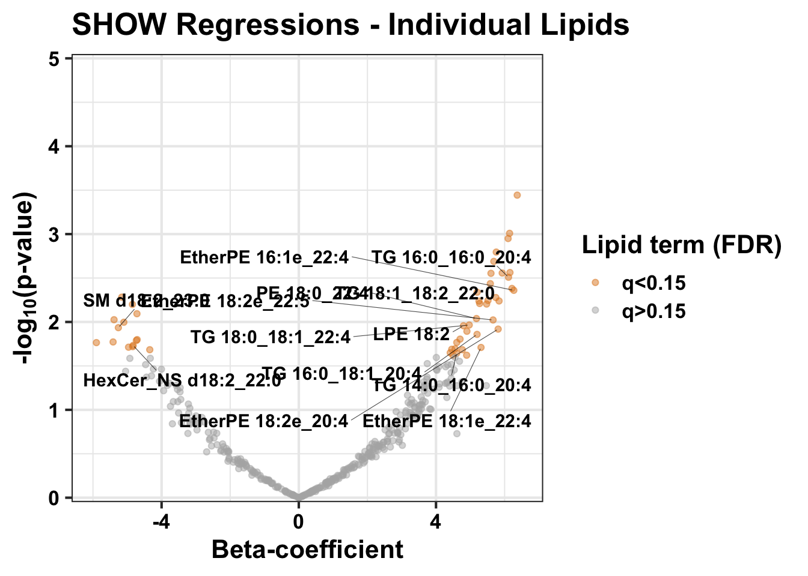

<!DOCTYPE html>
<html xmlns="http://www.w3.org/1999/xhtml" lang="en" xml:lang="en"><head>

<meta charset="utf-8">
<meta name="generator" content="quarto-1.2.269">

<meta name="viewport" content="width=device-width, initial-scale=1.0, user-scalable=yes">

<meta name="author" content="Raghav Jain">
<meta name="dcterms.date" content="2022-12-24">

<title>SHOW data analysis</title>
<style>
code{white-space: pre-wrap;}
span.smallcaps{font-variant: small-caps;}
div.columns{display: flex; gap: min(4vw, 1.5em);}
div.column{flex: auto; overflow-x: auto;}
div.hanging-indent{margin-left: 1.5em; text-indent: -1.5em;}
ul.task-list{list-style: none;}
ul.task-list li input[type="checkbox"] {
  width: 0.8em;
  margin: 0 0.8em 0.2em -1.6em;
  vertical-align: middle;
}
pre > code.sourceCode { white-space: pre; position: relative; }
pre > code.sourceCode > span { display: inline-block; line-height: 1.25; }
pre > code.sourceCode > span:empty { height: 1.2em; }
.sourceCode { overflow: visible; }
code.sourceCode > span { color: inherit; text-decoration: inherit; }
div.sourceCode { margin: 1em 0; }
pre.sourceCode { margin: 0; }
@media screen {
div.sourceCode { overflow: auto; }
}
@media print {
pre > code.sourceCode { white-space: pre-wrap; }
pre > code.sourceCode > span { text-indent: -5em; padding-left: 5em; }
}
pre.numberSource code
  { counter-reset: source-line 0; }
pre.numberSource code > span
  { position: relative; left: -4em; counter-increment: source-line; }
pre.numberSource code > span > a:first-child::before
  { content: counter(source-line);
    position: relative; left: -1em; text-align: right; vertical-align: baseline;
    border: none; display: inline-block;
    -webkit-touch-callout: none; -webkit-user-select: none;
    -khtml-user-select: none; -moz-user-select: none;
    -ms-user-select: none; user-select: none;
    padding: 0 4px; width: 4em;
    color: #aaaaaa;
  }
pre.numberSource { margin-left: 3em; border-left: 1px solid #aaaaaa;  padding-left: 4px; }
div.sourceCode
  {   }
@media screen {
pre > code.sourceCode > span > a:first-child::before { text-decoration: underline; }
}
code span.al { color: #ff0000; font-weight: bold; } /* Alert */
code span.an { color: #60a0b0; font-weight: bold; font-style: italic; } /* Annotation */
code span.at { color: #7d9029; } /* Attribute */
code span.bn { color: #40a070; } /* BaseN */
code span.bu { color: #008000; } /* BuiltIn */
code span.cf { color: #007020; font-weight: bold; } /* ControlFlow */
code span.ch { color: #4070a0; } /* Char */
code span.cn { color: #880000; } /* Constant */
code span.co { color: #60a0b0; font-style: italic; } /* Comment */
code span.cv { color: #60a0b0; font-weight: bold; font-style: italic; } /* CommentVar */
code span.do { color: #ba2121; font-style: italic; } /* Documentation */
code span.dt { color: #902000; } /* DataType */
code span.dv { color: #40a070; } /* DecVal */
code span.er { color: #ff0000; font-weight: bold; } /* Error */
code span.ex { } /* Extension */
code span.fl { color: #40a070; } /* Float */
code span.fu { color: #06287e; } /* Function */
code span.im { color: #008000; font-weight: bold; } /* Import */
code span.in { color: #60a0b0; font-weight: bold; font-style: italic; } /* Information */
code span.kw { color: #007020; font-weight: bold; } /* Keyword */
code span.op { color: #666666; } /* Operator */
code span.ot { color: #007020; } /* Other */
code span.pp { color: #bc7a00; } /* Preprocessor */
code span.sc { color: #4070a0; } /* SpecialChar */
code span.ss { color: #bb6688; } /* SpecialString */
code span.st { color: #4070a0; } /* String */
code span.va { color: #19177c; } /* Variable */
code span.vs { color: #4070a0; } /* VerbatimString */
code span.wa { color: #60a0b0; font-weight: bold; font-style: italic; } /* Warning */
</style>


<script src="SHOW_code_files/libs/clipboard/clipboard.min.js"></script>
<script src="SHOW_code_files/libs/quarto-html/quarto.js"></script>
<script src="SHOW_code_files/libs/quarto-html/popper.min.js"></script>
<script src="SHOW_code_files/libs/quarto-html/tippy.umd.min.js"></script>
<script src="SHOW_code_files/libs/quarto-html/anchor.min.js"></script>
<link href="SHOW_code_files/libs/quarto-html/tippy.css" rel="stylesheet">
<link href="SHOW_code_files/libs/quarto-html/quarto-syntax-highlighting.css" rel="stylesheet" id="quarto-text-highlighting-styles">
<script src="SHOW_code_files/libs/bootstrap/bootstrap.min.js"></script>
<link href="SHOW_code_files/libs/bootstrap/bootstrap-icons.css" rel="stylesheet">
<link href="SHOW_code_files/libs/bootstrap/bootstrap.min.css" rel="stylesheet" id="quarto-bootstrap" data-mode="light">


</head>

<body class="fullcontent">

<div id="quarto-content" class="page-columns page-rows-contents page-layout-article">

<main class="content" id="quarto-document-content">

<header id="title-block-header" class="quarto-title-block default">
<div class="quarto-title">
<h1 class="title">SHOW data analysis</h1>
</div>


<div class="quarto-title-meta">

    <div>
    <div class="quarto-title-meta-heading">Author</div>
    <div class="quarto-title-meta-contents">
             <p>Raghav Jain </p>
          </div>
  </div>
    
    <div>
    <div class="quarto-title-meta-heading">Published</div>
    <div class="quarto-title-meta-contents">
      <p class="date">December 24, 2022</p>
    </div>
  </div>
  
    
  </div>
  

</header>

<section id="summary" class="level1">
<h1>1. Summary</h1>
<p>We retrieved anthropometric data from the Survey of the Survey of the Health of Wisconsin (SHOW) study on 119 Black and White females. We performed in-house cytokine and lipidomics measurements to determine signatures of high blood pressure (HBP; systolic BP&gt;120 or diastolic BP&gt;80). Lipidomics data is in units of nM.</p>
<p>Release of de-identified data pertaining to this analysis and available on Github was approved by the SHOW study in accordance with their IRB. For more information on methods and the target populations, please refer to our manuscript (updated link on Github page at Rjain52/CVD-Lipidomics). *** # 2. Load packages and data Please see ‘Session info’ for system requirements. For Mac, XQuartz is required to output pdf documents using ‘Cairo’ package. Note that all sections of the script are reliant on this section.</p>
<div class="cell">
<div class="sourceCode cell-code" id="cb1"><pre class="sourceCode r code-with-copy"><code class="sourceCode r"><span id="cb1-1"><a href="#cb1-1" aria-hidden="true" tabindex="-1"></a><span class="co"># Run the packages twice to ensure installation and loading of packages</span></span>
<span id="cb1-2"><a href="#cb1-2" aria-hidden="true" tabindex="-1"></a><span class="co"># may need to download 'xrun' package separately before loading this</span></span>
<span id="cb1-3"><a href="#cb1-3" aria-hidden="true" tabindex="-1"></a><span class="cf">if</span>(<span class="sc">!</span><span class="fu">require</span>(tidyverse)){<span class="fu">install.packages</span>(<span class="st">"tidyverse"</span>)}</span></code><button title="Copy to Clipboard" class="code-copy-button"><i class="bi"></i></button></pre></div>
<div class="cell-output cell-output-stderr">
<pre><code>Loading required package: tidyverse</code></pre>
</div>
<div class="cell-output cell-output-stderr">
<pre><code>── Attaching packages ─────────────────────────────────────── tidyverse 1.3.2 ──
✔ ggplot2 3.4.0      ✔ purrr   0.3.5 
✔ tibble  3.1.8      ✔ dplyr   1.0.10
✔ tidyr   1.2.1      ✔ stringr 1.5.0 
✔ readr   2.1.3      ✔ forcats 0.5.2 
── Conflicts ────────────────────────────────────────── tidyverse_conflicts() ──
✖ dplyr::filter() masks stats::filter()
✖ dplyr::lag()    masks stats::lag()</code></pre>
</div>
<div class="sourceCode cell-code" id="cb4"><pre class="sourceCode r code-with-copy"><code class="sourceCode r"><span id="cb4-1"><a href="#cb4-1" aria-hidden="true" tabindex="-1"></a><span class="cf">if</span>(<span class="sc">!</span><span class="fu">require</span>(ggpubr)){<span class="fu">install.packages</span>(<span class="st">"ggpubr"</span>)}</span></code><button title="Copy to Clipboard" class="code-copy-button"><i class="bi"></i></button></pre></div>
<div class="cell-output cell-output-stderr">
<pre><code>Loading required package: ggpubr</code></pre>
</div>
<div class="sourceCode cell-code" id="cb6"><pre class="sourceCode r code-with-copy"><code class="sourceCode r"><span id="cb6-1"><a href="#cb6-1" aria-hidden="true" tabindex="-1"></a><span class="cf">if</span>(<span class="sc">!</span><span class="fu">require</span>(rstatix)){<span class="fu">install.packages</span>(<span class="st">"rstatix"</span>)}</span></code><button title="Copy to Clipboard" class="code-copy-button"><i class="bi"></i></button></pre></div>
<div class="cell-output cell-output-stderr">
<pre><code>Loading required package: rstatix

Attaching package: 'rstatix'

The following object is masked from 'package:stats':

    filter</code></pre>
</div>
<div class="sourceCode cell-code" id="cb8"><pre class="sourceCode r code-with-copy"><code class="sourceCode r"><span id="cb8-1"><a href="#cb8-1" aria-hidden="true" tabindex="-1"></a><span class="cf">if</span>(<span class="sc">!</span><span class="fu">require</span>(ggsci)){<span class="fu">install.packages</span>(<span class="st">"ggsci"</span>)}</span></code><button title="Copy to Clipboard" class="code-copy-button"><i class="bi"></i></button></pre></div>
<div class="cell-output cell-output-stderr">
<pre><code>Loading required package: ggsci</code></pre>
</div>
<div class="sourceCode cell-code" id="cb10"><pre class="sourceCode r code-with-copy"><code class="sourceCode r"><span id="cb10-1"><a href="#cb10-1" aria-hidden="true" tabindex="-1"></a><span class="cf">if</span>(<span class="sc">!</span><span class="fu">require</span>(scales)){<span class="fu">install.packages</span>(<span class="st">"scales"</span>)}</span></code><button title="Copy to Clipboard" class="code-copy-button"><i class="bi"></i></button></pre></div>
<div class="cell-output cell-output-stderr">
<pre><code>Loading required package: scales

Attaching package: 'scales'

The following object is masked from 'package:purrr':

    discard

The following object is masked from 'package:readr':

    col_factor</code></pre>
</div>
<div class="sourceCode cell-code" id="cb12"><pre class="sourceCode r code-with-copy"><code class="sourceCode r"><span id="cb12-1"><a href="#cb12-1" aria-hidden="true" tabindex="-1"></a><span class="cf">if</span>(<span class="sc">!</span><span class="fu">require</span>(Cairo)){<span class="fu">install.packages</span>(<span class="st">"Cairo"</span>)}</span></code><button title="Copy to Clipboard" class="code-copy-button"><i class="bi"></i></button></pre></div>
<div class="cell-output cell-output-stderr">
<pre><code>Loading required package: Cairo</code></pre>
</div>
<div class="sourceCode cell-code" id="cb14"><pre class="sourceCode r code-with-copy"><code class="sourceCode r"><span id="cb14-1"><a href="#cb14-1" aria-hidden="true" tabindex="-1"></a><span class="cf">if</span>(<span class="sc">!</span><span class="fu">require</span>(RColorBrewer)){<span class="fu">install.packages</span>(<span class="st">"RColorBrewer"</span>)}</span></code><button title="Copy to Clipboard" class="code-copy-button"><i class="bi"></i></button></pre></div>
<div class="cell-output cell-output-stderr">
<pre><code>Loading required package: RColorBrewer</code></pre>
</div>
<div class="sourceCode cell-code" id="cb16"><pre class="sourceCode r code-with-copy"><code class="sourceCode r"><span id="cb16-1"><a href="#cb16-1" aria-hidden="true" tabindex="-1"></a><span class="cf">if</span>(<span class="sc">!</span><span class="fu">require</span>(ggrepel)){<span class="fu">install.packages</span>(<span class="st">"ggrepel"</span>)}</span></code><button title="Copy to Clipboard" class="code-copy-button"><i class="bi"></i></button></pre></div>
<div class="cell-output cell-output-stderr">
<pre><code>Loading required package: ggrepel</code></pre>
</div>
<div class="sourceCode cell-code" id="cb18"><pre class="sourceCode r code-with-copy"><code class="sourceCode r"><span id="cb18-1"><a href="#cb18-1" aria-hidden="true" tabindex="-1"></a><span class="co"># may need to download 'devEMF' and 'rvg' package separately before loading this</span></span>
<span id="cb18-2"><a href="#cb18-2" aria-hidden="true" tabindex="-1"></a><span class="cf">if</span>(<span class="sc">!</span><span class="fu">require</span>(webr)){<span class="fu">install.packages</span>(<span class="st">"webr"</span>)}</span></code><button title="Copy to Clipboard" class="code-copy-button"><i class="bi"></i></button></pre></div>
<div class="cell-output cell-output-stderr">
<pre><code>Loading required package: webr</code></pre>
</div>
<div class="sourceCode cell-code" id="cb20"><pre class="sourceCode r code-with-copy"><code class="sourceCode r"><span id="cb20-1"><a href="#cb20-1" aria-hidden="true" tabindex="-1"></a><span class="co"># Set default theme for plots</span></span>
<span id="cb20-2"><a href="#cb20-2" aria-hidden="true" tabindex="-1"></a><span class="fu">theme_set</span>(<span class="fu">theme_bw</span>(<span class="at">base_size =</span> <span class="dv">16</span>, <span class="at">base_family =</span> <span class="st">"Arial"</span>))</span>
<span id="cb20-3"><a href="#cb20-3" aria-hidden="true" tabindex="-1"></a></span>
<span id="cb20-4"><a href="#cb20-4" aria-hidden="true" tabindex="-1"></a><span class="co"># Set default color schemes</span></span>
<span id="cb20-5"><a href="#cb20-5" aria-hidden="true" tabindex="-1"></a>mypal <span class="ot">&lt;-</span> <span class="fu">pal_nejm</span>(<span class="at">palette =</span> <span class="fu">c</span>(<span class="st">"default"</span>))(<span class="dv">8</span>)</span>
<span id="cb20-6"><a href="#cb20-6" aria-hidden="true" tabindex="-1"></a><span class="fu">show_col</span>(mypal)</span></code><button title="Copy to Clipboard" class="code-copy-button"><i class="bi"></i></button></pre></div>
<div class="cell-output-display">
<p></p>
</div>
<div class="sourceCode cell-code" id="cb21"><pre class="sourceCode r code-with-copy"><code class="sourceCode r"><span id="cb21-1"><a href="#cb21-1" aria-hidden="true" tabindex="-1"></a><span class="fu">palette</span>(mypal)</span>
<span id="cb21-2"><a href="#cb21-2" aria-hidden="true" tabindex="-1"></a>show_pal <span class="ot">&lt;-</span> <span class="fu">c</span>(<span class="st">"#20854EFF"</span>, <span class="st">"#E18727FF"</span>)</span>
<span id="cb21-3"><a href="#cb21-3" aria-hidden="true" tabindex="-1"></a>mypal2 <span class="ot">&lt;-</span> <span class="fu">pal_jama</span>(<span class="at">palette =</span> <span class="fu">c</span>(<span class="st">"default"</span>))(<span class="dv">7</span>)</span>
<span id="cb21-4"><a href="#cb21-4" aria-hidden="true" tabindex="-1"></a>palette_sc <span class="ot">&lt;-</span> <span class="fu">c</span>(<span class="st">"#1B1919FF"</span>, <span class="st">"#AD002AFF"</span>)</span>
<span id="cb21-5"><a href="#cb21-5" aria-hidden="true" tabindex="-1"></a></span>
<span id="cb21-6"><a href="#cb21-6" aria-hidden="true" tabindex="-1"></a><span class="co"># Load data</span></span>
<span id="cb21-7"><a href="#cb21-7" aria-hidden="true" tabindex="-1"></a>my_data <span class="ot">&lt;-</span> <span class="fu">read_csv</span>(<span class="st">"data/SHOW_data.csv"</span>)</span></code><button title="Copy to Clipboard" class="code-copy-button"><i class="bi"></i></button></pre></div>
<div class="cell-output cell-output-stderr">
<pre><code>Rows: 119 Columns: 414
── Column specification ────────────────────────────────────────────────────────
Delimiter: ","
chr   (1): Race
dbl (413): Simcox_ID, Age, Systolic BP, Diastolic BP, WC (cm), BMI, HbA1c, G...

ℹ Use `spec()` to retrieve the full column specification for this data.
ℹ Specify the column types or set `show_col_types = FALSE` to quiet this message.</code></pre>
</div>
<div class="sourceCode cell-code" id="cb23"><pre class="sourceCode r code-with-copy"><code class="sourceCode r"><span id="cb23-1"><a href="#cb23-1" aria-hidden="true" tabindex="-1"></a><span class="co"># Create variable to code High BP</span></span>
<span id="cb23-2"><a href="#cb23-2" aria-hidden="true" tabindex="-1"></a>Diag_HBP <span class="ot">&lt;-</span> <span class="fu">ifelse</span>(my_data<span class="sc">$</span><span class="st">`</span><span class="at">Systolic BP</span><span class="st">`</span> <span class="sc">&gt;</span> <span class="dv">120</span> <span class="sc">|</span> my_data<span class="sc">$</span><span class="st">`</span><span class="at">Diastolic BP</span><span class="st">`</span> <span class="sc">&gt;</span> <span class="dv">80</span>,</span>
<span id="cb23-3"><a href="#cb23-3" aria-hidden="true" tabindex="-1"></a>                             <span class="st">"High"</span>, <span class="st">"Normal"</span>)</span>
<span id="cb23-4"><a href="#cb23-4" aria-hidden="true" tabindex="-1"></a></span>
<span id="cb23-5"><a href="#cb23-5" aria-hidden="true" tabindex="-1"></a><span class="co"># Add new binary BP variable as a factor</span></span>
<span id="cb23-6"><a href="#cb23-6" aria-hidden="true" tabindex="-1"></a>my_data <span class="ot">&lt;-</span> my_data <span class="sc">|&gt;</span> </span>
<span id="cb23-7"><a href="#cb23-7" aria-hidden="true" tabindex="-1"></a>  <span class="fu">add_column</span>(Diag_HBP, <span class="at">.before =</span> <span class="dv">4</span>)</span>
<span id="cb23-8"><a href="#cb23-8" aria-hidden="true" tabindex="-1"></a></span>
<span id="cb23-9"><a href="#cb23-9" aria-hidden="true" tabindex="-1"></a>my_data<span class="sc">$</span>Diag_HBP <span class="ot">&lt;-</span> <span class="fu">factor</span>(my_data<span class="sc">$</span>Diag_HBP, </span>
<span id="cb23-10"><a href="#cb23-10" aria-hidden="true" tabindex="-1"></a>                           <span class="at">levels =</span> <span class="fu">c</span>(<span class="st">"Normal"</span>, <span class="st">"High"</span>))</span>
<span id="cb23-11"><a href="#cb23-11" aria-hidden="true" tabindex="-1"></a></span>
<span id="cb23-12"><a href="#cb23-12" aria-hidden="true" tabindex="-1"></a><span class="co"># Remove any participant without appropriate BP data</span></span>
<span id="cb23-13"><a href="#cb23-13" aria-hidden="true" tabindex="-1"></a><span class="co"># This is a sanity check; no observations should be dropped for this analysis</span></span>
<span id="cb23-14"><a href="#cb23-14" aria-hidden="true" tabindex="-1"></a>my_data <span class="ot">&lt;-</span> my_data <span class="sc">|&gt;</span> <span class="fu">drop_na</span>(Diag_HBP) </span>
<span id="cb23-15"><a href="#cb23-15" aria-hidden="true" tabindex="-1"></a></span>
<span id="cb23-16"><a href="#cb23-16" aria-hidden="true" tabindex="-1"></a>my_data<span class="sc">$</span>Race <span class="ot">&lt;-</span> <span class="fu">factor</span>(my_data<span class="sc">$</span>Race, </span>
<span id="cb23-17"><a href="#cb23-17" aria-hidden="true" tabindex="-1"></a>                           <span class="at">levels =</span> <span class="fu">c</span>(<span class="st">"Caucasian"</span>, </span>
<span id="cb23-18"><a href="#cb23-18" aria-hidden="true" tabindex="-1"></a>                                      <span class="st">"African-American"</span>))</span>
<span id="cb23-19"><a href="#cb23-19" aria-hidden="true" tabindex="-1"></a></span>
<span id="cb23-20"><a href="#cb23-20" aria-hidden="true" tabindex="-1"></a>my_data<span class="sc">$</span>Race <span class="ot">&lt;-</span> <span class="fu">recode</span>(my_data<span class="sc">$</span>Race, </span>
<span id="cb23-21"><a href="#cb23-21" aria-hidden="true" tabindex="-1"></a>                              <span class="at">Caucasian=</span><span class="st">"White"</span>,</span>
<span id="cb23-22"><a href="#cb23-22" aria-hidden="true" tabindex="-1"></a>                             <span class="st">`</span><span class="at">African-American</span><span class="st">`</span><span class="ot">=</span><span class="st">"Black"</span>)</span>
<span id="cb23-23"><a href="#cb23-23" aria-hidden="true" tabindex="-1"></a></span>
<span id="cb23-24"><a href="#cb23-24" aria-hidden="true" tabindex="-1"></a><span class="co"># Working dataset</span></span>
<span id="cb23-25"><a href="#cb23-25" aria-hidden="true" tabindex="-1"></a>lipid_data <span class="ot">&lt;-</span> my_data</span></code><button title="Copy to Clipboard" class="code-copy-button"><i class="bi"></i></button></pre></div>
</div>
<hr>
</section>
<section id="general-plots" class="level1">
<h1>3. General plots</h1>
<p>Below is an example of code used for each figure. ## Cholesterol correlation plot</p>
<div class="cell">
<div class="sourceCode cell-code" id="cb24"><pre class="sourceCode r code-with-copy"><code class="sourceCode r"><span id="cb24-1"><a href="#cb24-1" aria-hidden="true" tabindex="-1"></a><span class="co"># Subset Race, cholesterol and systolic BP variables</span></span>
<span id="cb24-2"><a href="#cb24-2" aria-hidden="true" tabindex="-1"></a>Z <span class="ot">&lt;-</span> lipid_data <span class="sc">|&gt;</span> <span class="fu">select</span>(Race, <span class="st">`</span><span class="at">Systolic BP</span><span class="st">`</span>, <span class="st">`</span><span class="at">Total cholesterol</span><span class="st">`</span>)</span>
<span id="cb24-3"><a href="#cb24-3" aria-hidden="true" tabindex="-1"></a></span>
<span id="cb24-4"><a href="#cb24-4" aria-hidden="true" tabindex="-1"></a>p0 <span class="ot">&lt;-</span> <span class="fu">ggscatter</span>(Z,                        <span class="co"># Make scatterplot with BP on x-axis, cholesterol on y-axis</span></span>
<span id="cb24-5"><a href="#cb24-5" aria-hidden="true" tabindex="-1"></a>                <span class="at">x =</span> <span class="st">"Systolic BP"</span>, </span>
<span id="cb24-6"><a href="#cb24-6" aria-hidden="true" tabindex="-1"></a>                <span class="at">y =</span> <span class="st">"Total cholesterol"</span>,</span>
<span id="cb24-7"><a href="#cb24-7" aria-hidden="true" tabindex="-1"></a>                <span class="at">add =</span> <span class="st">"reg.line"</span>, <span class="at">conf.int =</span> <span class="cn">FALSE</span>,       <span class="co"># Plot regression line, no confident interval</span></span>
<span id="cb24-8"><a href="#cb24-8" aria-hidden="true" tabindex="-1"></a>                <span class="at">color =</span> <span class="st">"Race"</span>, <span class="at">palette =</span> palette_sc,     <span class="co"># Add regression lines</span></span>
<span id="cb24-9"><a href="#cb24-9" aria-hidden="true" tabindex="-1"></a>                <span class="at">shape =</span> <span class="st">"Race"</span>) <span class="sc">+</span>                         <span class="co"># Change point shape by Race</span></span>
<span id="cb24-10"><a href="#cb24-10" aria-hidden="true" tabindex="-1"></a>  <span class="fu">stat_cor</span>(<span class="fu">aes</span>(<span class="at">color =</span> Race),                             <span class="co"># Plot Spearman correlation by Race</span></span>
<span id="cb24-11"><a href="#cb24-11" aria-hidden="true" tabindex="-1"></a>           <span class="at">method =</span> <span class="st">"spearman"</span>,</span>
<span id="cb24-12"><a href="#cb24-12" aria-hidden="true" tabindex="-1"></a>           <span class="at">label.x =</span> <span class="fu">min</span>(Z<span class="sc">$</span><span class="st">`</span><span class="at">Systolic BP</span><span class="st">`</span>),                <span class="co"># x-coordinate of label</span></span>
<span id="cb24-13"><a href="#cb24-13" aria-hidden="true" tabindex="-1"></a>           <span class="at">p.accuracy =</span> <span class="fl">0.001</span>, <span class="at">r.accuracy =</span> <span class="fl">0.01</span>) <span class="sc">+</span>       <span class="co"># rounding for r and p-values</span></span>
<span id="cb24-14"><a href="#cb24-14" aria-hidden="true" tabindex="-1"></a>  <span class="fu">xlab</span>(<span class="st">"Systolic Blood Pressure (mmHg)"</span>) <span class="sc">+</span>                <span class="co"># x-axis title </span></span>
<span id="cb24-15"><a href="#cb24-15" aria-hidden="true" tabindex="-1"></a>  <span class="fu">ylab</span>(<span class="st">"Total cholesterol (mg/dL)"</span>) <span class="sc">+</span>                     <span class="co"># y-axis title</span></span>
<span id="cb24-16"><a href="#cb24-16" aria-hidden="true" tabindex="-1"></a>  <span class="fu">ggtitle</span>(<span class="st">"Systolic BP versus Total Cholesterol - SHOW"</span>) <span class="sc">+</span>   <span class="co"># Plot title</span></span>
<span id="cb24-17"><a href="#cb24-17" aria-hidden="true" tabindex="-1"></a>  <span class="fu">ylim</span>(<span class="fu">c</span>(<span class="dv">100</span>, <span class="dv">350</span>)) <span class="sc">+</span>                                     <span class="co"># y-axis limits</span></span>
<span id="cb24-18"><a href="#cb24-18" aria-hidden="true" tabindex="-1"></a>  <span class="fu">theme_minimal</span>() <span class="sc">+</span>                                       <span class="co"># change theme</span></span>
<span id="cb24-19"><a href="#cb24-19" aria-hidden="true" tabindex="-1"></a>  <span class="fu">theme</span>(<span class="at">legend.position =</span> <span class="st">"right"</span>,                        <span class="co"># change legend, font size and font</span></span>
<span id="cb24-20"><a href="#cb24-20" aria-hidden="true" tabindex="-1"></a>        <span class="at">text =</span> <span class="fu">element_text</span>(<span class="at">size =</span> <span class="dv">16</span>, </span>
<span id="cb24-21"><a href="#cb24-21" aria-hidden="true" tabindex="-1"></a>                            <span class="at">family =</span> <span class="st">"Arial"</span>),</span>
<span id="cb24-22"><a href="#cb24-22" aria-hidden="true" tabindex="-1"></a>        <span class="at">axis.line =</span> <span class="fu">element_line</span>(<span class="at">colour =</span> <span class="st">"black"</span>)</span>
<span id="cb24-23"><a href="#cb24-23" aria-hidden="true" tabindex="-1"></a>        )</span>
<span id="cb24-24"><a href="#cb24-24" aria-hidden="true" tabindex="-1"></a>p0</span></code><button title="Copy to Clipboard" class="code-copy-button"><i class="bi"></i></button></pre></div>
<div class="cell-output cell-output-stderr">
<pre><code>`geom_smooth()` using formula = 'y ~ x'</code></pre>
</div>
<div class="cell-output cell-output-stderr">
<pre><code>Warning: Removed 2 rows containing non-finite values (`stat_smooth()`).</code></pre>
</div>
<div class="cell-output cell-output-stderr">
<pre><code>Warning: Removed 2 rows containing non-finite values (`stat_cor()`).</code></pre>
</div>
<div class="cell-output cell-output-stderr">
<pre><code>Warning: Removed 2 rows containing missing values (`geom_point()`).</code></pre>
</div>
<div class="cell-output-display">
<p></p>
</div>
<div class="sourceCode cell-code" id="cb29"><pre class="sourceCode r code-with-copy"><code class="sourceCode r"><span id="cb29-1"><a href="#cb29-1" aria-hidden="true" tabindex="-1"></a><span class="fu">CairoPDF</span>(<span class="at">file =</span> <span class="st">"output/cholesterol.pdf"</span>, </span>
<span id="cb29-2"><a href="#cb29-2" aria-hidden="true" tabindex="-1"></a>         <span class="at">height =</span> <span class="dv">8</span>, <span class="at">width =</span> <span class="dv">10</span>)</span>
<span id="cb29-3"><a href="#cb29-3" aria-hidden="true" tabindex="-1"></a>  <span class="fu">print</span>(p0)</span></code><button title="Copy to Clipboard" class="code-copy-button"><i class="bi"></i></button></pre></div>
<div class="cell-output cell-output-stderr">
<pre><code>`geom_smooth()` using formula = 'y ~ x'</code></pre>
</div>
<div class="cell-output cell-output-stderr">
<pre><code>Warning: Removed 2 rows containing non-finite values (`stat_smooth()`).</code></pre>
</div>
<div class="cell-output cell-output-stderr">
<pre><code>Warning: Removed 2 rows containing non-finite values (`stat_cor()`).</code></pre>
</div>
<div class="cell-output cell-output-stderr">
<pre><code>Warning: Removed 2 rows containing missing values (`geom_point()`).</code></pre>
</div>
<div class="cell-output-display">
<p></p>
</div>
<div class="sourceCode cell-code" id="cb34"><pre class="sourceCode r code-with-copy"><code class="sourceCode r"><span id="cb34-1"><a href="#cb34-1" aria-hidden="true" tabindex="-1"></a><span class="fu">dev.off</span>()</span></code><button title="Copy to Clipboard" class="code-copy-button"><i class="bi"></i></button></pre></div>
<div class="cell-output cell-output-stdout">
<pre><code>quartz_off_screen 
                2 </code></pre>
</div>
</div>
<section id="violin-plot" class="level2">
<h2 class="anchored" data-anchor-id="violin-plot">Violin Plot</h2>
<div class="cell">
<div class="sourceCode cell-code" id="cb36"><pre class="sourceCode r code-with-copy"><code class="sourceCode r"><span id="cb36-1"><a href="#cb36-1" aria-hidden="true" tabindex="-1"></a>Z <span class="ot">=</span> lipid_data</span>
<span id="cb36-2"><a href="#cb36-2" aria-hidden="true" tabindex="-1"></a></span>
<span id="cb36-3"><a href="#cb36-3" aria-hidden="true" tabindex="-1"></a><span class="co"># Below, the hsCRP plot is reproduced</span></span>
<span id="cb36-4"><a href="#cb36-4" aria-hidden="true" tabindex="-1"></a></span>
<span id="cb36-5"><a href="#cb36-5" aria-hidden="true" tabindex="-1"></a>p0 <span class="ot">&lt;-</span> Z <span class="sc">|&gt;</span></span>
<span id="cb36-6"><a href="#cb36-6" aria-hidden="true" tabindex="-1"></a>  <span class="fu">ggplot</span>(<span class="fu">aes</span>(<span class="at">x=</span>Race,                    <span class="co"># Race is the x-axis variable</span></span>
<span id="cb36-7"><a href="#cb36-7" aria-hidden="true" tabindex="-1"></a>             <span class="at">y=</span><span class="fu">log10</span>(<span class="st">`</span><span class="at">hsCRP (ng/mL)</span><span class="st">`</span>),  <span class="co"># hsCRP is log10 transformed</span></span>
<span id="cb36-8"><a href="#cb36-8" aria-hidden="true" tabindex="-1"></a>             <span class="at">group =</span> Diag_HBP,          <span class="co"># BP groups within race are plotted</span></span>
<span id="cb36-9"><a href="#cb36-9" aria-hidden="true" tabindex="-1"></a>             <span class="at">fill =</span> Diag_HBP)) <span class="sc">+</span></span>
<span id="cb36-10"><a href="#cb36-10" aria-hidden="true" tabindex="-1"></a>  <span class="fu">geom_violin</span>(<span class="fu">aes</span>(<span class="at">group =</span> <span class="fu">interaction</span>(Diag_HBP, Race)), <span class="co"># violin plot added</span></span>
<span id="cb36-11"><a href="#cb36-11" aria-hidden="true" tabindex="-1"></a>                      <span class="at">scale =</span> <span class="st">"area"</span>) <span class="sc">+</span></span>
<span id="cb36-12"><a href="#cb36-12" aria-hidden="true" tabindex="-1"></a>  <span class="fu">scale_fill_manual</span>(<span class="st">"Blood Pressure"</span>,   <span class="co"># Legend title and group colors</span></span>
<span id="cb36-13"><a href="#cb36-13" aria-hidden="true" tabindex="-1"></a>                    <span class="at">values =</span> <span class="fu">c</span>(<span class="st">"#709AE1FF"</span>, <span class="st">"#FED439FF"</span>)</span>
<span id="cb36-14"><a href="#cb36-14" aria-hidden="true" tabindex="-1"></a>                    ) <span class="sc">+</span></span>
<span id="cb36-15"><a href="#cb36-15" aria-hidden="true" tabindex="-1"></a>  <span class="fu">geom_boxplot</span>(<span class="fu">aes</span>(<span class="at">group =</span> <span class="fu">interaction</span>(Diag_HBP, Race)),  <span class="co"># overlay boxplot</span></span>
<span id="cb36-16"><a href="#cb36-16" aria-hidden="true" tabindex="-1"></a>               <span class="at">width =</span> <span class="fl">0.3</span>, <span class="at">alpha =</span> <span class="fl">0.8</span>,                  <span class="co"># size and color shade</span></span>
<span id="cb36-17"><a href="#cb36-17" aria-hidden="true" tabindex="-1"></a>               <span class="at">outlier.shape =</span> <span class="cn">NA</span>,                        <span class="co"># not plotting outliers</span></span>
<span id="cb36-18"><a href="#cb36-18" aria-hidden="true" tabindex="-1"></a>               <span class="at">color =</span> <span class="st">"black"</span>,                           <span class="co"># boxplot outline</span></span>
<span id="cb36-19"><a href="#cb36-19" aria-hidden="true" tabindex="-1"></a>               <span class="at">fill =</span> <span class="st">"white"</span>,                            <span class="co"># boxplot fill</span></span>
<span id="cb36-20"><a href="#cb36-20" aria-hidden="true" tabindex="-1"></a>               <span class="at">position =</span> <span class="fu">position_dodge</span>(<span class="at">width =</span> <span class="fl">0.9</span>)     <span class="co"># plot offset by x-axis</span></span>
<span id="cb36-21"><a href="#cb36-21" aria-hidden="true" tabindex="-1"></a>               ) <span class="sc">+</span></span>
<span id="cb36-22"><a href="#cb36-22" aria-hidden="true" tabindex="-1"></a>  <span class="fu">geom_point</span>(<span class="at">shape =</span> <span class="dv">21</span>,                 <span class="co"># Add individual points</span></span>
<span id="cb36-23"><a href="#cb36-23" aria-hidden="true" tabindex="-1"></a>             <span class="at">size =</span> <span class="dv">2</span>,                </span>
<span id="cb36-24"><a href="#cb36-24" aria-hidden="true" tabindex="-1"></a>             <span class="at">alpha =</span> <span class="fl">0.2</span>, </span>
<span id="cb36-25"><a href="#cb36-25" aria-hidden="true" tabindex="-1"></a>             <span class="at">position=</span><span class="fu">position_jitterdodge</span>(<span class="at">dodge.width =</span> <span class="fl">0.9</span>) <span class="co"># Add jitter to points</span></span>
<span id="cb36-26"><a href="#cb36-26" aria-hidden="true" tabindex="-1"></a>             ) <span class="sc">+</span> </span>
<span id="cb36-27"><a href="#cb36-27" aria-hidden="true" tabindex="-1"></a>  <span class="fu">theme</span>(<span class="at">legend.position =</span> <span class="st">"none"</span>,                 <span class="co"># legend plot for points</span></span>
<span id="cb36-28"><a href="#cb36-28" aria-hidden="true" tabindex="-1"></a>        <span class="at">plot.title =</span> <span class="fu">element_text</span>(<span class="at">size =</span> <span class="dv">11</span>)</span>
<span id="cb36-29"><a href="#cb36-29" aria-hidden="true" tabindex="-1"></a>        ) <span class="sc">+</span></span>
<span id="cb36-30"><a href="#cb36-30" aria-hidden="true" tabindex="-1"></a>  <span class="fu">xlab</span>(<span class="st">"Race"</span>) <span class="sc">+</span>                                  <span class="co"># x-axis title</span></span>
<span id="cb36-31"><a href="#cb36-31" aria-hidden="true" tabindex="-1"></a>  <span class="fu">ylab</span>(<span class="fu">bquote</span>(<span class="st">'log'</span>[<span class="dv">10</span>]<span class="sc">*</span><span class="st">'(hsCRP)'</span>)  <span class="co"># y-axis title</span></span>
<span id="cb36-32"><a href="#cb36-32" aria-hidden="true" tabindex="-1"></a>       ) <span class="sc">+</span></span>
<span id="cb36-33"><a href="#cb36-33" aria-hidden="true" tabindex="-1"></a>  <span class="fu">theme_bw</span>(<span class="at">base_size =</span> <span class="dv">16</span>, <span class="at">base_family =</span> <span class="st">"Arial"</span>) <span class="sc">+</span>  <span class="co"># simple theme</span></span>
<span id="cb36-34"><a href="#cb36-34" aria-hidden="true" tabindex="-1"></a>  <span class="fu">theme</span>(<span class="at">legend.position =</span> <span class="st">'right'</span>) <span class="sc">+</span>                 <span class="co"># additional theme position</span></span>
<span id="cb36-35"><a href="#cb36-35" aria-hidden="true" tabindex="-1"></a>  <span class="fu">ggtitle</span>(<span class="st">"SHOW hsCRP (ng/mL)"</span>) <span class="sc">+</span>                    <span class="co"># plot title</span></span>
<span id="cb36-36"><a href="#cb36-36" aria-hidden="true" tabindex="-1"></a>  <span class="fu">stat_compare_means</span>(<span class="at">label =</span> <span class="st">"p.format"</span>,             <span class="co"># non-parametric test</span></span>
<span id="cb36-37"><a href="#cb36-37" aria-hidden="true" tabindex="-1"></a>                     <span class="at">label.x =</span> <span class="fl">1.5</span>,</span>
<span id="cb36-38"><a href="#cb36-38" aria-hidden="true" tabindex="-1"></a>                     <span class="at">label.y =</span> <span class="fl">1.05</span><span class="sc">*</span>(<span class="fu">log10</span>(<span class="fu">max</span>(Z<span class="sc">$</span><span class="st">`</span><span class="at">hsCRP (ng/mL)</span><span class="st">`</span>, </span>
<span id="cb36-39"><a href="#cb36-39" aria-hidden="true" tabindex="-1"></a>                                               <span class="at">na.rm =</span> T)</span>
<span id="cb36-40"><a href="#cb36-40" aria-hidden="true" tabindex="-1"></a>                                           )</span>
<span id="cb36-41"><a href="#cb36-41" aria-hidden="true" tabindex="-1"></a>                                     ), </span>
<span id="cb36-42"><a href="#cb36-42" aria-hidden="true" tabindex="-1"></a>                     <span class="at">method =</span> <span class="st">"wilcox.test"</span>)</span>
<span id="cb36-43"><a href="#cb36-43" aria-hidden="true" tabindex="-1"></a><span class="co"># View plot</span></span>
<span id="cb36-44"><a href="#cb36-44" aria-hidden="true" tabindex="-1"></a>p0</span></code><button title="Copy to Clipboard" class="code-copy-button"><i class="bi"></i></button></pre></div>
<div class="cell-output-display">
<p></p>
</div>
<div class="sourceCode cell-code" id="cb37"><pre class="sourceCode r code-with-copy"><code class="sourceCode r"><span id="cb37-1"><a href="#cb37-1" aria-hidden="true" tabindex="-1"></a><span class="co"># save .pdf of plot in already created folder titled 'output'</span></span>
<span id="cb37-2"><a href="#cb37-2" aria-hidden="true" tabindex="-1"></a><span class="fu">CairoPDF</span>(<span class="st">"output/violin.pdf"</span>)</span>
<span id="cb37-3"><a href="#cb37-3" aria-hidden="true" tabindex="-1"></a>      <span class="fu">print</span>(p0)</span></code><button title="Copy to Clipboard" class="code-copy-button"><i class="bi"></i></button></pre></div>
<div class="cell-output-display">
<p></p>
</div>
<div class="sourceCode cell-code" id="cb38"><pre class="sourceCode r code-with-copy"><code class="sourceCode r"><span id="cb38-1"><a href="#cb38-1" aria-hidden="true" tabindex="-1"></a><span class="fu">dev.off</span>()</span></code><button title="Copy to Clipboard" class="code-copy-button"><i class="bi"></i></button></pre></div>
<div class="cell-output cell-output-stdout">
<pre><code>quartz_off_screen 
                2 </code></pre>
</div>
</div>
</section>
<section id="lipidomics-methods" class="level2">
<h2 class="anchored" data-anchor-id="lipidomics-methods">Lipidomics Methods</h2>
<p>These are the plots describing our method.</p>
<section id="scatter-plot-of-identified-lipids." class="level3">
<h3 class="anchored" data-anchor-id="scatter-plot-of-identified-lipids.">Scatter plot of identified lipids.</h3>
<div class="cell">
<div class="sourceCode cell-code" id="cb40"><pre class="sourceCode r code-with-copy"><code class="sourceCode r"><span id="cb40-1"><a href="#cb40-1" aria-hidden="true" tabindex="-1"></a><span class="co"># Read in data on identified lipids in the method</span></span>
<span id="cb40-2"><a href="#cb40-2" aria-hidden="true" tabindex="-1"></a>all_id <span class="ot">&lt;-</span> <span class="fu">read_csv</span>(<span class="st">"data/method_plot.csv"</span>)</span></code><button title="Copy to Clipboard" class="code-copy-button"><i class="bi"></i></button></pre></div>
<div class="cell-output cell-output-stderr">
<pre><code>Rows: 358 Columns: 34
── Column specification ────────────────────────────────────────────────────────
Delimiter: ","
chr (11): Lipid Class, Name, Formula.x, Polarity, Formula.y, Ion Species, Su...
dbl (19): Mass (avg), RSD (Mass, ppm), Saturated, RT (avg), RT (span), Heigh...
lgl  (4): DT, CCS, Gas, CAS ID

ℹ Use `spec()` to retrieve the full column specification for this data.
ℹ Specify the column types or set `show_col_types = FALSE` to quiet this message.</code></pre>
</div>
<div class="sourceCode cell-code" id="cb42"><pre class="sourceCode r code-with-copy"><code class="sourceCode r"><span id="cb42-1"><a href="#cb42-1" aria-hidden="true" tabindex="-1"></a>p0 <span class="ot">&lt;-</span> all_id <span class="sc">|&gt;</span> <span class="fu">ggplot</span>(<span class="fu">aes</span>(<span class="at">x =</span> <span class="st">`</span><span class="at">RT (avg)</span><span class="st">`</span>,    <span class="co"># plot RT on x-axis</span></span>
<span id="cb42-2"><a href="#cb42-2" aria-hidden="true" tabindex="-1"></a>                           <span class="at">y =</span> <span class="st">`</span><span class="at">Mass (avg)</span><span class="st">`</span>,  <span class="co"># plot Mass on y-axis (m/z since charge always 1 for lipids)</span></span>
<span id="cb42-3"><a href="#cb42-3" aria-hidden="true" tabindex="-1"></a>                           <span class="at">color =</span> <span class="st">`</span><span class="at">Class</span><span class="st">`</span>)   <span class="co"># color points by lipid class</span></span>
<span id="cb42-4"><a href="#cb42-4" aria-hidden="true" tabindex="-1"></a>                       ) <span class="sc">+</span></span>
<span id="cb42-5"><a href="#cb42-5" aria-hidden="true" tabindex="-1"></a>  <span class="fu">geom_point</span>() <span class="sc">+</span>                              <span class="co"># plot all lipids as points</span></span>
<span id="cb42-6"><a href="#cb42-6" aria-hidden="true" tabindex="-1"></a>  <span class="fu">scale_color_manual</span>(<span class="at">values =</span> mypal2[<span class="fu">c</span>(<span class="dv">1</span>, <span class="dv">3</span><span class="sc">:</span><span class="dv">6</span>)]) <span class="sc">+</span></span>
<span id="cb42-7"><a href="#cb42-7" aria-hidden="true" tabindex="-1"></a>  <span class="fu">ylab</span>(<span class="st">"mass-to-charge (mz)"</span>) <span class="sc">+</span></span>
<span id="cb42-8"><a href="#cb42-8" aria-hidden="true" tabindex="-1"></a>  <span class="fu">xlab</span>(<span class="st">"Retention Time (min)"</span>) <span class="sc">+</span></span>
<span id="cb42-9"><a href="#cb42-9" aria-hidden="true" tabindex="-1"></a>  <span class="fu">ggtitle</span>(<span class="st">"LC-MS analysis of SHOW samples"</span>, </span>
<span id="cb42-10"><a href="#cb42-10" aria-hidden="true" tabindex="-1"></a>          <span class="at">subtitle =</span> <span class="st">"Lipids identified in plasma."</span></span>
<span id="cb42-11"><a href="#cb42-11" aria-hidden="true" tabindex="-1"></a>          ) <span class="sc">+</span></span>
<span id="cb42-12"><a href="#cb42-12" aria-hidden="true" tabindex="-1"></a>  <span class="fu">theme_bw</span>(<span class="at">base_size =</span> <span class="dv">16</span>) <span class="sc">+</span></span>
<span id="cb42-13"><a href="#cb42-13" aria-hidden="true" tabindex="-1"></a>  <span class="fu">theme</span>(<span class="at">text =</span> <span class="fu">element_text</span>(<span class="at">face =</span> <span class="st">"bold"</span>, </span>
<span id="cb42-14"><a href="#cb42-14" aria-hidden="true" tabindex="-1"></a>                            <span class="at">family =</span> <span class="st">"Arial"</span>)</span>
<span id="cb42-15"><a href="#cb42-15" aria-hidden="true" tabindex="-1"></a>        )</span>
<span id="cb42-16"><a href="#cb42-16" aria-hidden="true" tabindex="-1"></a>p0</span></code><button title="Copy to Clipboard" class="code-copy-button"><i class="bi"></i></button></pre></div>
<div class="cell-output-display">
<p></p>
</div>
<div class="sourceCode cell-code" id="cb43"><pre class="sourceCode r code-with-copy"><code class="sourceCode r"><span id="cb43-1"><a href="#cb43-1" aria-hidden="true" tabindex="-1"></a><span class="fu">CairoPDF</span>(<span class="at">file =</span> <span class="st">"output/SHOW_lipidomics.pdf"</span>, </span>
<span id="cb43-2"><a href="#cb43-2" aria-hidden="true" tabindex="-1"></a>         <span class="at">height =</span> <span class="dv">8</span>, <span class="at">width =</span> <span class="dv">14</span>)</span>
<span id="cb43-3"><a href="#cb43-3" aria-hidden="true" tabindex="-1"></a>  <span class="fu">print</span>(p0)</span></code><button title="Copy to Clipboard" class="code-copy-button"><i class="bi"></i></button></pre></div>
<div class="cell-output-display">
<p></p>
</div>
<div class="sourceCode cell-code" id="cb44"><pre class="sourceCode r code-with-copy"><code class="sourceCode r"><span id="cb44-1"><a href="#cb44-1" aria-hidden="true" tabindex="-1"></a><span class="fu">dev.off</span>()</span></code><button title="Copy to Clipboard" class="code-copy-button"><i class="bi"></i></button></pre></div>
<div class="cell-output cell-output-stdout">
<pre><code>quartz_off_screen 
                2 </code></pre>
</div>
</div>
</section>
<section id="pie-donut-chart-of-identified-lipids." class="level3">
<h3 class="anchored" data-anchor-id="pie-donut-chart-of-identified-lipids.">Pie-donut chart of identified lipids.</h3>
<div class="cell">
<div class="sourceCode cell-code" id="cb46"><pre class="sourceCode r code-with-copy"><code class="sourceCode r"><span id="cb46-1"><a href="#cb46-1" aria-hidden="true" tabindex="-1"></a><span class="co"># Create dataframe tabulating lipids with respect to lipid class and subclass</span></span>
<span id="cb46-2"><a href="#cb46-2" aria-hidden="true" tabindex="-1"></a>Z <span class="ot">&lt;-</span> all_id <span class="sc">|&gt;</span> </span>
<span id="cb46-3"><a href="#cb46-3" aria-hidden="true" tabindex="-1"></a>  <span class="fu">count</span>(Class, Abbreviation,</span>
<span id="cb46-4"><a href="#cb46-4" aria-hidden="true" tabindex="-1"></a>        <span class="at">sort =</span> <span class="cn">TRUE</span>)            <span class="co"># sort from highest to lowest by number of lipids of each group</span></span>
<span id="cb46-5"><a href="#cb46-5" aria-hidden="true" tabindex="-1"></a></span>
<span id="cb46-6"><a href="#cb46-6" aria-hidden="true" tabindex="-1"></a><span class="fu">names</span>(Z)[<span class="dv">2</span>] <span class="ot">&lt;-</span> <span class="st">"Subclass"</span>       <span class="co"># Rename 'Abbreviation' columns</span></span>
<span id="cb46-7"><a href="#cb46-7" aria-hidden="true" tabindex="-1"></a></span>
<span id="cb46-8"><a href="#cb46-8" aria-hidden="true" tabindex="-1"></a>Z <span class="sc">|&gt;</span> <span class="fu">PieDonut</span>(<span class="fu">aes</span>(Class, Subclass, <span class="at">count=</span>n),    <span class="co"># major class inside, subclass outside, size by count</span></span>
<span id="cb46-9"><a href="#cb46-9" aria-hidden="true" tabindex="-1"></a>                  <span class="at">title =</span> <span class="st">"Lipid species distribution"</span>,   </span>
<span id="cb46-10"><a href="#cb46-10" aria-hidden="true" tabindex="-1"></a>                  <span class="at">ratioByGroup =</span> F, </span>
<span id="cb46-11"><a href="#cb46-11" aria-hidden="true" tabindex="-1"></a>                  <span class="at">explodePie =</span> T,                  <span class="co"># Add white spacing between pie</span></span>
<span id="cb46-12"><a href="#cb46-12" aria-hidden="true" tabindex="-1"></a>                  <span class="at">explodeDonut =</span> T,                <span class="co"># Add white spacing between donut</span></span>
<span id="cb46-13"><a href="#cb46-13" aria-hidden="true" tabindex="-1"></a>                  <span class="at">labelposition =</span> <span class="dv">0</span>)</span></code><button title="Copy to Clipboard" class="code-copy-button"><i class="bi"></i></button></pre></div>
<div class="cell-output cell-output-stderr">
<pre><code>Warning: Unknown or uninitialised column: `segx`.</code></pre>
</div>
<div class="cell-output cell-output-stderr">
<pre><code>Warning: Unknown or uninitialised column: `segxend`.</code></pre>
</div>
<div class="cell-output cell-output-stderr">
<pre><code>Warning: Unknown or uninitialised column: `segy`.</code></pre>
</div>
<div class="cell-output cell-output-stderr">
<pre><code>Warning: Unknown or uninitialised column: `segyend`.</code></pre>
</div>
<div class="cell-output cell-output-stderr">
<pre><code>Warning: The `&lt;scale&gt;` argument of `guides()` cannot be `FALSE`. Use "none" instead as
of ggplot2 3.3.4.
ℹ The deprecated feature was likely used in the webr package.
  Please report the issue at &lt;]8;;https://github.com/cardiomoon/webr/issueshttps://github.com/cardiomoon/webr/issues]8;;&gt;.</code></pre>
</div>
<div class="cell-output cell-output-stderr">
<pre><code>Warning in geom_arc_bar(aes_string(x0 = "x", y0 = "y", r0 = as.character(r1), :
Ignoring unknown aesthetics: explode</code></pre>
</div>
<div class="cell-output-display">
<p></p>
</div>
<div class="sourceCode cell-code" id="cb53"><pre class="sourceCode r code-with-copy"><code class="sourceCode r"><span id="cb53-1"><a href="#cb53-1" aria-hidden="true" tabindex="-1"></a><span class="fu">CairoPDF</span>(<span class="at">file =</span> <span class="st">"output/SHOW_lipidomics_pie.pdf"</span>, </span>
<span id="cb53-2"><a href="#cb53-2" aria-hidden="true" tabindex="-1"></a>         <span class="at">height =</span> <span class="dv">12</span>, <span class="at">width =</span> <span class="dv">12</span>)</span>
<span id="cb53-3"><a href="#cb53-3" aria-hidden="true" tabindex="-1"></a>  Z <span class="sc">|&gt;</span> <span class="fu">PieDonut</span>(<span class="fu">aes</span>(Class, Subclass, <span class="at">count=</span>n), </span>
<span id="cb53-4"><a href="#cb53-4" aria-hidden="true" tabindex="-1"></a>                 <span class="at">title =</span> <span class="st">"Lipid species distribution"</span>,</span>
<span id="cb53-5"><a href="#cb53-5" aria-hidden="true" tabindex="-1"></a>                 <span class="at">ratioByGroup =</span> F,</span>
<span id="cb53-6"><a href="#cb53-6" aria-hidden="true" tabindex="-1"></a>                 <span class="at">explodePie =</span> T,</span>
<span id="cb53-7"><a href="#cb53-7" aria-hidden="true" tabindex="-1"></a>                 <span class="at">explodeDonut =</span> T,</span>
<span id="cb53-8"><a href="#cb53-8" aria-hidden="true" tabindex="-1"></a>                 <span class="at">labelposition =</span> <span class="dv">0</span>)</span></code><button title="Copy to Clipboard" class="code-copy-button"><i class="bi"></i></button></pre></div>
<div class="cell-output cell-output-stderr">
<pre><code>Warning: Unknown or uninitialised column: `segx`.</code></pre>
</div>
<div class="cell-output cell-output-stderr">
<pre><code>Warning: Unknown or uninitialised column: `segxend`.</code></pre>
</div>
<div class="cell-output cell-output-stderr">
<pre><code>Warning: Unknown or uninitialised column: `segy`.</code></pre>
</div>
<div class="cell-output cell-output-stderr">
<pre><code>Warning: Unknown or uninitialised column: `segyend`.</code></pre>
</div>
<div class="cell-output cell-output-stderr">
<pre><code>Warning in geom_arc_bar(aes_string(x0 = "x", y0 = "y", r0 = as.character(r1), :
Ignoring unknown aesthetics: explode</code></pre>
</div>
<div class="cell-output-display">
<p></p>
</div>
<div class="sourceCode cell-code" id="cb59"><pre class="sourceCode r code-with-copy"><code class="sourceCode r"><span id="cb59-1"><a href="#cb59-1" aria-hidden="true" tabindex="-1"></a><span class="fu">dev.off</span>()</span></code><button title="Copy to Clipboard" class="code-copy-button"><i class="bi"></i></button></pre></div>
<div class="cell-output cell-output-stdout">
<pre><code>quartz_off_screen 
                2 </code></pre>
</div>
</div>
</section>
</section>
<section id="lipid-class-analyses" class="level2">
<h2 class="anchored" data-anchor-id="lipid-class-analyses">Lipid class analyses</h2>
<p>Analyze lipidomics by lipid class and acyl chain ### Class Changes in lipids Code is broken up into multiple parts. Total lipid amounts by class.</p>
<div class="cell">
<div class="sourceCode cell-code" id="cb61"><pre class="sourceCode r code-with-copy"><code class="sourceCode r"><span id="cb61-1"><a href="#cb61-1" aria-hidden="true" tabindex="-1"></a>Z <span class="ot">&lt;-</span> lipid_data</span>
<span id="cb61-2"><a href="#cb61-2" aria-hidden="true" tabindex="-1"></a>Z[<span class="fu">is.na</span>(Z)] <span class="ot">&lt;-</span> <span class="dv">0</span></span>
<span id="cb61-3"><a href="#cb61-3" aria-hidden="true" tabindex="-1"></a></span>
<span id="cb61-4"><a href="#cb61-4" aria-hidden="true" tabindex="-1"></a><span class="co"># Sum total lipids by sub class based on what's in the data</span></span>
<span id="cb61-5"><a href="#cb61-5" aria-hidden="true" tabindex="-1"></a>Z<span class="sc">$</span><span class="st">`</span><span class="at">Total CE</span><span class="st">`</span> <span class="ot">&lt;-</span> <span class="fu">rowSums</span>(Z[,<span class="fu">grep</span>(<span class="st">'CE '</span>, <span class="fu">colnames</span>(Z))])</span>
<span id="cb61-6"><a href="#cb61-6" aria-hidden="true" tabindex="-1"></a>Z<span class="sc">$</span><span class="st">`</span><span class="at">Total Cer</span><span class="st">`</span> <span class="ot">&lt;-</span> <span class="fu">rowSums</span>(Z[,<span class="fu">grep</span>(<span class="st">'Cer'</span>, <span class="fu">colnames</span>(Z))])</span>
<span id="cb61-7"><a href="#cb61-7" aria-hidden="true" tabindex="-1"></a>Z<span class="sc">$</span><span class="st">`</span><span class="at">Total DG</span><span class="st">`</span> <span class="ot">&lt;-</span> <span class="fu">rowSums</span>(Z[,<span class="fu">grep</span>(<span class="st">'</span><span class="sc">\\</span><span class="st">bDG</span><span class="sc">\\</span><span class="st">b'</span>, <span class="fu">colnames</span>(Z))])</span>
<span id="cb61-8"><a href="#cb61-8" aria-hidden="true" tabindex="-1"></a>Z<span class="sc">$</span><span class="st">`</span><span class="at">Total EtherPC</span><span class="st">`</span> <span class="ot">&lt;-</span> <span class="fu">rowSums</span>(Z[,<span class="fu">grep</span>(<span class="st">'EtherPC'</span>, <span class="fu">colnames</span>(Z))])</span>
<span id="cb61-9"><a href="#cb61-9" aria-hidden="true" tabindex="-1"></a>Z<span class="sc">$</span><span class="st">`</span><span class="at">Total EtherPE</span><span class="st">`</span> <span class="ot">&lt;-</span> <span class="fu">rowSums</span>(Z[,<span class="fu">grep</span>(<span class="st">'EtherPE'</span>, <span class="fu">colnames</span>(Z))])</span>
<span id="cb61-10"><a href="#cb61-10" aria-hidden="true" tabindex="-1"></a>Z<span class="sc">$</span><span class="st">`</span><span class="at">Total FA</span><span class="st">`</span> <span class="ot">&lt;-</span> <span class="fu">rowSums</span>(Z[,<span class="fu">grep</span>(<span class="st">'</span><span class="sc">\\</span><span class="st">bFA</span><span class="sc">\\</span><span class="st">b'</span>, <span class="fu">colnames</span>(Z))])</span>
<span id="cb61-11"><a href="#cb61-11" aria-hidden="true" tabindex="-1"></a>Z<span class="sc">$</span><span class="st">`</span><span class="at">Total FFA</span><span class="st">`</span> <span class="ot">&lt;-</span> <span class="fu">rowSums</span>(Z[,<span class="fu">grep</span>(<span class="st">'FA'</span>, <span class="fu">colnames</span>(Z))])  </span>
<span id="cb61-12"><a href="#cb61-12" aria-hidden="true" tabindex="-1"></a>Z<span class="sc">$</span><span class="st">`</span><span class="at">Total LPC</span><span class="st">`</span> <span class="ot">&lt;-</span> <span class="fu">rowSums</span>(Z[,<span class="fu">grep</span>(<span class="st">'LPC'</span>, <span class="fu">colnames</span>(Z))])  </span>
<span id="cb61-13"><a href="#cb61-13" aria-hidden="true" tabindex="-1"></a>Z<span class="sc">$</span><span class="st">`</span><span class="at">Total LPE</span><span class="st">`</span> <span class="ot">&lt;-</span> <span class="fu">rowSums</span>(Z[,<span class="fu">grep</span>(<span class="st">'LPE'</span>, <span class="fu">colnames</span>(Z))])  </span>
<span id="cb61-14"><a href="#cb61-14" aria-hidden="true" tabindex="-1"></a>Z<span class="sc">$</span><span class="st">`</span><span class="at">Total PC</span><span class="st">`</span> <span class="ot">&lt;-</span> <span class="fu">rowSums</span>(Z[,<span class="fu">grep</span>(<span class="st">'</span><span class="sc">\\</span><span class="st">bPC</span><span class="sc">\\</span><span class="st">b'</span>, <span class="fu">colnames</span>(Z))])  </span>
<span id="cb61-15"><a href="#cb61-15" aria-hidden="true" tabindex="-1"></a>Z<span class="sc">$</span><span class="st">`</span><span class="at">Total PE</span><span class="st">`</span> <span class="ot">&lt;-</span> <span class="fu">rowSums</span>(Z[,<span class="fu">grep</span>(<span class="st">'</span><span class="sc">\\</span><span class="st">bPE</span><span class="sc">\\</span><span class="st">b'</span>, <span class="fu">colnames</span>(Z))]) </span>
<span id="cb61-16"><a href="#cb61-16" aria-hidden="true" tabindex="-1"></a>Z<span class="sc">$</span><span class="st">`</span><span class="at">Total PI</span><span class="st">`</span> <span class="ot">&lt;-</span> <span class="fu">rowSums</span>(Z[,<span class="fu">grep</span>(<span class="st">'</span><span class="sc">\\</span><span class="st">bPI</span><span class="sc">\\</span><span class="st">b'</span>, <span class="fu">colnames</span>(Z))]) </span>
<span id="cb61-17"><a href="#cb61-17" aria-hidden="true" tabindex="-1"></a>Z<span class="sc">$</span><span class="st">`</span><span class="at">Total SM</span><span class="st">`</span> <span class="ot">&lt;-</span> <span class="fu">rowSums</span>(Z[,<span class="fu">grep</span>(<span class="st">'</span><span class="sc">\\</span><span class="st">SM</span><span class="sc">\\</span><span class="st">b'</span>, <span class="fu">colnames</span>(Z))]) </span>
<span id="cb61-18"><a href="#cb61-18" aria-hidden="true" tabindex="-1"></a>Z<span class="sc">$</span><span class="st">`</span><span class="at">Total TG</span><span class="st">`</span> <span class="ot">&lt;-</span> <span class="fu">rowSums</span>(Z[,<span class="fu">grep</span>(<span class="st">'TG'</span>, <span class="fu">colnames</span>(Z))])</span>
<span id="cb61-19"><a href="#cb61-19" aria-hidden="true" tabindex="-1"></a></span>
<span id="cb61-20"><a href="#cb61-20" aria-hidden="true" tabindex="-1"></a><span class="co"># Lipids used to calculate total phospholipids</span></span>
<span id="cb61-21"><a href="#cb61-21" aria-hidden="true" tabindex="-1"></a>my_PPL <span class="ot">&lt;-</span> <span class="fu">c</span>(<span class="st">"BMP"</span>, <span class="st">"CL"</span>, <span class="st">"EtherPC"</span>, <span class="st">"EtherPE"</span>, <span class="st">"LPA"</span>, <span class="st">"LPC"</span>, <span class="st">"LPE"</span>, <span class="st">"LPG"</span>,</span>
<span id="cb61-22"><a href="#cb61-22" aria-hidden="true" tabindex="-1"></a>            <span class="st">"LPI"</span>, <span class="st">"LPS"</span>, <span class="st">"PA"</span>, <span class="st">"PC"</span>, <span class="st">"PE"</span>, <span class="st">"PG"</span>, <span class="st">"PI"</span>, <span class="st">"PMeOH"</span>, <span class="st">"PS"</span>)</span>
<span id="cb61-23"><a href="#cb61-23" aria-hidden="true" tabindex="-1"></a>Z<span class="sc">$</span><span class="st">`</span><span class="at">Total PPL</span><span class="st">`</span> <span class="ot">&lt;-</span> <span class="fu">rowSums</span>(Z[,<span class="fu">grep</span>(<span class="fu">paste</span>(my_PPL, <span class="at">collapse =</span> <span class="st">"|"</span>),</span>
<span id="cb61-24"><a href="#cb61-24" aria-hidden="true" tabindex="-1"></a>                                             <span class="fu">colnames</span>(Z))])</span>
<span id="cb61-25"><a href="#cb61-25" aria-hidden="true" tabindex="-1"></a></span>
<span id="cb61-26"><a href="#cb61-26" aria-hidden="true" tabindex="-1"></a><span class="co"># Lipids used to calculate total (non-PPL) glycerolipids</span></span>
<span id="cb61-27"><a href="#cb61-27" aria-hidden="true" tabindex="-1"></a>my_GL <span class="ot">&lt;-</span> <span class="fu">c</span>(<span class="st">"DG"</span>,<span class="st">"TG"</span>)</span>
<span id="cb61-28"><a href="#cb61-28" aria-hidden="true" tabindex="-1"></a>Z<span class="sc">$</span><span class="st">`</span><span class="at">Total GL</span><span class="st">`</span> <span class="ot">&lt;-</span> <span class="fu">rowSums</span>(Z[,<span class="fu">grep</span>(<span class="fu">paste</span>(my_GL, <span class="at">collapse =</span> <span class="st">"|"</span>),</span>
<span id="cb61-29"><a href="#cb61-29" aria-hidden="true" tabindex="-1"></a>                                             <span class="fu">colnames</span>(Z))])</span>
<span id="cb61-30"><a href="#cb61-30" aria-hidden="true" tabindex="-1"></a></span>
<span id="cb61-31"><a href="#cb61-31" aria-hidden="true" tabindex="-1"></a><span class="co"># Lipids used to calculate total sphingolipids</span></span>
<span id="cb61-32"><a href="#cb61-32" aria-hidden="true" tabindex="-1"></a>my_SPL <span class="ot">&lt;-</span> <span class="fu">c</span>(<span class="st">"Cer"</span>, <span class="st">"GM3"</span>, <span class="st">"SM"</span>)</span>
<span id="cb61-33"><a href="#cb61-33" aria-hidden="true" tabindex="-1"></a>Z<span class="sc">$</span><span class="st">`</span><span class="at">Total SPL</span><span class="st">`</span> <span class="ot">&lt;-</span> <span class="fu">rowSums</span>(Z[,<span class="fu">grep</span>(<span class="fu">paste</span>(my_SPL, <span class="at">collapse =</span> <span class="st">"|"</span>),</span>
<span id="cb61-34"><a href="#cb61-34" aria-hidden="true" tabindex="-1"></a>                                             <span class="fu">colnames</span>(Z))])</span>
<span id="cb61-35"><a href="#cb61-35" aria-hidden="true" tabindex="-1"></a><span class="co"># Total sterol lipids (i.e. total cholesteryl esters)</span></span>
<span id="cb61-36"><a href="#cb61-36" aria-hidden="true" tabindex="-1"></a>Z<span class="sc">$</span><span class="st">`</span><span class="at">Total ST</span><span class="st">`</span> <span class="ot">&lt;-</span> Z<span class="sc">$</span><span class="st">`</span><span class="at">Total CE</span><span class="st">`</span></span></code><button title="Copy to Clipboard" class="code-copy-button"><i class="bi"></i></button></pre></div>
</div>
<div class="cell">
<div class="sourceCode cell-code" id="cb62"><pre class="sourceCode r code-with-copy"><code class="sourceCode r"><span id="cb62-1"><a href="#cb62-1" aria-hidden="true" tabindex="-1"></a>Y <span class="ot">&lt;-</span> Z <span class="sc">|&gt;</span> <span class="fu">select</span>(Simcox_ID<span class="sc">:</span><span class="st">`</span><span class="at">TNF-a (pg/mL)</span><span class="st">`</span>, </span>
<span id="cb62-2"><a href="#cb62-2" aria-hidden="true" tabindex="-1"></a>                 <span class="st">`</span><span class="at">Total CE</span><span class="st">`</span><span class="sc">:</span><span class="st">`</span><span class="at">Total ST</span><span class="st">`</span>)</span>
<span id="cb62-3"><a href="#cb62-3" aria-hidden="true" tabindex="-1"></a></span>
<span id="cb62-4"><a href="#cb62-4" aria-hidden="true" tabindex="-1"></a><span class="co"># log10 transform lipid columns</span></span>
<span id="cb62-5"><a href="#cb62-5" aria-hidden="true" tabindex="-1"></a>Y <span class="ot">&lt;-</span> Y <span class="sc">|&gt;</span> </span>
<span id="cb62-6"><a href="#cb62-6" aria-hidden="true" tabindex="-1"></a>  <span class="fu">mutate</span>(<span class="fu">across</span>(<span class="st">`</span><span class="at">Total CE</span><span class="st">`</span><span class="sc">:</span><span class="st">`</span><span class="at">Total ST</span><span class="st">`</span>, log10))</span></code><button title="Copy to Clipboard" class="code-copy-button"><i class="bi"></i></button></pre></div>
</div>
<div class="cell">
<div class="sourceCode cell-code" id="cb63"><pre class="sourceCode r code-with-copy"><code class="sourceCode r"><span id="cb63-1"><a href="#cb63-1" aria-hidden="true" tabindex="-1"></a><span class="co"># Filter to target data to plot</span></span>
<span id="cb63-2"><a href="#cb63-2" aria-hidden="true" tabindex="-1"></a>mdat1 <span class="ot">&lt;-</span> Y <span class="sc">|&gt;</span> </span>
<span id="cb63-3"><a href="#cb63-3" aria-hidden="true" tabindex="-1"></a>  <span class="fu">filter</span>(Race <span class="sc">==</span> <span class="st">"Black"</span>) <span class="sc">|&gt;</span>                <span class="co"># Choose either Black or White</span></span>
<span id="cb63-4"><a href="#cb63-4" aria-hidden="true" tabindex="-1"></a>  <span class="fu">select</span>(Diag_HBP, <span class="st">`</span><span class="at">Total PPL</span><span class="st">`</span><span class="sc">:</span><span class="st">`</span><span class="at">Total ST</span><span class="st">`</span>)   <span class="co"># For major class, Total PPL:Total ST  </span></span>
<span id="cb63-5"><a href="#cb63-5" aria-hidden="true" tabindex="-1"></a>                                            <span class="co"># For subclass, Total CE:Total TG</span></span>
<span id="cb63-6"><a href="#cb63-6" aria-hidden="true" tabindex="-1"></a></span>
<span id="cb63-7"><a href="#cb63-7" aria-hidden="true" tabindex="-1"></a><span class="co"># Make data long-form; retain HBP variable and pivot all lipid variables</span></span>
<span id="cb63-8"><a href="#cb63-8" aria-hidden="true" tabindex="-1"></a>mdat2 <span class="ot">&lt;-</span> mdat1 <span class="sc">|&gt;</span> <span class="fu">pivot_longer</span>(<span class="sc">!</span>Diag_HBP, </span>
<span id="cb63-9"><a href="#cb63-9" aria-hidden="true" tabindex="-1"></a>                               <span class="at">names_to =</span> <span class="st">"Lipid"</span>,</span>
<span id="cb63-10"><a href="#cb63-10" aria-hidden="true" tabindex="-1"></a>                               <span class="at">values_to =</span> <span class="st">"value"</span>)</span>
<span id="cb63-11"><a href="#cb63-11" aria-hidden="true" tabindex="-1"></a></span>
<span id="cb63-12"><a href="#cb63-12" aria-hidden="true" tabindex="-1"></a><span class="fu">names</span>(mdat2)[<span class="dv">1</span>] <span class="ot">&lt;-</span> <span class="st">"Condition"</span>             <span class="co"># Rename 'Diag_HBP'</span></span>
<span id="cb63-13"><a href="#cb63-13" aria-hidden="true" tabindex="-1"></a></span>
<span id="cb63-14"><a href="#cb63-14" aria-hidden="true" tabindex="-1"></a><span class="co"># Make variables factors and change levels to desired order for plotting</span></span>
<span id="cb63-15"><a href="#cb63-15" aria-hidden="true" tabindex="-1"></a>mdat2<span class="sc">$</span>Condition <span class="ot">&lt;-</span> <span class="fu">factor</span>(mdat2<span class="sc">$</span>Condition, </span>
<span id="cb63-16"><a href="#cb63-16" aria-hidden="true" tabindex="-1"></a>                          <span class="at">levels =</span> <span class="fu">c</span>(<span class="st">"Normal"</span>, <span class="st">"High"</span>))</span>
<span id="cb63-17"><a href="#cb63-17" aria-hidden="true" tabindex="-1"></a></span>
<span id="cb63-18"><a href="#cb63-18" aria-hidden="true" tabindex="-1"></a>mdat2<span class="sc">$</span>Lipid <span class="ot">&lt;-</span> <span class="fu">factor</span>(mdat2<span class="sc">$</span>Lipid)</span>
<span id="cb63-19"><a href="#cb63-19" aria-hidden="true" tabindex="-1"></a>mdat2 <span class="ot">&lt;-</span> <span class="fu">na.omit</span>(mdat2)</span>
<span id="cb63-20"><a href="#cb63-20" aria-hidden="true" tabindex="-1"></a></span>
<span id="cb63-21"><a href="#cb63-21" aria-hidden="true" tabindex="-1"></a>p0 <span class="ot">&lt;-</span> <span class="fu">ggbarplot</span>(mdat2, <span class="at">x =</span> <span class="st">"Lipid"</span>, <span class="at">y =</span> <span class="st">"value"</span>,       <span class="co"># Create barplot</span></span>
<span id="cb63-22"><a href="#cb63-22" aria-hidden="true" tabindex="-1"></a>            <span class="at">add =</span> <span class="fu">c</span>(<span class="st">"mean_se"</span>, <span class="st">"dotplot"</span>),             <span class="co"># elements to add</span></span>
<span id="cb63-23"><a href="#cb63-23" aria-hidden="true" tabindex="-1"></a>            <span class="at">color =</span> <span class="st">"Condition"</span>,                       <span class="co"># outline colors; used for dotplot grouping</span></span>
<span id="cb63-24"><a href="#cb63-24" aria-hidden="true" tabindex="-1"></a>            <span class="at">fill =</span> <span class="st">"Condition"</span>,                        <span class="co"># fill colors; used for barplot grouping</span></span>
<span id="cb63-25"><a href="#cb63-25" aria-hidden="true" tabindex="-1"></a>            <span class="at">add.params =</span> <span class="fu">list</span>(<span class="at">width =</span> <span class="fl">0.35</span>,            <span class="co"># parameters for dot formatting</span></span>
<span id="cb63-26"><a href="#cb63-26" aria-hidden="true" tabindex="-1"></a>                              <span class="at">binwidth =</span> <span class="fl">0.005</span><span class="sc">*</span><span class="fu">max</span>(mdat2<span class="sc">$</span>value,     <span class="co"># binwidth refers to size of dots</span></span>
<span id="cb63-27"><a href="#cb63-27" aria-hidden="true" tabindex="-1"></a>                                                   <span class="at">na.rm =</span> T)</span>
<span id="cb63-28"><a href="#cb63-28" aria-hidden="true" tabindex="-1"></a>                              ),</span>
<span id="cb63-29"><a href="#cb63-29" aria-hidden="true" tabindex="-1"></a>            <span class="at">alpha =</span> <span class="fl">0.75</span>,                              <span class="co"># opacity of colors</span></span>
<span id="cb63-30"><a href="#cb63-30" aria-hidden="true" tabindex="-1"></a>            <span class="at">position =</span> <span class="fu">position_dodge</span>(<span class="fl">0.8</span>),            <span class="co"># spacing of bars w.r.t. each other </span></span>
<span id="cb63-31"><a href="#cb63-31" aria-hidden="true" tabindex="-1"></a>            <span class="at">size =</span> <span class="fl">0.15</span>                                <span class="co"># width of error lines</span></span>
<span id="cb63-32"><a href="#cb63-32" aria-hidden="true" tabindex="-1"></a>            )                              <span class="co"># note: width can be used to specify individual bar size</span></span>
<span id="cb63-33"><a href="#cb63-33" aria-hidden="true" tabindex="-1"></a></span>
<span id="cb63-34"><a href="#cb63-34" aria-hidden="true" tabindex="-1"></a>p1 <span class="ot">&lt;-</span> <span class="fu">ggpar</span>(p0,                        <span class="co"># wrapper for ggplot for aesthetics</span></span>
<span id="cb63-35"><a href="#cb63-35" aria-hidden="true" tabindex="-1"></a>            <span class="at">palette =</span> show_pal,        <span class="co"># palette</span></span>
<span id="cb63-36"><a href="#cb63-36" aria-hidden="true" tabindex="-1"></a>            <span class="at">legend =</span> <span class="st">"right"</span>,          <span class="co"># legend position </span></span>
<span id="cb63-37"><a href="#cb63-37" aria-hidden="true" tabindex="-1"></a>            <span class="at">legend.title =</span> <span class="st">"Blood Pressure"</span>) <span class="sc">+</span>              <span class="co"># legend title</span></span>
<span id="cb63-38"><a href="#cb63-38" aria-hidden="true" tabindex="-1"></a>  <span class="fu">scale_y_continuous</span>(<span class="at">limits =</span> <span class="fu">c</span>(<span class="fl">0.0</span>, <span class="fl">1.25</span><span class="sc">*</span><span class="fu">max</span>(mdat2<span class="sc">$</span>value)  <span class="co"># y-axis limits</span></span>
<span id="cb63-39"><a href="#cb63-39" aria-hidden="true" tabindex="-1"></a>                                ),</span>
<span id="cb63-40"><a href="#cb63-40" aria-hidden="true" tabindex="-1"></a>                     <span class="at">expand=</span><span class="fu">c</span>(<span class="dv">0</span>,<span class="dv">0</span>)                          <span class="co"># remove extra spacing on edges of plot</span></span>
<span id="cb63-41"><a href="#cb63-41" aria-hidden="true" tabindex="-1"></a>                     ) <span class="sc">+</span>       </span>
<span id="cb63-42"><a href="#cb63-42" aria-hidden="true" tabindex="-1"></a>  <span class="fu">theme_bw</span>(<span class="at">base_size =</span> <span class="dv">16</span>,                                  <span class="co"># various theme changes</span></span>
<span id="cb63-43"><a href="#cb63-43" aria-hidden="true" tabindex="-1"></a>           <span class="at">base_family =</span> <span class="st">"Arial"</span>) <span class="sc">+</span></span>
<span id="cb63-44"><a href="#cb63-44" aria-hidden="true" tabindex="-1"></a>  <span class="fu">theme</span>(<span class="at">legend.position =</span> <span class="st">"right"</span>,</span>
<span id="cb63-45"><a href="#cb63-45" aria-hidden="true" tabindex="-1"></a>        <span class="at">text =</span> <span class="fu">element_text</span>(<span class="at">face=</span><span class="st">"bold"</span>, </span>
<span id="cb63-46"><a href="#cb63-46" aria-hidden="true" tabindex="-1"></a>                            <span class="at">size =</span> <span class="dv">14</span>,</span>
<span id="cb63-47"><a href="#cb63-47" aria-hidden="true" tabindex="-1"></a>                            <span class="at">family =</span> <span class="st">"Arial"</span>,</span>
<span id="cb63-48"><a href="#cb63-48" aria-hidden="true" tabindex="-1"></a>                            <span class="at">colour =</span> <span class="st">"black"</span>),</span>
<span id="cb63-49"><a href="#cb63-49" aria-hidden="true" tabindex="-1"></a>        <span class="at">axis.text.x =</span> <span class="fu">element_text</span>(<span class="at">angle =</span> <span class="dv">45</span>,              <span class="co"># change x-axis text orientation</span></span>
<span id="cb63-50"><a href="#cb63-50" aria-hidden="true" tabindex="-1"></a>                                   <span class="at">hjust=</span><span class="dv">1</span>)                 <span class="co"># vertical adjustment for text</span></span>
<span id="cb63-51"><a href="#cb63-51" aria-hidden="true" tabindex="-1"></a>        )</span>
<span id="cb63-52"><a href="#cb63-52" aria-hidden="true" tabindex="-1"></a></span>
<span id="cb63-53"><a href="#cb63-53" aria-hidden="true" tabindex="-1"></a><span class="co"># Perform t-test for pairwise comparisons</span></span>
<span id="cb63-54"><a href="#cb63-54" aria-hidden="true" tabindex="-1"></a>stat.test <span class="ot">&lt;-</span> mdat2 <span class="sc">|&gt;</span></span>
<span id="cb63-55"><a href="#cb63-55" aria-hidden="true" tabindex="-1"></a>  <span class="fu">group_by</span>(Lipid) <span class="sc">|&gt;</span>                  <span class="co"># grouping variable (x-axis)</span></span>
<span id="cb63-56"><a href="#cb63-56" aria-hidden="true" tabindex="-1"></a>  <span class="fu">na.omit</span>() <span class="sc">|&gt;</span></span>
<span id="cb63-57"><a href="#cb63-57" aria-hidden="true" tabindex="-1"></a>  <span class="fu">t_test</span>(value <span class="sc">~</span> Condition) <span class="sc">|&gt;</span>        <span class="co"># perform t-test comparing lipid values by conditions (BP status)</span></span>
<span id="cb63-58"><a href="#cb63-58" aria-hidden="true" tabindex="-1"></a>  <span class="fu">adjust_pvalue</span>(<span class="at">method =</span> <span class="st">"none"</span>) <span class="sc">|&gt;</span>   <span class="co"># prevent automatic multiple comparison calculation</span></span>
<span id="cb63-59"><a href="#cb63-59" aria-hidden="true" tabindex="-1"></a>  <span class="fu">add_significance</span>(<span class="st">"p"</span>)               <span class="co"># column for final p-value to be plotted</span></span>
<span id="cb63-60"><a href="#cb63-60" aria-hidden="true" tabindex="-1"></a></span>
<span id="cb63-61"><a href="#cb63-61" aria-hidden="true" tabindex="-1"></a>stat.test<span class="sc">$</span>p.adj.signif <span class="ot">&lt;-</span> stat.test<span class="sc">$</span>p.signif    <span class="co"># Additional fail-safe to not use adjusted p-values</span></span>
<span id="cb63-62"><a href="#cb63-62" aria-hidden="true" tabindex="-1"></a>stat.test <span class="ot">&lt;-</span> stat.test <span class="sc">|&gt;</span></span>
<span id="cb63-63"><a href="#cb63-63" aria-hidden="true" tabindex="-1"></a>  <span class="fu">na.omit</span>() <span class="sc">|&gt;</span></span>
<span id="cb63-64"><a href="#cb63-64" aria-hidden="true" tabindex="-1"></a>  <span class="fu">add_xy_position</span>(<span class="at">fun =</span> <span class="st">"max"</span>,        <span class="co"># add coordinates to plot p-values based on highest point</span></span>
<span id="cb63-65"><a href="#cb63-65" aria-hidden="true" tabindex="-1"></a>                  <span class="st">"Lipid"</span>,            <span class="co"># x-axis variable</span></span>
<span id="cb63-66"><a href="#cb63-66" aria-hidden="true" tabindex="-1"></a>                  <span class="at">dodge =</span> <span class="fl">0.8</span>)        <span class="co"># spacing of p-values; should match 'position_dodge' above</span></span>
<span id="cb63-67"><a href="#cb63-67" aria-hidden="true" tabindex="-1"></a>  </span>
<span id="cb63-68"><a href="#cb63-68" aria-hidden="true" tabindex="-1"></a>p2 <span class="ot">&lt;-</span> p1 <span class="sc">+</span> <span class="fu">stat_pvalue_manual</span>(        <span class="co"># add p-values to plots</span></span>
<span id="cb63-69"><a href="#cb63-69" aria-hidden="true" tabindex="-1"></a>  stat.test,                         </span>
<span id="cb63-70"><a href="#cb63-70" aria-hidden="true" tabindex="-1"></a>  <span class="at">label =</span> <span class="st">"p.signif"</span>,                 <span class="co"># text to plot (p-value or asterisks)</span></span>
<span id="cb63-71"><a href="#cb63-71" aria-hidden="true" tabindex="-1"></a>  <span class="at">tip.length =</span> <span class="fl">0.02</span>,                  </span>
<span id="cb63-72"><a href="#cb63-72" aria-hidden="true" tabindex="-1"></a>  <span class="at">hide.ns =</span> F) <span class="sc">+</span>                      <span class="co"># display non-significant (P&lt;0.05) comparisons?</span></span>
<span id="cb63-73"><a href="#cb63-73" aria-hidden="true" tabindex="-1"></a>  <span class="fu">ylab</span>(<span class="fu">expression</span>(<span class="fu">bold</span>(<span class="st">"log"</span>[<span class="st">"10"</span>]<span class="sc">*</span><span class="st">"(nM lipid)"</span>))) <span class="sc">+</span>  <span class="co"># y-axis title</span></span>
<span id="cb63-74"><a href="#cb63-74" aria-hidden="true" tabindex="-1"></a>  <span class="fu">xlab</span>(<span class="fu">expression</span>(<span class="fu">bold</span>(<span class="st">"Lipid Class"</span>))) <span class="sc">+</span>             <span class="co"># x-axis title</span></span>
<span id="cb63-75"><a href="#cb63-75" aria-hidden="true" tabindex="-1"></a>  <span class="fu">ggtitle</span>(<span class="fu">expression</span>(<span class="fu">bold</span>(<span class="st">"Major Class Lipids - Black"</span>)))    <span class="co"># plot title</span></span>
<span id="cb63-76"><a href="#cb63-76" aria-hidden="true" tabindex="-1"></a></span>
<span id="cb63-77"><a href="#cb63-77" aria-hidden="true" tabindex="-1"></a>p2</span></code><button title="Copy to Clipboard" class="code-copy-button"><i class="bi"></i></button></pre></div>
<div class="cell-output-display">
<p></p>
</div>
<div class="sourceCode cell-code" id="cb64"><pre class="sourceCode r code-with-copy"><code class="sourceCode r"><span id="cb64-1"><a href="#cb64-1" aria-hidden="true" tabindex="-1"></a><span class="fu">CairoPDF</span>(<span class="at">file =</span> <span class="st">"output/AfAm_class_bars.pdf"</span>, </span>
<span id="cb64-2"><a href="#cb64-2" aria-hidden="true" tabindex="-1"></a>           <span class="at">height =</span> <span class="dv">8</span>, <span class="at">width =</span> <span class="dv">10</span>)</span>
<span id="cb64-3"><a href="#cb64-3" aria-hidden="true" tabindex="-1"></a>  <span class="fu">print</span>(p2)</span></code><button title="Copy to Clipboard" class="code-copy-button"><i class="bi"></i></button></pre></div>
<div class="cell-output-display">
<p></p>
</div>
<div class="sourceCode cell-code" id="cb65"><pre class="sourceCode r code-with-copy"><code class="sourceCode r"><span id="cb65-1"><a href="#cb65-1" aria-hidden="true" tabindex="-1"></a><span class="fu">dev.off</span>()</span></code><button title="Copy to Clipboard" class="code-copy-button"><i class="bi"></i></button></pre></div>
<div class="cell-output cell-output-stdout">
<pre><code>quartz_off_screen 
                2 </code></pre>
</div>
</div>
<section id="ppl-acyl-chain-comparisons" class="level3">
<h3 class="anchored" data-anchor-id="ppl-acyl-chain-comparisons">PPL Acyl Chain comparisons</h3>
<div class="cell">
<div class="sourceCode cell-code" id="cb67"><pre class="sourceCode r code-with-copy"><code class="sourceCode r"><span id="cb67-1"><a href="#cb67-1" aria-hidden="true" tabindex="-1"></a><span class="co"># Filter all lipid species of a given major lipid class</span></span>
<span id="cb67-2"><a href="#cb67-2" aria-hidden="true" tabindex="-1"></a>Z <span class="ot">&lt;-</span> lipid_data <span class="sc">|&gt;</span> <span class="fu">select</span>(Simcox_ID, Race, Diag_HBP,      <span class="co"># subset these columns by name</span></span>
<span id="cb67-3"><a href="#cb67-3" aria-hidden="true" tabindex="-1"></a>                         <span class="fu">grep</span>(<span class="fu">paste</span>(my_PPL,               <span class="co"># subset all PPL lipids</span></span>
<span id="cb67-4"><a href="#cb67-4" aria-hidden="true" tabindex="-1"></a>                                    <span class="at">collapse =</span> <span class="st">"|"</span>),      <span class="co"># can replace with 'my_SPL' or 'my_GL'</span></span>
<span id="cb67-5"><a href="#cb67-5" aria-hidden="true" tabindex="-1"></a>                                  <span class="fu">names</span>(lipid_data)</span>
<span id="cb67-6"><a href="#cb67-6" aria-hidden="true" tabindex="-1"></a>                              )</span>
<span id="cb67-7"><a href="#cb67-7" aria-hidden="true" tabindex="-1"></a>                          )</span>
<span id="cb67-8"><a href="#cb67-8" aria-hidden="true" tabindex="-1"></a></span>
<span id="cb67-9"><a href="#cb67-9" aria-hidden="true" tabindex="-1"></a>Z <span class="ot">&lt;-</span> Z <span class="sc">|&gt;</span> <span class="fu">replace</span>(<span class="fu">is.na</span>(Z), <span class="dv">0</span>)  <span class="co"># Replace NA values with 0</span></span>
<span id="cb67-10"><a href="#cb67-10" aria-hidden="true" tabindex="-1"></a>Z <span class="ot">&lt;-</span> Z <span class="sc">|&gt;</span> <span class="fu">rename</span>(<span class="at">HBP =</span> Diag_HBP)</span>
<span id="cb67-11"><a href="#cb67-11" aria-hidden="true" tabindex="-1"></a></span>
<span id="cb67-12"><a href="#cb67-12" aria-hidden="true" tabindex="-1"></a><span class="co"># Make data long-form</span></span>
<span id="cb67-13"><a href="#cb67-13" aria-hidden="true" tabindex="-1"></a>mdat1 <span class="ot">&lt;-</span> Z <span class="sc">|&gt;</span> <span class="fu">pivot_longer</span>(<span class="sc">!</span>Simcox_ID<span class="sc">:</span>HBP, </span>
<span id="cb67-14"><a href="#cb67-14" aria-hidden="true" tabindex="-1"></a>                           <span class="at">names_to =</span> <span class="st">"Lipids"</span>,</span>
<span id="cb67-15"><a href="#cb67-15" aria-hidden="true" tabindex="-1"></a>                           <span class="at">values_to =</span> <span class="st">"values"</span>)</span>
<span id="cb67-16"><a href="#cb67-16" aria-hidden="true" tabindex="-1"></a></span>
<span id="cb67-17"><a href="#cb67-17" aria-hidden="true" tabindex="-1"></a><span class="co"># Use text editing to tabulate FA intensity across lipid species</span></span>
<span id="cb67-18"><a href="#cb67-18" aria-hidden="true" tabindex="-1"></a>mdat1<span class="sc">$</span>Lipids <span class="ot">&lt;-</span> <span class="fu">gsub</span>(<span class="st">".*</span><span class="sc">\\</span><span class="st"> "</span>,            <span class="co"># Removes characters from start '.*'</span></span>
<span id="cb67-19"><a href="#cb67-19" aria-hidden="true" tabindex="-1"></a>                     <span class="st">""</span>, mdat1<span class="sc">$</span>Lipids)   <span class="co"># until the first space '\\ ' and replaces with nothing ('""')</span></span>
<span id="cb67-20"><a href="#cb67-20" aria-hidden="true" tabindex="-1"></a></span>
<span id="cb67-21"><a href="#cb67-21" aria-hidden="true" tabindex="-1"></a><span class="co"># Remove the sn-2 position info on lyso-PPL</span></span>
<span id="cb67-22"><a href="#cb67-22" aria-hidden="true" tabindex="-1"></a>mdat1<span class="sc">$</span>Lipids <span class="ot">&lt;-</span> <span class="fu">gsub</span>(<span class="st">"/0:0"</span>, <span class="st">""</span>, mdat1<span class="sc">$</span>Lipids)</span>
<span id="cb67-23"><a href="#cb67-23" aria-hidden="true" tabindex="-1"></a>mdat1<span class="sc">$</span>Lipids <span class="ot">&lt;-</span> <span class="fu">gsub</span>(<span class="st">"0:0/"</span>, <span class="st">""</span>, mdat1<span class="sc">$</span>Lipids)</span>
<span id="cb67-24"><a href="#cb67-24" aria-hidden="true" tabindex="-1"></a></span>
<span id="cb67-25"><a href="#cb67-25" aria-hidden="true" tabindex="-1"></a>mdat2 <span class="ot">&lt;-</span> <span class="fu">str_split_fixed</span>(mdat1<span class="sc">$</span>Lipids, <span class="st">"_"</span>, <span class="dv">2</span>) <span class="co"># separate text at the '_' between FAs (change to 3 if GLs)</span></span>
<span id="cb67-26"><a href="#cb67-26" aria-hidden="true" tabindex="-1"></a>mdat3 <span class="ot">&lt;-</span> <span class="fu">cbind</span>(mdat1, mdat2)</span>
<span id="cb67-27"><a href="#cb67-27" aria-hidden="true" tabindex="-1"></a></span>
<span id="cb67-28"><a href="#cb67-28" aria-hidden="true" tabindex="-1"></a><span class="co"># Split individual FAs into separate columns for further editing</span></span>
<span id="cb67-29"><a href="#cb67-29" aria-hidden="true" tabindex="-1"></a><span class="co"># Create a third data frame for GLs</span></span>
<span id="cb67-30"><a href="#cb67-30" aria-hidden="true" tabindex="-1"></a>mdat3_FA1 <span class="ot">&lt;-</span> mdat3 <span class="sc">|&gt;</span> <span class="fu">select</span>(Simcox_ID<span class="sc">:</span>values, <span class="st">`</span><span class="at">1</span><span class="st">`</span>)    </span>
<span id="cb67-31"><a href="#cb67-31" aria-hidden="true" tabindex="-1"></a>mdat3_FA2 <span class="ot">&lt;-</span> mdat3 <span class="sc">|&gt;</span> <span class="fu">select</span>(Simcox_ID<span class="sc">:</span>values, <span class="st">`</span><span class="at">2</span><span class="st">`</span>) </span>
<span id="cb67-32"><a href="#cb67-32" aria-hidden="true" tabindex="-1"></a></span>
<span id="cb67-33"><a href="#cb67-33" aria-hidden="true" tabindex="-1"></a><span class="fu">names</span>(mdat3_FA1)[<span class="dv">6</span>] <span class="ot">&lt;-</span> <span class="st">"FA"</span></span>
<span id="cb67-34"><a href="#cb67-34" aria-hidden="true" tabindex="-1"></a><span class="fu">names</span>(mdat3_FA2)[<span class="dv">6</span>] <span class="ot">&lt;-</span> <span class="st">"FA"</span></span>
<span id="cb67-35"><a href="#cb67-35" aria-hidden="true" tabindex="-1"></a></span>
<span id="cb67-36"><a href="#cb67-36" aria-hidden="true" tabindex="-1"></a><span class="co"># Replace ether lipid 'e' and duplicate annotation '_2' in FA names</span></span>
<span id="cb67-37"><a href="#cb67-37" aria-hidden="true" tabindex="-1"></a>mdat3_FA1<span class="sc">$</span>FA <span class="ot">&lt;-</span> <span class="fu">gsub</span>(<span class="st">"e"</span>, <span class="st">""</span>, mdat3_FA1<span class="sc">$</span>FA)</span>
<span id="cb67-38"><a href="#cb67-38" aria-hidden="true" tabindex="-1"></a>mdat3_FA1<span class="sc">$</span>FA <span class="ot">&lt;-</span> <span class="fu">gsub</span>(<span class="st">"_2"</span>, <span class="st">""</span>, mdat3_FA1<span class="sc">$</span>FA)</span>
<span id="cb67-39"><a href="#cb67-39" aria-hidden="true" tabindex="-1"></a>mdat3_FA2<span class="sc">$</span>FA <span class="ot">&lt;-</span> <span class="fu">gsub</span>(<span class="st">"_2"</span>, <span class="st">""</span>, mdat3_FA2<span class="sc">$</span>FA)</span>
<span id="cb67-40"><a href="#cb67-40" aria-hidden="true" tabindex="-1"></a></span>
<span id="cb67-41"><a href="#cb67-41" aria-hidden="true" tabindex="-1"></a><span class="co"># verify no other FA names need to be edited</span></span>
<span id="cb67-42"><a href="#cb67-42" aria-hidden="true" tabindex="-1"></a><span class="fu">table</span>(mdat3_FA1<span class="sc">$</span>FA)</span></code><button title="Copy to Clipboard" class="code-copy-button"><i class="bi"></i></button></pre></div>
<div class="cell-output cell-output-stdout">
<pre><code>
 12:0  14:0  15:0  16:0  16:1  17:0  18:0  18:1  18:2  18:3  19:0  19:1  20:0 
  119   714   476  3808  1666   714  5474  3689  1547   238   119   119   595 
 20:1  20:2  20:3  20:4  20:5  22:6  23:0  24:0  30:1  31:0  33:0  34:1  34:4 
  476   238   238   476   119   119   119   119   119   119   119   357   119 
 35:5  36:2  36:3  36:4  36:5  37:3  37:5  38:3  38:5  38:6  39:5  39:6  40:4 
  119   119   238   238   119   119   119   119   238   119   119   119   119 
 40:5  40:6  40:7 42:10  42:4  42:5  42:6  44:4  44:5  44:6 
  119   238   119   119   119   119   119   119   119   119 </code></pre>
</div>
<div class="sourceCode cell-code" id="cb69"><pre class="sourceCode r code-with-copy"><code class="sourceCode r"><span id="cb69-1"><a href="#cb69-1" aria-hidden="true" tabindex="-1"></a><span class="fu">table</span>(mdat3_FA2<span class="sc">$</span>FA)    <span class="co"># the '2' FAs refers to sum composition duplicates that can be ignored</span></span></code><button title="Copy to Clipboard" class="code-copy-button"><i class="bi"></i></button></pre></div>
<div class="cell-output cell-output-stdout">
<pre><code>
     16:0 16:1 18:0 18:1 18:2 18:3 19:2    2 20:1 20:2 20:3 20:4 20:5 22:4 22:5 
6426  714  357  238 1904 3570  357  119  119  119  119 1309 4165  714  952 1309 
22:6 
2737 </code></pre>
</div>
<div class="sourceCode cell-code" id="cb71"><pre class="sourceCode r code-with-copy"><code class="sourceCode r"><span id="cb71-1"><a href="#cb71-1" aria-hidden="true" tabindex="-1"></a><span class="co"># This is the dataset with names cleaned up</span></span>
<span id="cb71-2"><a href="#cb71-2" aria-hidden="true" tabindex="-1"></a>mdat4 <span class="ot">&lt;-</span> <span class="fu">rbind</span>(mdat3_FA1, mdat3_FA2)</span>
<span id="cb71-3"><a href="#cb71-3" aria-hidden="true" tabindex="-1"></a></span>
<span id="cb71-4"><a href="#cb71-4" aria-hidden="true" tabindex="-1"></a><span class="co"># Sum up acyl chain values</span></span>
<span id="cb71-5"><a href="#cb71-5" aria-hidden="true" tabindex="-1"></a>mdat5 <span class="ot">&lt;-</span> mdat4 <span class="sc">|&gt;</span> </span>
<span id="cb71-6"><a href="#cb71-6" aria-hidden="true" tabindex="-1"></a>  <span class="fu">group_by</span>(Simcox_ID, Race, HBP, FA) <span class="sc">|&gt;</span>  <span class="co"># grouping variables to retain</span></span>
<span id="cb71-7"><a href="#cb71-7" aria-hidden="true" tabindex="-1"></a>  <span class="fu">summarise</span>(<span class="at">value =</span> <span class="fu">sum</span>(values)) <span class="sc">|&gt;</span>           <span class="co"># function to apply (summation of value column)</span></span>
<span id="cb71-8"><a href="#cb71-8" aria-hidden="true" tabindex="-1"></a>  <span class="fu">ungroup</span>()</span></code><button title="Copy to Clipboard" class="code-copy-button"><i class="bi"></i></button></pre></div>
<div class="cell-output cell-output-stderr">
<pre><code>`summarise()` has grouped output by 'Simcox_ID', 'Race', 'HBP'. You can
override using the `.groups` argument.</code></pre>
</div>
<div class="sourceCode cell-code" id="cb73"><pre class="sourceCode r code-with-copy"><code class="sourceCode r"><span id="cb73-1"><a href="#cb73-1" aria-hidden="true" tabindex="-1"></a><span class="co"># Filter by Race</span></span>
<span id="cb73-2"><a href="#cb73-2" aria-hidden="true" tabindex="-1"></a>mdat6 <span class="ot">&lt;-</span> mdat5 <span class="sc">|&gt;</span> <span class="fu">filter</span>(Race <span class="sc">==</span> <span class="st">"Black"</span>)</span>
<span id="cb73-3"><a href="#cb73-3" aria-hidden="true" tabindex="-1"></a></span>
<span id="cb73-4"><a href="#cb73-4" aria-hidden="true" tabindex="-1"></a><span class="co"># List acyl chain of interest</span></span>
<span id="cb73-5"><a href="#cb73-5" aria-hidden="true" tabindex="-1"></a><span class="fu">table</span>(mdat6<span class="sc">$</span>FA)  <span class="co"># acyl chain options</span></span></code><button title="Copy to Clipboard" class="code-copy-button"><i class="bi"></i></button></pre></div>
<div class="cell-output cell-output-stdout">
<pre><code>
       12:0  14:0  15:0  16:0  16:1  17:0  18:0  18:1  18:2  18:3  19:0  19:1 
   61    61    61    61    61    61    61    61    61    61    61    61    61 
 19:2     2  20:0  20:1  20:2  20:3  20:4  20:5  22:4  22:5  22:6  23:0  24:0 
   61    61    61    61    61    61    61    61    61    61    61    61    61 
 30:1  31:0  33:0  34:1  34:4  35:5  36:2  36:3  36:4  36:5  37:3  37:5  38:3 
   61    61    61    61    61    61    61    61    61    61    61    61    61 
 38:5  38:6  39:5  39:6  40:4  40:5  40:6  40:7 42:10  42:4  42:5  42:6  44:4 
   61    61    61    61    61    61    61    61    61    61    61    61    61 
 44:5  44:6 
   61    61 </code></pre>
</div>
<div class="sourceCode cell-code" id="cb75"><pre class="sourceCode r code-with-copy"><code class="sourceCode r"><span id="cb75-1"><a href="#cb75-1" aria-hidden="true" tabindex="-1"></a>Chains <span class="ot">&lt;-</span> <span class="fu">c</span>(<span class="st">"16:0"</span>, <span class="st">"16:1"</span>, <span class="st">"18:0"</span>,</span>
<span id="cb75-2"><a href="#cb75-2" aria-hidden="true" tabindex="-1"></a>            <span class="st">"18:1"</span>, <span class="st">"18:2"</span>, <span class="st">"20:3"</span>,</span>
<span id="cb75-3"><a href="#cb75-3" aria-hidden="true" tabindex="-1"></a>            <span class="st">"20:4"</span>, <span class="st">"22:4"</span>, <span class="st">"22:6"</span>)</span>
<span id="cb75-4"><a href="#cb75-4" aria-hidden="true" tabindex="-1"></a></span>
<span id="cb75-5"><a href="#cb75-5" aria-hidden="true" tabindex="-1"></a>mdat6 <span class="ot">&lt;-</span> mdat6 <span class="sc">|&gt;</span> <span class="fu">filter</span>(FA <span class="sc">%in%</span> Chains)  <span class="co"># Retain acyl chains of interest</span></span>
<span id="cb75-6"><a href="#cb75-6" aria-hidden="true" tabindex="-1"></a>mdat6<span class="sc">$</span>value <span class="ot">&lt;-</span> <span class="fu">log10</span>(mdat6<span class="sc">$</span>value)         <span class="co"># transform data</span></span>
<span id="cb75-7"><a href="#cb75-7" aria-hidden="true" tabindex="-1"></a></span>
<span id="cb75-8"><a href="#cb75-8" aria-hidden="true" tabindex="-1"></a><span class="co"># See previous section for details on barplot code</span></span>
<span id="cb75-9"><a href="#cb75-9" aria-hidden="true" tabindex="-1"></a>p0 <span class="ot">&lt;-</span> <span class="fu">ggbarplot</span>(mdat6, <span class="at">x =</span> <span class="st">"FA"</span> , <span class="at">y =</span> <span class="st">"value"</span>, </span>
<span id="cb75-10"><a href="#cb75-10" aria-hidden="true" tabindex="-1"></a>                <span class="at">fill =</span> <span class="st">"HBP"</span>, <span class="at">color =</span> <span class="st">"HBP"</span>,</span>
<span id="cb75-11"><a href="#cb75-11" aria-hidden="true" tabindex="-1"></a>                <span class="at">add =</span> <span class="fu">c</span>(<span class="st">"mean_se"</span>, <span class="st">"dotplot"</span>),  </span>
<span id="cb75-12"><a href="#cb75-12" aria-hidden="true" tabindex="-1"></a>                <span class="at">add.params =</span> <span class="fu">list</span>(<span class="at">width =</span> <span class="fl">0.35</span>, </span>
<span id="cb75-13"><a href="#cb75-13" aria-hidden="true" tabindex="-1"></a>                              <span class="at">binwidth =</span> <span class="fl">0.005</span><span class="sc">*</span><span class="fu">max</span>(mdat6<span class="sc">$</span>value, <span class="at">na.rm =</span> T)),</span>
<span id="cb75-14"><a href="#cb75-14" aria-hidden="true" tabindex="-1"></a>                <span class="at">alpha =</span> <span class="fl">0.75</span>, <span class="at">position =</span> <span class="fu">position_dodge</span>(<span class="fl">0.8</span>), <span class="at">size =</span> <span class="fl">0.5</span></span>
<span id="cb75-15"><a href="#cb75-15" aria-hidden="true" tabindex="-1"></a>                )</span>
<span id="cb75-16"><a href="#cb75-16" aria-hidden="true" tabindex="-1"></a></span>
<span id="cb75-17"><a href="#cb75-17" aria-hidden="true" tabindex="-1"></a>p1 <span class="ot">&lt;-</span> <span class="fu">ggpar</span>(p0, <span class="at">palette =</span> show_pal, <span class="at">legend =</span> <span class="st">"right"</span>, </span>
<span id="cb75-18"><a href="#cb75-18" aria-hidden="true" tabindex="-1"></a>            <span class="at">legend.title =</span> <span class="st">"Blood Pressure"</span>) <span class="sc">+</span></span>
<span id="cb75-19"><a href="#cb75-19" aria-hidden="true" tabindex="-1"></a>  <span class="fu">scale_y_continuous</span>(<span class="at">limits =</span> <span class="fu">c</span>(<span class="fl">0.0</span>, <span class="fl">1.25</span><span class="sc">*</span><span class="fu">max</span>(mdat6<span class="sc">$</span>value)),</span>
<span id="cb75-20"><a href="#cb75-20" aria-hidden="true" tabindex="-1"></a>                               <span class="at">expand=</span><span class="fu">c</span>(<span class="dv">0</span>,<span class="dv">0</span>)</span>
<span id="cb75-21"><a href="#cb75-21" aria-hidden="true" tabindex="-1"></a>                               ) <span class="sc">+</span></span>
<span id="cb75-22"><a href="#cb75-22" aria-hidden="true" tabindex="-1"></a>  <span class="fu">theme_bw</span>(<span class="at">base_size =</span> <span class="dv">16</span>, <span class="at">base_family =</span> <span class="st">"Arial"</span>) <span class="sc">+</span></span>
<span id="cb75-23"><a href="#cb75-23" aria-hidden="true" tabindex="-1"></a>  <span class="fu">theme</span>(<span class="at">legend.position =</span> <span class="st">"right"</span>,</span>
<span id="cb75-24"><a href="#cb75-24" aria-hidden="true" tabindex="-1"></a>        <span class="at">text =</span> <span class="fu">element_text</span>(<span class="at">face=</span><span class="st">"bold"</span>,</span>
<span id="cb75-25"><a href="#cb75-25" aria-hidden="true" tabindex="-1"></a>                            <span class="at">size =</span> <span class="dv">14</span>,</span>
<span id="cb75-26"><a href="#cb75-26" aria-hidden="true" tabindex="-1"></a>                            <span class="at">family =</span> <span class="st">"Arial"</span>,</span>
<span id="cb75-27"><a href="#cb75-27" aria-hidden="true" tabindex="-1"></a>                            <span class="at">colour =</span> <span class="st">"black"</span>),</span>
<span id="cb75-28"><a href="#cb75-28" aria-hidden="true" tabindex="-1"></a>        <span class="at">axis.text.x =</span> <span class="fu">element_text</span>(<span class="at">angle =</span> <span class="dv">45</span>, <span class="at">hjust=</span><span class="dv">1</span>)</span>
<span id="cb75-29"><a href="#cb75-29" aria-hidden="true" tabindex="-1"></a>        )</span>
<span id="cb75-30"><a href="#cb75-30" aria-hidden="true" tabindex="-1"></a></span>
<span id="cb75-31"><a href="#cb75-31" aria-hidden="true" tabindex="-1"></a>stat.test <span class="ot">&lt;-</span> mdat6 <span class="sc">|&gt;</span></span>
<span id="cb75-32"><a href="#cb75-32" aria-hidden="true" tabindex="-1"></a>  <span class="fu">na.omit</span>() <span class="sc">|&gt;</span></span>
<span id="cb75-33"><a href="#cb75-33" aria-hidden="true" tabindex="-1"></a>  <span class="fu">group_by</span>(FA) <span class="sc">|&gt;</span></span>
<span id="cb75-34"><a href="#cb75-34" aria-hidden="true" tabindex="-1"></a>  <span class="fu">t_test</span>(value <span class="sc">~</span> HBP) <span class="sc">|&gt;</span></span>
<span id="cb75-35"><a href="#cb75-35" aria-hidden="true" tabindex="-1"></a>  <span class="fu">adjust_pvalue</span>(<span class="at">method =</span> <span class="st">"none"</span>) <span class="sc">|&gt;</span></span>
<span id="cb75-36"><a href="#cb75-36" aria-hidden="true" tabindex="-1"></a>  <span class="fu">add_significance</span>(<span class="st">"p"</span>)</span>
<span id="cb75-37"><a href="#cb75-37" aria-hidden="true" tabindex="-1"></a>stat.test<span class="sc">$</span>p.adj.signif <span class="ot">&lt;-</span> stat.test<span class="sc">$</span>p.signif </span>
<span id="cb75-38"><a href="#cb75-38" aria-hidden="true" tabindex="-1"></a>stat.test <span class="ot">&lt;-</span> stat.test <span class="sc">|&gt;</span></span>
<span id="cb75-39"><a href="#cb75-39" aria-hidden="true" tabindex="-1"></a>  <span class="fu">add_xy_position</span>(<span class="at">fun =</span> <span class="st">"max"</span>, <span class="at">x =</span> <span class="st">"FA"</span>, <span class="at">dodge =</span> <span class="fl">0.8</span>) </span>
<span id="cb75-40"><a href="#cb75-40" aria-hidden="true" tabindex="-1"></a>  </span>
<span id="cb75-41"><a href="#cb75-41" aria-hidden="true" tabindex="-1"></a>p2 <span class="ot">&lt;-</span> p1 <span class="sc">+</span> <span class="fu">stat_pvalue_manual</span>(</span>
<span id="cb75-42"><a href="#cb75-42" aria-hidden="true" tabindex="-1"></a>  stat.test, <span class="at">label =</span> <span class="st">"p"</span>,</span>
<span id="cb75-43"><a href="#cb75-43" aria-hidden="true" tabindex="-1"></a>  <span class="at">tip.length =</span> <span class="fl">0.02</span>, <span class="at">hide.ns =</span> F</span>
<span id="cb75-44"><a href="#cb75-44" aria-hidden="true" tabindex="-1"></a>  ) <span class="sc">+</span></span>
<span id="cb75-45"><a href="#cb75-45" aria-hidden="true" tabindex="-1"></a>  <span class="fu">ylab</span>(<span class="fu">expression</span>(<span class="fu">bold</span>(<span class="st">"log"</span>[<span class="st">"10"</span>]<span class="sc">*</span><span class="st">"(nM lipid)"</span>))) <span class="sc">+</span></span>
<span id="cb75-46"><a href="#cb75-46" aria-hidden="true" tabindex="-1"></a>  <span class="fu">xlab</span>(<span class="fu">expression</span>(<span class="fu">bold</span>(<span class="st">"Acyl Chain"</span>))) <span class="sc">+</span></span>
<span id="cb75-47"><a href="#cb75-47" aria-hidden="true" tabindex="-1"></a>  <span class="fu">ggtitle</span>(<span class="fu">expression</span>(<span class="fu">bold</span>(<span class="st">"PPL Acyl Chain Signal - Black"</span>)))</span>
<span id="cb75-48"><a href="#cb75-48" aria-hidden="true" tabindex="-1"></a></span>
<span id="cb75-49"><a href="#cb75-49" aria-hidden="true" tabindex="-1"></a>p2</span></code><button title="Copy to Clipboard" class="code-copy-button"><i class="bi"></i></button></pre></div>
<div class="cell-output-display">
<p></p>
</div>
<div class="sourceCode cell-code" id="cb76"><pre class="sourceCode r code-with-copy"><code class="sourceCode r"><span id="cb76-1"><a href="#cb76-1" aria-hidden="true" tabindex="-1"></a><span class="fu">CairoPDF</span>(<span class="at">file =</span> <span class="fu">paste0</span>(<span class="st">"output/PPL_Chain_Breakdown_Black.pdf"</span>), </span>
<span id="cb76-2"><a href="#cb76-2" aria-hidden="true" tabindex="-1"></a>         <span class="at">height =</span> <span class="dv">8</span>, <span class="at">width =</span> <span class="dv">10</span>)</span>
<span id="cb76-3"><a href="#cb76-3" aria-hidden="true" tabindex="-1"></a>  <span class="fu">print</span>(p2)</span></code><button title="Copy to Clipboard" class="code-copy-button"><i class="bi"></i></button></pre></div>
<div class="cell-output-display">
<p></p>
</div>
<div class="sourceCode cell-code" id="cb77"><pre class="sourceCode r code-with-copy"><code class="sourceCode r"><span id="cb77-1"><a href="#cb77-1" aria-hidden="true" tabindex="-1"></a><span class="fu">dev.off</span>()</span></code><button title="Copy to Clipboard" class="code-copy-button"><i class="bi"></i></button></pre></div>
<div class="cell-output cell-output-stdout">
<pre><code>quartz_off_screen 
                2 </code></pre>
</div>
</div>
</section>
</section>
<section id="lipidomics-volcano-plot" class="level2">
<h2 class="anchored" data-anchor-id="lipidomics-volcano-plot">Lipidomics volcano plot</h2>
<div class="cell">
<div class="sourceCode cell-code" id="cb79"><pre class="sourceCode r code-with-copy"><code class="sourceCode r"><span id="cb79-1"><a href="#cb79-1" aria-hidden="true" tabindex="-1"></a><span class="co"># Working dataset with key grouping variables and lipids</span></span>
<span id="cb79-2"><a href="#cb79-2" aria-hidden="true" tabindex="-1"></a>Z <span class="ot">&lt;-</span> lipid_data <span class="sc">|&gt;</span></span>
<span id="cb79-3"><a href="#cb79-3" aria-hidden="true" tabindex="-1"></a>  <span class="fu">select</span>(Simcox_ID, Race, Diag_HBP, </span>
<span id="cb79-4"><a href="#cb79-4" aria-hidden="true" tabindex="-1"></a>         <span class="st">`</span><span class="at">CE 16:0</span><span class="st">`</span><span class="sc">:</span><span class="st">`</span><span class="at">TG 58:9</span><span class="st">`</span>)</span>
<span id="cb79-5"><a href="#cb79-5" aria-hidden="true" tabindex="-1"></a><span class="co"># Make sure all 0 values are NA</span></span>
<span id="cb79-6"><a href="#cb79-6" aria-hidden="true" tabindex="-1"></a>Z[Z<span class="sc">==</span><span class="dv">0</span>] <span class="ot">&lt;-</span> <span class="cn">NA</span></span>
<span id="cb79-7"><a href="#cb79-7" aria-hidden="true" tabindex="-1"></a></span>
<span id="cb79-8"><a href="#cb79-8" aria-hidden="true" tabindex="-1"></a><span class="co"># log2 transform lipid data</span></span>
<span id="cb79-9"><a href="#cb79-9" aria-hidden="true" tabindex="-1"></a>Z <span class="ot">&lt;-</span> Z <span class="sc">|&gt;</span></span>
<span id="cb79-10"><a href="#cb79-10" aria-hidden="true" tabindex="-1"></a>  <span class="fu">mutate</span>(<span class="fu">across</span>(<span class="fu">c</span>(<span class="st">`</span><span class="at">CE 16:0</span><span class="st">`</span><span class="sc">:</span><span class="st">`</span><span class="at">TG 58:9</span><span class="st">`</span>), log2))</span>
<span id="cb79-11"><a href="#cb79-11" aria-hidden="true" tabindex="-1"></a></span>
<span id="cb79-12"><a href="#cb79-12" aria-hidden="true" tabindex="-1"></a><span class="co"># Make data long-form for target population (Black or White)</span></span>
<span id="cb79-13"><a href="#cb79-13" aria-hidden="true" tabindex="-1"></a>Y <span class="ot">&lt;-</span> Z <span class="sc">|&gt;</span> <span class="fu">filter</span>(Race <span class="sc">==</span> <span class="st">"White"</span>) <span class="sc">|&gt;</span>             <span class="co"># Race filter must be applied here or FDR will be affected</span></span>
<span id="cb79-14"><a href="#cb79-14" aria-hidden="true" tabindex="-1"></a>  <span class="fu">pivot_longer</span>(<span class="at">cols =</span> <span class="sc">-</span><span class="fu">c</span>(Simcox_ID<span class="sc">:</span>Diag_HBP), </span>
<span id="cb79-15"><a href="#cb79-15" aria-hidden="true" tabindex="-1"></a>                       <span class="at">names_to =</span> <span class="st">"Lipid"</span>, </span>
<span id="cb79-16"><a href="#cb79-16" aria-hidden="true" tabindex="-1"></a>                       <span class="at">values_to =</span> <span class="st">"value"</span>)</span>
<span id="cb79-17"><a href="#cb79-17" aria-hidden="true" tabindex="-1"></a></span>
<span id="cb79-18"><a href="#cb79-18" aria-hidden="true" tabindex="-1"></a><span class="co"># Generate data to make volcano plot</span></span>
<span id="cb79-19"><a href="#cb79-19" aria-hidden="true" tabindex="-1"></a><span class="co"># This code performs the calculations within the group specified</span></span>
<span id="cb79-20"><a href="#cb79-20" aria-hidden="true" tabindex="-1"></a>volcano <span class="ot">&lt;-</span> Y <span class="sc">|&gt;</span> <span class="fu">drop_na</span>() <span class="sc">|&gt;</span></span>
<span id="cb79-21"><a href="#cb79-21" aria-hidden="true" tabindex="-1"></a>  <span class="fu">group_by</span>(Lipid, Race) <span class="sc">|&gt;</span>      <span class="co"># retain Lipid names and Race info</span></span>
<span id="cb79-22"><a href="#cb79-22" aria-hidden="true" tabindex="-1"></a>  <span class="fu">summarise</span>(<span class="at">log2_FC =</span> <span class="fu">mean</span>(value[Diag_HBP <span class="sc">==</span> <span class="st">"High"</span>]) <span class="co"># Calculate fold change between high &amp; normal BP</span></span>
<span id="cb79-23"><a href="#cb79-23" aria-hidden="true" tabindex="-1"></a>            <span class="sc">-</span> <span class="fu">mean</span>(value[Diag_HBP <span class="sc">==</span> <span class="st">"Normal"</span>])) <span class="sc">|&gt;</span></span>
<span id="cb79-24"><a href="#cb79-24" aria-hidden="true" tabindex="-1"></a>  <span class="fu">ungroup</span>()</span></code><button title="Copy to Clipboard" class="code-copy-button"><i class="bi"></i></button></pre></div>
<div class="cell-output cell-output-stderr">
<pre><code>`summarise()` has grouped output by 'Lipid'. You can override using the
`.groups` argument.</code></pre>
</div>
<div class="sourceCode cell-code" id="cb81"><pre class="sourceCode r code-with-copy"><code class="sourceCode r"><span id="cb81-1"><a href="#cb81-1" aria-hidden="true" tabindex="-1"></a><span class="co"># Calculate p-values for high versus normal BP for each lipid, within each group</span></span>
<span id="cb81-2"><a href="#cb81-2" aria-hidden="true" tabindex="-1"></a>stat.test <span class="ot">&lt;-</span> Y <span class="sc">|&gt;</span></span>
<span id="cb81-3"><a href="#cb81-3" aria-hidden="true" tabindex="-1"></a>  <span class="fu">group_by</span>(Lipid, Race) <span class="sc">|&gt;</span>          <span class="co"># Grouping variables as above</span></span>
<span id="cb81-4"><a href="#cb81-4" aria-hidden="true" tabindex="-1"></a>  <span class="fu">t_test</span>(value <span class="sc">~</span> Diag_HBP) <span class="sc">|&gt;</span>       <span class="co"># signifcance test (can also do wilcox_test)</span></span>
<span id="cb81-5"><a href="#cb81-5" aria-hidden="true" tabindex="-1"></a>  <span class="fu">adjust_pvalue</span>(<span class="at">method =</span> <span class="st">"fdr"</span>) <span class="sc">|&gt;</span>  <span class="co"># multiple comparison adjustment (adjusted values in new column)</span></span>
<span id="cb81-6"><a href="#cb81-6" aria-hidden="true" tabindex="-1"></a>  <span class="fu">mutate</span>(<span class="at">log10_p =</span> <span class="sc">-</span><span class="fu">log10</span>(p)) <span class="sc">|&gt;</span>    <span class="co"># transform p-values for plotting</span></span>
<span id="cb81-7"><a href="#cb81-7" aria-hidden="true" tabindex="-1"></a>  <span class="fu">ungroup</span>()</span>
<span id="cb81-8"><a href="#cb81-8" aria-hidden="true" tabindex="-1"></a></span>
<span id="cb81-9"><a href="#cb81-9" aria-hidden="true" tabindex="-1"></a><span class="co"># Add stats info to fold change</span></span>
<span id="cb81-10"><a href="#cb81-10" aria-hidden="true" tabindex="-1"></a>volcano <span class="ot">&lt;-</span> <span class="fu">left_join</span>(volcano, stat.test, </span>
<span id="cb81-11"><a href="#cb81-11" aria-hidden="true" tabindex="-1"></a>                     <span class="at">by =</span> <span class="fu">c</span>(<span class="st">"Lipid"</span>,<span class="st">"Race"</span>))</span>
<span id="cb81-12"><a href="#cb81-12" aria-hidden="true" tabindex="-1"></a></span>
<span id="cb81-13"><a href="#cb81-13" aria-hidden="true" tabindex="-1"></a><span class="co"># Create binary [factor] variable for lipid change based on FDR p-value and direction of change</span></span>
<span id="cb81-14"><a href="#cb81-14" aria-hidden="true" tabindex="-1"></a>volcano<span class="sc">$</span>signif <span class="ot">&lt;-</span> <span class="fu">ifelse</span>(volcano<span class="sc">$</span>p.adj <span class="sc">&lt;</span> <span class="fl">0.05</span> <span class="sc">&amp;</span> volcano<span class="sc">$</span>log2_FC <span class="sc">&gt;</span> <span class="fl">0.0</span>, </span>
<span id="cb81-15"><a href="#cb81-15" aria-hidden="true" tabindex="-1"></a>                         <span class="st">"Increased"</span>, <span class="st">"q&gt;0.05"</span>)</span>
<span id="cb81-16"><a href="#cb81-16" aria-hidden="true" tabindex="-1"></a>volcano<span class="sc">$</span>signif <span class="ot">&lt;-</span> <span class="fu">ifelse</span>(volcano<span class="sc">$</span>p.adj <span class="sc">&lt;</span> <span class="fl">0.05</span> <span class="sc">&amp;</span> volcano<span class="sc">$</span>log2_FC <span class="sc">&lt;</span> <span class="fl">0.0</span>, </span>
<span id="cb81-17"><a href="#cb81-17" aria-hidden="true" tabindex="-1"></a>                         <span class="st">"Decreased"</span>, volcano<span class="sc">$</span>signif)</span>
<span id="cb81-18"><a href="#cb81-18" aria-hidden="true" tabindex="-1"></a>volcano<span class="sc">$</span>signif <span class="ot">&lt;-</span> <span class="fu">factor</span>(volcano<span class="sc">$</span>signif,</span>
<span id="cb81-19"><a href="#cb81-19" aria-hidden="true" tabindex="-1"></a>                         <span class="at">levels =</span> <span class="fu">c</span>(<span class="st">"q&gt;0.05"</span>, <span class="st">"Increased"</span>, <span class="st">"Decreased"</span>))</span>
<span id="cb81-20"><a href="#cb81-20" aria-hidden="true" tabindex="-1"></a>  </span>
<span id="cb81-21"><a href="#cb81-21" aria-hidden="true" tabindex="-1"></a><span class="co"># Create scatterplot with fold change on x-axis, p-value on y-axis, and FDR adjusted direction by color</span></span>
<span id="cb81-22"><a href="#cb81-22" aria-hidden="true" tabindex="-1"></a><span class="co"># See previous sections for explanation on ggplot options</span></span>
<span id="cb81-23"><a href="#cb81-23" aria-hidden="true" tabindex="-1"></a>p0 <span class="ot">&lt;-</span> volcano <span class="sc">|&gt;</span> <span class="fu">ggplot</span>(<span class="fu">aes</span>(<span class="at">x=</span>log2_FC, <span class="at">y=</span>log10_p, <span class="at">col=</span>signif)) <span class="sc">+</span></span>
<span id="cb81-24"><a href="#cb81-24" aria-hidden="true" tabindex="-1"></a>  <span class="fu">geom_point</span>() <span class="sc">+</span> </span>
<span id="cb81-25"><a href="#cb81-25" aria-hidden="true" tabindex="-1"></a>  <span class="fu">scale_x_continuous</span>(<span class="at">limits =</span> <span class="fu">c</span>(<span class="sc">-</span><span class="fl">0.70</span>, <span class="fu">max</span>(volcano<span class="sc">$</span>log2_FC)<span class="sc">*</span><span class="fl">1.1</span>)) <span class="sc">+</span></span>
<span id="cb81-26"><a href="#cb81-26" aria-hidden="true" tabindex="-1"></a>  <span class="fu">scale_y_continuous</span>(<span class="at">limits =</span> <span class="fu">c</span>(<span class="dv">0</span>, <span class="fl">7.50</span>), <span class="at">expand =</span> <span class="fu">c</span>(<span class="fl">0.01</span>,<span class="dv">0</span>)) <span class="sc">+</span></span>
<span id="cb81-27"><a href="#cb81-27" aria-hidden="true" tabindex="-1"></a>  <span class="fu">theme_minimal</span>() <span class="sc">+</span></span>
<span id="cb81-28"><a href="#cb81-28" aria-hidden="true" tabindex="-1"></a>  <span class="fu">scale_color_manual</span>(<span class="at">values=</span><span class="fu">c</span>(<span class="st">"grey70"</span>, <span class="st">"#E18727FF"</span>, <span class="st">"#20854EFF"</span>), </span>
<span id="cb81-29"><a href="#cb81-29" aria-hidden="true" tabindex="-1"></a>                           <span class="at">name =</span> <span class="st">"Change in Circulation"</span>,                   <span class="co"># legend title</span></span>
<span id="cb81-30"><a href="#cb81-30" aria-hidden="true" tabindex="-1"></a>                           <span class="at">breaks =</span> <span class="fu">c</span>(<span class="st">"q&gt;0.05"</span>, <span class="st">"Increased"</span>, <span class="st">"Decreased"</span>),   <span class="co"># factor levels in volcano</span></span>
<span id="cb81-31"><a href="#cb81-31" aria-hidden="true" tabindex="-1"></a>                           <span class="at">labels =</span> <span class="fu">c</span>(<span class="st">"q&gt;0.05"</span>, <span class="st">"Increased"</span>, <span class="st">"Decreased"</span>)) <span class="sc">+</span> <span class="co"># desired name in legend</span></span>
<span id="cb81-32"><a href="#cb81-32" aria-hidden="true" tabindex="-1"></a>  <span class="fu">geom_hline</span>(<span class="at">yintercept =</span> <span class="fl">1.301</span>,                                             <span class="co"># dashed line for p&lt;0.05</span></span>
<span id="cb81-33"><a href="#cb81-33" aria-hidden="true" tabindex="-1"></a>             <span class="at">linetype =</span> <span class="st">"dashed"</span>,</span>
<span id="cb81-34"><a href="#cb81-34" aria-hidden="true" tabindex="-1"></a>             <span class="at">linewidth =</span> <span class="fl">0.5</span>) <span class="sc">+</span></span>
<span id="cb81-35"><a href="#cb81-35" aria-hidden="true" tabindex="-1"></a>  <span class="fu">geom_label</span>(<span class="fu">aes</span>(<span class="at">x =</span> <span class="fl">1.5</span>, <span class="at">y =</span> <span class="fl">1.301</span>,           <span class="co"># text label for line signifying p-value</span></span>
<span id="cb81-36"><a href="#cb81-36" aria-hidden="true" tabindex="-1"></a>                 <span class="at">label =</span> <span class="st">"P&lt;0.05"</span>,</span>
<span id="cb81-37"><a href="#cb81-37" aria-hidden="true" tabindex="-1"></a>                 <span class="at">vjust =</span> <span class="sc">-</span><span class="fl">0.5</span>),</span>
<span id="cb81-38"><a href="#cb81-38" aria-hidden="true" tabindex="-1"></a>             <span class="at">colour =</span> <span class="st">"black"</span>, <span class="at">label.size =</span> <span class="cn">NA</span>) <span class="sc">+</span></span>
<span id="cb81-39"><a href="#cb81-39" aria-hidden="true" tabindex="-1"></a>  <span class="fu">ggtitle</span>(<span class="st">"SHOW - White lipid changes"</span>) <span class="sc">+</span></span>
<span id="cb81-40"><a href="#cb81-40" aria-hidden="true" tabindex="-1"></a>  <span class="fu">ylab</span>(<span class="fu">expression</span>(<span class="fu">bold</span>(<span class="st">"-log"</span>[<span class="st">"10"</span>]<span class="sc">*</span><span class="st">"(p-value)"</span>))) <span class="sc">+</span></span>
<span id="cb81-41"><a href="#cb81-41" aria-hidden="true" tabindex="-1"></a>  <span class="fu">xlab</span>(<span class="fu">expression</span>(<span class="fu">bold</span>(<span class="st">"Fold change [log"</span>[<span class="st">"2"</span>]<span class="sc">*</span><span class="st">"(HBP) - log"</span>[<span class="st">"2"</span>]<span class="sc">*</span><span class="st">"(Normal)]"</span>))) <span class="sc">+</span></span>
<span id="cb81-42"><a href="#cb81-42" aria-hidden="true" tabindex="-1"></a>  <span class="fu">theme_bw</span>(<span class="at">base_size =</span> <span class="dv">16</span>, <span class="at">base_family =</span> <span class="st">"Arial"</span>) <span class="sc">+</span> </span>
<span id="cb81-43"><a href="#cb81-43" aria-hidden="true" tabindex="-1"></a>  <span class="fu">theme</span>(<span class="at">legend.position =</span> <span class="st">"right"</span>,</span>
<span id="cb81-44"><a href="#cb81-44" aria-hidden="true" tabindex="-1"></a>        <span class="at">text =</span> <span class="fu">element_text</span>(<span class="at">face=</span><span class="st">"bold"</span>),</span>
<span id="cb81-45"><a href="#cb81-45" aria-hidden="true" tabindex="-1"></a>        <span class="at">axis.text =</span> <span class="fu">element_text</span>(<span class="at">colour =</span> <span class="st">"black"</span>))</span>
<span id="cb81-46"><a href="#cb81-46" aria-hidden="true" tabindex="-1"></a></span>
<span id="cb81-47"><a href="#cb81-47" aria-hidden="true" tabindex="-1"></a>p0</span></code><button title="Copy to Clipboard" class="code-copy-button"><i class="bi"></i></button></pre></div>
<div class="cell-output-display">
<p></p>
</div>
<div class="sourceCode cell-code" id="cb82"><pre class="sourceCode r code-with-copy"><code class="sourceCode r"><span id="cb82-1"><a href="#cb82-1" aria-hidden="true" tabindex="-1"></a><span class="fu">CairoPDF</span>(<span class="at">file =</span> <span class="st">"output/SHOW_White_volcano.pdf"</span>, </span>
<span id="cb82-2"><a href="#cb82-2" aria-hidden="true" tabindex="-1"></a>         <span class="at">height =</span> <span class="dv">8</span>, <span class="at">width =</span> <span class="dv">10</span>)</span>
<span id="cb82-3"><a href="#cb82-3" aria-hidden="true" tabindex="-1"></a> <span class="fu">print</span>(p0)</span></code><button title="Copy to Clipboard" class="code-copy-button"><i class="bi"></i></button></pre></div>
<div class="cell-output-display">
<p></p>
</div>
<div class="sourceCode cell-code" id="cb83"><pre class="sourceCode r code-with-copy"><code class="sourceCode r"><span id="cb83-1"><a href="#cb83-1" aria-hidden="true" tabindex="-1"></a><span class="fu">dev.off</span>()</span></code><button title="Copy to Clipboard" class="code-copy-button"><i class="bi"></i></button></pre></div>
<div class="cell-output cell-output-stdout">
<pre><code>quartz_off_screen 
                2 </code></pre>
</div>
</div>
</section>
</section>
<section id="multiple-linear-regressions" class="level1">
<h1>4. Multiple linear regressions</h1>
<p>This section is broken into multiple code chunks for the different aspects of analysis.</p>
<p>Multiple linear regressions were performed to identify lipids significantly associated with systolic blood pressure after correcting for a number of common CVD risk factors.</p>
<p>Several lipid variables were randomly selected. Histograms plotting the values indicated right skewness. After testing log2 and scaling independently, it was found that log2 transformation AND scaling (pareto) gave the most normal distribution. Hence, all dependent, numerical variables were log2 transformed, then pareto scaled for linear regression.</p>
<div class="cell">
<div class="sourceCode cell-code" id="cb85"><pre class="sourceCode r code-with-copy"><code class="sourceCode r"><span id="cb85-1"><a href="#cb85-1" aria-hidden="true" tabindex="-1"></a><span class="co"># Subset systolic (dependend variable), common risk factors and all lipid variables</span></span>
<span id="cb85-2"><a href="#cb85-2" aria-hidden="true" tabindex="-1"></a>Z <span class="ot">&lt;-</span> lipid_data <span class="sc">|&gt;</span></span>
<span id="cb85-3"><a href="#cb85-3" aria-hidden="true" tabindex="-1"></a>  <span class="fu">select</span>(<span class="st">`</span><span class="at">Systolic BP</span><span class="st">`</span>, Race, Age, <span class="st">`</span><span class="at">WC (cm)</span><span class="st">`</span>, HbA1c,</span>
<span id="cb85-4"><a href="#cb85-4" aria-hidden="true" tabindex="-1"></a>         HDL, <span class="st">`</span><span class="at">Total cholesterol</span><span class="st">`</span>, <span class="st">`</span><span class="at">hsCRP (ng/mL)</span><span class="st">`</span>,</span>
<span id="cb85-5"><a href="#cb85-5" aria-hidden="true" tabindex="-1"></a>         <span class="st">`</span><span class="at">CE 16:0</span><span class="st">`</span><span class="sc">:</span><span class="st">`</span><span class="at">TG 58:9</span><span class="st">`</span>)</span></code><button title="Copy to Clipboard" class="code-copy-button"><i class="bi"></i></button></pre></div>
</div>
<p>Do NOT transform or scale the dependent variable.</p>
<div class="cell">
<div class="sourceCode cell-code" id="cb86"><pre class="sourceCode r code-with-copy"><code class="sourceCode r"><span id="cb86-1"><a href="#cb86-1" aria-hidden="true" tabindex="-1"></a><span class="co"># specify y-variable to be predicted</span></span>
<span id="cb86-2"><a href="#cb86-2" aria-hidden="true" tabindex="-1"></a>y_var <span class="ot">&lt;-</span> Z<span class="sc">$</span><span class="st">`</span><span class="at">Systolic BP</span><span class="st">`</span></span>
<span id="cb86-3"><a href="#cb86-3" aria-hidden="true" tabindex="-1"></a></span>
<span id="cb86-4"><a href="#cb86-4" aria-hidden="true" tabindex="-1"></a><span class="co"># Race is a dummy variable where 0 = White, 1 = Black</span></span>
<span id="cb86-5"><a href="#cb86-5" aria-hidden="true" tabindex="-1"></a>race_var <span class="ot">&lt;-</span> Z<span class="sc">$</span>Race</span>
<span id="cb86-6"><a href="#cb86-6" aria-hidden="true" tabindex="-1"></a></span>
<span id="cb86-7"><a href="#cb86-7" aria-hidden="true" tabindex="-1"></a><span class="co"># log2 transform and scale the rest of the covariates</span></span>
<span id="cb86-8"><a href="#cb86-8" aria-hidden="true" tabindex="-1"></a>Age_var <span class="ot">&lt;-</span> <span class="fu">scale</span>(<span class="fu">log2</span>(Z<span class="sc">$</span>Age), <span class="at">center =</span> <span class="cn">TRUE</span>, <span class="at">scale =</span> <span class="cn">TRUE</span>)</span>
<span id="cb86-9"><a href="#cb86-9" aria-hidden="true" tabindex="-1"></a>WC_var <span class="ot">&lt;-</span> <span class="fu">scale</span>(<span class="fu">log2</span>(Z<span class="sc">$</span><span class="st">`</span><span class="at">WC (cm)</span><span class="st">`</span>), <span class="at">center =</span> <span class="cn">TRUE</span>, <span class="at">scale =</span> <span class="cn">TRUE</span>)</span>
<span id="cb86-10"><a href="#cb86-10" aria-hidden="true" tabindex="-1"></a>CRP_var <span class="ot">&lt;-</span> <span class="fu">scale</span>(<span class="fu">log2</span>(Z<span class="sc">$</span><span class="st">`</span><span class="at">hsCRP (ng/mL)</span><span class="st">`</span>), <span class="at">center =</span> <span class="cn">TRUE</span>, <span class="at">scale =</span> <span class="cn">TRUE</span>)</span>
<span id="cb86-11"><a href="#cb86-11" aria-hidden="true" tabindex="-1"></a>Hb_var <span class="ot">&lt;-</span> <span class="fu">scale</span>(<span class="fu">log2</span>(Z<span class="sc">$</span>HbA1c), <span class="at">center =</span> <span class="cn">TRUE</span>, <span class="at">scale =</span> <span class="cn">TRUE</span>)</span>
<span id="cb86-12"><a href="#cb86-12" aria-hidden="true" tabindex="-1"></a>HDL_var <span class="ot">&lt;-</span> <span class="fu">scale</span>(<span class="fu">log2</span>(Z<span class="sc">$</span>HDL), <span class="at">center =</span> <span class="cn">TRUE</span>, <span class="at">scale =</span> <span class="cn">TRUE</span>)</span>
<span id="cb86-13"><a href="#cb86-13" aria-hidden="true" tabindex="-1"></a>Chol_var <span class="ot">&lt;-</span> <span class="fu">scale</span>(<span class="fu">log2</span>(Z<span class="sc">$</span><span class="st">`</span><span class="at">Total cholesterol</span><span class="st">`</span>), <span class="at">center =</span> <span class="cn">TRUE</span>, <span class="at">scale =</span> <span class="cn">TRUE</span>)</span>
<span id="cb86-14"><a href="#cb86-14" aria-hidden="true" tabindex="-1"></a></span>
<span id="cb86-15"><a href="#cb86-15" aria-hidden="true" tabindex="-1"></a><span class="co"># Results from the 'base' regression predicting systolic from common risk factors only</span></span>
<span id="cb86-16"><a href="#cb86-16" aria-hidden="true" tabindex="-1"></a><span class="fu">summary</span>(<span class="fu">lm</span>(y_var <span class="sc">~</span> race_var <span class="sc">+</span> Age_var <span class="sc">+</span> WC_var <span class="sc">+</span> CRP_var <span class="sc">+</span> Hb_var <span class="sc">+</span> HDL_var <span class="sc">+</span> Chol_var))</span></code><button title="Copy to Clipboard" class="code-copy-button"><i class="bi"></i></button></pre></div>
<div class="cell-output cell-output-stdout">
<pre><code>
Call:
lm(formula = y_var ~ race_var + Age_var + WC_var + CRP_var + 
    Hb_var + HDL_var + Chol_var)

Residuals:
    Min      1Q  Median      3Q     Max 
-43.774 -14.288   0.083  13.325  47.663 

Coefficients:
              Estimate Std. Error t value Pr(&gt;|t|)    
(Intercept)    124.962      2.690  46.458  &lt; 2e-16 ***
race_varBlack   -1.427      3.888  -0.367  0.71432    
Age_var          5.376      1.849   2.907  0.00444 ** 
WC_var           3.685      2.011   1.833  0.06964 .  
CRP_var          1.033      2.040   0.506  0.61366    
Hb_var          -1.362      1.952  -0.698  0.48699    
HDL_var          2.759      1.971   1.400  0.16435    
Chol_var         1.720      1.886   0.912  0.36396    
---
Signif. codes:  0 '***' 0.001 '**' 0.01 '*' 0.05 '.' 0.1 ' ' 1

Residual standard error: 18.38 on 107 degrees of freedom
  (4 observations deleted due to missingness)
Multiple R-squared:  0.151, Adjusted R-squared:  0.09542 
F-statistic: 2.718 on 7 and 107 DF,  p-value: 0.01237</code></pre>
</div>
<div class="sourceCode cell-code" id="cb88"><pre class="sourceCode r code-with-copy"><code class="sourceCode r"><span id="cb88-1"><a href="#cb88-1" aria-hidden="true" tabindex="-1"></a><span class="co"># Adjusted R-squared = 0.09542, p-value = 0.01237; intercept and age are the only variables with p&lt;0.05</span></span>
<span id="cb88-2"><a href="#cb88-2" aria-hidden="true" tabindex="-1"></a></span>
<span id="cb88-3"><a href="#cb88-3" aria-hidden="true" tabindex="-1"></a><span class="co"># Create variables for a for loop to test the association of each variable individually</span></span>
<span id="cb88-4"><a href="#cb88-4" aria-hidden="true" tabindex="-1"></a>lipid <span class="ot">&lt;-</span> <span class="fu">as.character</span>()     <span class="co"># variable for each lipid name</span></span>
<span id="cb88-5"><a href="#cb88-5" aria-hidden="true" tabindex="-1"></a></span>
<span id="cb88-6"><a href="#cb88-6" aria-hidden="true" tabindex="-1"></a><span class="co"># Variables to store beta coefficient from each term </span></span>
<span id="cb88-7"><a href="#cb88-7" aria-hidden="true" tabindex="-1"></a>beta_y_int <span class="ot">&lt;-</span> <span class="fu">as.numeric</span>()</span>
<span id="cb88-8"><a href="#cb88-8" aria-hidden="true" tabindex="-1"></a>beta_AfAm <span class="ot">&lt;-</span> <span class="fu">as.numeric</span>()</span>
<span id="cb88-9"><a href="#cb88-9" aria-hidden="true" tabindex="-1"></a>beta_Age <span class="ot">&lt;-</span> <span class="fu">as.numeric</span>()</span>
<span id="cb88-10"><a href="#cb88-10" aria-hidden="true" tabindex="-1"></a>beta_WC <span class="ot">&lt;-</span> <span class="fu">as.numeric</span>()</span>
<span id="cb88-11"><a href="#cb88-11" aria-hidden="true" tabindex="-1"></a>beta_CRP <span class="ot">&lt;-</span> <span class="fu">as.numeric</span>()</span>
<span id="cb88-12"><a href="#cb88-12" aria-hidden="true" tabindex="-1"></a>beta_Hb <span class="ot">&lt;-</span> <span class="fu">as.numeric</span>()</span>
<span id="cb88-13"><a href="#cb88-13" aria-hidden="true" tabindex="-1"></a>beta_HDL <span class="ot">&lt;-</span> <span class="fu">as.numeric</span>()</span>
<span id="cb88-14"><a href="#cb88-14" aria-hidden="true" tabindex="-1"></a>beta_Chol <span class="ot">&lt;-</span> <span class="fu">as.numeric</span>()</span>
<span id="cb88-15"><a href="#cb88-15" aria-hidden="true" tabindex="-1"></a>beta_lipid <span class="ot">&lt;-</span> <span class="fu">as.numeric</span>()</span>
<span id="cb88-16"><a href="#cb88-16" aria-hidden="true" tabindex="-1"></a></span>
<span id="cb88-17"><a href="#cb88-17" aria-hidden="true" tabindex="-1"></a><span class="co"># Variables to store p-value of each term in regression</span></span>
<span id="cb88-18"><a href="#cb88-18" aria-hidden="true" tabindex="-1"></a>p_y_int <span class="ot">&lt;-</span> <span class="fu">as.numeric</span>()</span>
<span id="cb88-19"><a href="#cb88-19" aria-hidden="true" tabindex="-1"></a>p_AfAm <span class="ot">&lt;-</span> <span class="fu">as.numeric</span>()</span>
<span id="cb88-20"><a href="#cb88-20" aria-hidden="true" tabindex="-1"></a>p_Age <span class="ot">&lt;-</span> <span class="fu">as.numeric</span>()</span>
<span id="cb88-21"><a href="#cb88-21" aria-hidden="true" tabindex="-1"></a>p_WC <span class="ot">&lt;-</span> <span class="fu">as.numeric</span>()</span>
<span id="cb88-22"><a href="#cb88-22" aria-hidden="true" tabindex="-1"></a>p_CRP <span class="ot">&lt;-</span> <span class="fu">as.numeric</span>()</span>
<span id="cb88-23"><a href="#cb88-23" aria-hidden="true" tabindex="-1"></a>p_Hb <span class="ot">&lt;-</span> <span class="fu">as.numeric</span>()</span>
<span id="cb88-24"><a href="#cb88-24" aria-hidden="true" tabindex="-1"></a>p_HDL <span class="ot">&lt;-</span> <span class="fu">as.numeric</span>()</span>
<span id="cb88-25"><a href="#cb88-25" aria-hidden="true" tabindex="-1"></a>p_Chol <span class="ot">&lt;-</span> <span class="fu">as.numeric</span>()</span>
<span id="cb88-26"><a href="#cb88-26" aria-hidden="true" tabindex="-1"></a>p_lipid <span class="ot">&lt;-</span> <span class="fu">as.numeric</span>()</span>
<span id="cb88-27"><a href="#cb88-27" aria-hidden="true" tabindex="-1"></a></span>
<span id="cb88-28"><a href="#cb88-28" aria-hidden="true" tabindex="-1"></a><span class="co"># Variable to store adjusted R-squared value of each regression</span></span>
<span id="cb88-29"><a href="#cb88-29" aria-hidden="true" tabindex="-1"></a>adj_r_sq <span class="ot">&lt;-</span> <span class="fu">as.numeric</span>()</span>
<span id="cb88-30"><a href="#cb88-30" aria-hidden="true" tabindex="-1"></a></span>
<span id="cb88-31"><a href="#cb88-31" aria-hidden="true" tabindex="-1"></a><span class="co"># iterate for loop starting at the first lipid variable (column 6) and ending on the last one ('ncol(Z)')</span></span>
<span id="cb88-32"><a href="#cb88-32" aria-hidden="true" tabindex="-1"></a><span class="cf">for</span> (i <span class="cf">in</span> <span class="dv">9</span><span class="sc">:</span><span class="fu">ncol</span>(Z)) {</span>
<span id="cb88-33"><a href="#cb88-33" aria-hidden="true" tabindex="-1"></a>  <span class="co"># For each iteration, create independent lipid variable that is log2 and scaled</span></span>
<span id="cb88-34"><a href="#cb88-34" aria-hidden="true" tabindex="-1"></a>  x_var <span class="ot">&lt;-</span> <span class="fu">scale</span>(<span class="fu">log2</span>(Z[,i]), <span class="at">center =</span> <span class="cn">TRUE</span>, <span class="at">scale =</span> <span class="cn">TRUE</span>)</span>
<span id="cb88-35"><a href="#cb88-35" aria-hidden="true" tabindex="-1"></a>  </span>
<span id="cb88-36"><a href="#cb88-36" aria-hidden="true" tabindex="-1"></a>  <span class="co"># Run regression</span></span>
<span id="cb88-37"><a href="#cb88-37" aria-hidden="true" tabindex="-1"></a>  my_lm <span class="ot">&lt;-</span> <span class="fu">lm</span>(y_var <span class="sc">~</span> race_var <span class="sc">+</span> Age_var <span class="sc">+</span> WC_var <span class="sc">+</span> CRP_var <span class="sc">+</span> Hb_var <span class="sc">+</span> HDL_var <span class="sc">+</span> Chol_var <span class="sc">+</span> x_var)</span>
<span id="cb88-38"><a href="#cb88-38" aria-hidden="true" tabindex="-1"></a>  </span>
<span id="cb88-39"><a href="#cb88-39" aria-hidden="true" tabindex="-1"></a>  <span class="co"># Store name of lipid tested </span></span>
<span id="cb88-40"><a href="#cb88-40" aria-hidden="true" tabindex="-1"></a>  lipid[i] <span class="ot">&lt;-</span> <span class="fu">names</span>(Z)[i]</span>
<span id="cb88-41"><a href="#cb88-41" aria-hidden="true" tabindex="-1"></a>  </span>
<span id="cb88-42"><a href="#cb88-42" aria-hidden="true" tabindex="-1"></a>  <span class="co"># store beta-coefficients; always in the first column of 'summary'</span></span>
<span id="cb88-43"><a href="#cb88-43" aria-hidden="true" tabindex="-1"></a>  <span class="co"># note: first number in bracket (row) should match position of term in regression above (intercept = 1)    </span></span>
<span id="cb88-44"><a href="#cb88-44" aria-hidden="true" tabindex="-1"></a>  beta_y_int[i] <span class="ot">&lt;-</span> <span class="fu">summary</span>(my_lm)<span class="sc">$</span>coefficients[<span class="dv">1</span>,<span class="dv">1</span>]</span>
<span id="cb88-45"><a href="#cb88-45" aria-hidden="true" tabindex="-1"></a>  beta_AfAm[i] <span class="ot">&lt;-</span> <span class="fu">summary</span>(my_lm)<span class="sc">$</span>coefficients[<span class="dv">2</span>,<span class="dv">1</span>]</span>
<span id="cb88-46"><a href="#cb88-46" aria-hidden="true" tabindex="-1"></a>  beta_Age[i] <span class="ot">&lt;-</span> <span class="fu">summary</span>(my_lm)<span class="sc">$</span>coefficients[<span class="dv">3</span>,<span class="dv">1</span>]</span>
<span id="cb88-47"><a href="#cb88-47" aria-hidden="true" tabindex="-1"></a>  beta_WC[i] <span class="ot">&lt;-</span> <span class="fu">summary</span>(my_lm)<span class="sc">$</span>coefficients[<span class="dv">4</span>,<span class="dv">1</span>]</span>
<span id="cb88-48"><a href="#cb88-48" aria-hidden="true" tabindex="-1"></a>  beta_CRP[i] <span class="ot">&lt;-</span> <span class="fu">summary</span>(my_lm)<span class="sc">$</span>coefficients[<span class="dv">5</span>,<span class="dv">1</span>]</span>
<span id="cb88-49"><a href="#cb88-49" aria-hidden="true" tabindex="-1"></a>  beta_Hb[i] <span class="ot">&lt;-</span> <span class="fu">summary</span>(my_lm)<span class="sc">$</span>coefficients[<span class="dv">6</span>,<span class="dv">1</span>]</span>
<span id="cb88-50"><a href="#cb88-50" aria-hidden="true" tabindex="-1"></a>  beta_HDL[i] <span class="ot">&lt;-</span> <span class="fu">summary</span>(my_lm)<span class="sc">$</span>coefficients[<span class="dv">7</span>,<span class="dv">1</span>]</span>
<span id="cb88-51"><a href="#cb88-51" aria-hidden="true" tabindex="-1"></a>  beta_Chol[i] <span class="ot">&lt;-</span> <span class="fu">summary</span>(my_lm)<span class="sc">$</span>coefficients[<span class="dv">8</span>,<span class="dv">1</span>]</span>
<span id="cb88-52"><a href="#cb88-52" aria-hidden="true" tabindex="-1"></a>  beta_lipid[i] <span class="ot">&lt;-</span> <span class="fu">summary</span>(my_lm)<span class="sc">$</span>coefficients[<span class="dv">9</span>,<span class="dv">1</span>]</span>
<span id="cb88-53"><a href="#cb88-53" aria-hidden="true" tabindex="-1"></a>  </span>
<span id="cb88-54"><a href="#cb88-54" aria-hidden="true" tabindex="-1"></a>  <span class="co"># store term p-values; always in the fourth column of 'summary'; same note as above     </span></span>
<span id="cb88-55"><a href="#cb88-55" aria-hidden="true" tabindex="-1"></a>  p_y_int[i] <span class="ot">&lt;-</span> <span class="fu">summary</span>(my_lm)<span class="sc">$</span>coefficients[<span class="dv">1</span>,<span class="dv">4</span>]</span>
<span id="cb88-56"><a href="#cb88-56" aria-hidden="true" tabindex="-1"></a>  p_AfAm[i] <span class="ot">&lt;-</span> <span class="fu">summary</span>(my_lm)<span class="sc">$</span>coefficients[<span class="dv">2</span>,<span class="dv">4</span>]</span>
<span id="cb88-57"><a href="#cb88-57" aria-hidden="true" tabindex="-1"></a>  p_Age[i] <span class="ot">&lt;-</span> <span class="fu">summary</span>(my_lm)<span class="sc">$</span>coefficients[<span class="dv">3</span>,<span class="dv">4</span>]</span>
<span id="cb88-58"><a href="#cb88-58" aria-hidden="true" tabindex="-1"></a>  p_WC[i] <span class="ot">&lt;-</span> <span class="fu">summary</span>(my_lm)<span class="sc">$</span>coefficients[<span class="dv">4</span>,<span class="dv">4</span>]</span>
<span id="cb88-59"><a href="#cb88-59" aria-hidden="true" tabindex="-1"></a>  p_CRP[i] <span class="ot">&lt;-</span> <span class="fu">summary</span>(my_lm)<span class="sc">$</span>coefficients[<span class="dv">5</span>,<span class="dv">4</span>]</span>
<span id="cb88-60"><a href="#cb88-60" aria-hidden="true" tabindex="-1"></a>  p_Hb[i] <span class="ot">&lt;-</span> <span class="fu">summary</span>(my_lm)<span class="sc">$</span>coefficients[<span class="dv">6</span>,<span class="dv">4</span>]</span>
<span id="cb88-61"><a href="#cb88-61" aria-hidden="true" tabindex="-1"></a>  p_HDL[i] <span class="ot">&lt;-</span> <span class="fu">summary</span>(my_lm)<span class="sc">$</span>coefficients[<span class="dv">7</span>,<span class="dv">4</span>]</span>
<span id="cb88-62"><a href="#cb88-62" aria-hidden="true" tabindex="-1"></a>  p_Chol[i] <span class="ot">&lt;-</span> <span class="fu">summary</span>(my_lm)<span class="sc">$</span>coefficients[<span class="dv">8</span>,<span class="dv">4</span>]</span>
<span id="cb88-63"><a href="#cb88-63" aria-hidden="true" tabindex="-1"></a>  p_lipid[i] <span class="ot">&lt;-</span> <span class="fu">summary</span>(my_lm)<span class="sc">$</span>coefficients[<span class="dv">9</span>,<span class="dv">4</span>]</span>
<span id="cb88-64"><a href="#cb88-64" aria-hidden="true" tabindex="-1"></a>   </span>
<span id="cb88-65"><a href="#cb88-65" aria-hidden="true" tabindex="-1"></a>  <span class="co"># store adjusted r-squared </span></span>
<span id="cb88-66"><a href="#cb88-66" aria-hidden="true" tabindex="-1"></a>  adj_r_sq[i] <span class="ot">&lt;-</span> <span class="fu">summary</span>(my_lm)<span class="sc">$</span>adj.r.sq</span>
<span id="cb88-67"><a href="#cb88-67" aria-hidden="true" tabindex="-1"></a>}</span>
<span id="cb88-68"><a href="#cb88-68" aria-hidden="true" tabindex="-1"></a></span>
<span id="cb88-69"><a href="#cb88-69" aria-hidden="true" tabindex="-1"></a><span class="co"># Bind all regression variables into one matrix</span></span>
<span id="cb88-70"><a href="#cb88-70" aria-hidden="true" tabindex="-1"></a>final_data <span class="ot">&lt;-</span> <span class="fu">cbind</span>(lipid, beta_y_int, beta_AfAm, beta_Age,</span>
<span id="cb88-71"><a href="#cb88-71" aria-hidden="true" tabindex="-1"></a>                    beta_WC, beta_CRP, beta_Hb, beta_HDL, beta_Chol, beta_lipid, p_y_int, </span>
<span id="cb88-72"><a href="#cb88-72" aria-hidden="true" tabindex="-1"></a>                    p_AfAm, p_Age, p_WC, p_CRP, p_Hb, p_HDL, p_Chol, p_lipid,</span>
<span id="cb88-73"><a href="#cb88-73" aria-hidden="true" tabindex="-1"></a>                    adj_r_sq)</span>
<span id="cb88-74"><a href="#cb88-74" aria-hidden="true" tabindex="-1"></a></span>
<span id="cb88-75"><a href="#cb88-75" aria-hidden="true" tabindex="-1"></a><span class="co"># Change matrix to type tibble and ensure all variables except lipid name are numeric</span></span>
<span id="cb88-76"><a href="#cb88-76" aria-hidden="true" tabindex="-1"></a>final_data <span class="ot">&lt;-</span> <span class="fu">as_tibble</span>(final_data)</span>
<span id="cb88-77"><a href="#cb88-77" aria-hidden="true" tabindex="-1"></a>final_data <span class="ot">&lt;-</span> final_data <span class="sc">|&gt;</span> <span class="fu">drop_na</span>()</span>
<span id="cb88-78"><a href="#cb88-78" aria-hidden="true" tabindex="-1"></a>final_data[,<span class="dv">2</span><span class="sc">:</span><span class="fu">ncol</span>(final_data)] <span class="ot">&lt;-</span> <span class="fu">sapply</span>(final_data[,<span class="dv">2</span><span class="sc">:</span><span class="fu">ncol</span>(final_data)],</span>
<span id="cb88-79"><a href="#cb88-79" aria-hidden="true" tabindex="-1"></a>                                          as.numeric) </span></code><button title="Copy to Clipboard" class="code-copy-button"><i class="bi"></i></button></pre></div>
</div>
<p>As stated above, the base model is significant but only Age and y-intercept are individually significant terms. This may be due collinearity between the other variables. Howver, since all current covariates are considered ‘traditional’ and established risk factors for CVD, we will retain them in the regressions (physiological relevance).</p>
<div class="cell">
<div class="sourceCode cell-code" id="cb89"><pre class="sourceCode r code-with-copy"><code class="sourceCode r"><span id="cb89-1"><a href="#cb89-1" aria-hidden="true" tabindex="-1"></a><span class="co"># save regression info as new data frame for further manipulation</span></span>
<span id="cb89-2"><a href="#cb89-2" aria-hidden="true" tabindex="-1"></a>reg_plot <span class="ot">&lt;-</span> final_data</span>
<span id="cb89-3"><a href="#cb89-3" aria-hidden="true" tabindex="-1"></a></span>
<span id="cb89-4"><a href="#cb89-4" aria-hidden="true" tabindex="-1"></a><span class="co"># adjust lipid term p-values for multiple testing </span></span>
<span id="cb89-5"><a href="#cb89-5" aria-hidden="true" tabindex="-1"></a>reg_plot<span class="sc">$</span>p_lipid_fdr <span class="ot">&lt;-</span> <span class="fu">p.adjust</span>(reg_plot<span class="sc">$</span>p_lipid, <span class="at">method =</span> <span class="st">'fdr'</span>)</span>
<span id="cb89-6"><a href="#cb89-6" aria-hidden="true" tabindex="-1"></a></span>
<span id="cb89-7"><a href="#cb89-7" aria-hidden="true" tabindex="-1"></a><span class="co"># Create binary term for significance (q&lt;0.15 = Yes)</span></span>
<span id="cb89-8"><a href="#cb89-8" aria-hidden="true" tabindex="-1"></a>reg_plot<span class="sc">$</span>sig_lipid <span class="ot">&lt;-</span> <span class="fu">ifelse</span>(reg_plot<span class="sc">$</span>p_lipid_fdr <span class="sc">&lt;</span> <span class="fl">0.15</span>, <span class="st">"YES"</span>, <span class="st">"NO"</span>)</span>
<span id="cb89-9"><a href="#cb89-9" aria-hidden="true" tabindex="-1"></a></span>
<span id="cb89-10"><a href="#cb89-10" aria-hidden="true" tabindex="-1"></a><span class="co"># Create additional variable identifying if a regression adjusted r-squared &gt; base and q&lt;0.15</span></span>
<span id="cb89-11"><a href="#cb89-11" aria-hidden="true" tabindex="-1"></a>reg_plot<span class="sc">$</span>useful <span class="ot">&lt;-</span> <span class="fu">ifelse</span>(reg_plot<span class="sc">$</span>adj_r_sq <span class="sc">&gt;</span> <span class="fl">0.09542</span> <span class="sc">&amp;</span> reg_plot<span class="sc">$</span>p_lipid_fdr <span class="sc">&lt;</span> <span class="fl">0.15</span>,</span>
<span id="cb89-12"><a href="#cb89-12" aria-hidden="true" tabindex="-1"></a>                          <span class="st">"YES"</span>, <span class="st">"NO"</span>)</span>
<span id="cb89-13"><a href="#cb89-13" aria-hidden="true" tabindex="-1"></a></span>
<span id="cb89-14"><a href="#cb89-14" aria-hidden="true" tabindex="-1"></a><span class="co"># Create variable that will be used to plot lipid names that meet above criteria</span></span>
<span id="cb89-15"><a href="#cb89-15" aria-hidden="true" tabindex="-1"></a>reg_plot<span class="sc">$</span>delabel <span class="ot">&lt;-</span> <span class="cn">NA</span></span>
<span id="cb89-16"><a href="#cb89-16" aria-hidden="true" tabindex="-1"></a>reg_plot<span class="sc">$</span>delabel <span class="ot">&lt;-</span> <span class="fu">ifelse</span>(reg_plot<span class="sc">$</span>useful <span class="sc">==</span> <span class="st">"YES"</span>,</span>
<span id="cb89-17"><a href="#cb89-17" aria-hidden="true" tabindex="-1"></a>                           reg_plot<span class="sc">$</span>lipid, <span class="cn">NA</span>)</span>
<span id="cb89-18"><a href="#cb89-18" aria-hidden="true" tabindex="-1"></a></span>
<span id="cb89-19"><a href="#cb89-19" aria-hidden="true" tabindex="-1"></a><span class="co"># Retain lipid labels that correspond to target acyl chains only</span></span>
<span id="cb89-20"><a href="#cb89-20" aria-hidden="true" tabindex="-1"></a>toMatch <span class="ot">&lt;-</span> <span class="fu">c</span>(<span class="st">"20:4"</span>, <span class="st">"18:2"</span>, <span class="st">"22:4"</span>)  <span class="co"># specify target acyl chains (arachidonic acid related chains)</span></span>
<span id="cb89-21"><a href="#cb89-21" aria-hidden="true" tabindex="-1"></a></span>
<span id="cb89-22"><a href="#cb89-22" aria-hidden="true" tabindex="-1"></a><span class="co"># Non-target acyl chain labels will not be labeled</span></span>
<span id="cb89-23"><a href="#cb89-23" aria-hidden="true" tabindex="-1"></a>reg_plot<span class="sc">$</span>delabel <span class="ot">&lt;-</span> <span class="fu">ifelse</span>(<span class="fu">grepl</span>(<span class="fu">paste</span>(toMatch,<span class="at">collapse=</span><span class="st">"|"</span>), </span>
<span id="cb89-24"><a href="#cb89-24" aria-hidden="true" tabindex="-1"></a>                             reg_plot<span class="sc">$</span>delabel),reg_plot<span class="sc">$</span>delabel,<span class="cn">NA</span>)</span>
<span id="cb89-25"><a href="#cb89-25" aria-hidden="true" tabindex="-1"></a></span>
<span id="cb89-26"><a href="#cb89-26" aria-hidden="true" tabindex="-1"></a><span class="co"># Transform lipid term p-value for plotting</span></span>
<span id="cb89-27"><a href="#cb89-27" aria-hidden="true" tabindex="-1"></a>reg_plot<span class="sc">$</span>p_lipid <span class="ot">&lt;-</span> (<span class="sc">-</span><span class="fu">log10</span>(reg_plot<span class="sc">$</span>p_lipid))</span>
<span id="cb89-28"><a href="#cb89-28" aria-hidden="true" tabindex="-1"></a></span>
<span id="cb89-29"><a href="#cb89-29" aria-hidden="true" tabindex="-1"></a><span class="co"># Create scatterplot of lipid term beta-coefficients on x-axis and significance on y-axis</span></span>
<span id="cb89-30"><a href="#cb89-30" aria-hidden="true" tabindex="-1"></a><span class="co"># All lipids where term q&lt;0.15 and adjusted r-squared &gt; base regression are shaded in orange</span></span>
<span id="cb89-31"><a href="#cb89-31" aria-hidden="true" tabindex="-1"></a><span class="co"># All arachidonic acid lipids are labeled [if meeting above criteria]</span></span>
<span id="cb89-32"><a href="#cb89-32" aria-hidden="true" tabindex="-1"></a><span class="co"># See previous sections for explanation of ggplot functions not defined here</span></span>
<span id="cb89-33"><a href="#cb89-33" aria-hidden="true" tabindex="-1"></a>p0 <span class="ot">&lt;-</span> reg_plot <span class="sc">|&gt;</span> </span>
<span id="cb89-34"><a href="#cb89-34" aria-hidden="true" tabindex="-1"></a>  <span class="fu">ggplot</span>(<span class="fu">aes</span>(<span class="at">x=</span>beta_lipid, <span class="at">y=</span>p_lipid, <span class="at">col=</span>useful)) <span class="sc">+</span></span>
<span id="cb89-35"><a href="#cb89-35" aria-hidden="true" tabindex="-1"></a>  <span class="fu">geom_point</span>(<span class="at">alpha =</span> <span class="fl">0.5</span>) <span class="sc">+</span></span>
<span id="cb89-36"><a href="#cb89-36" aria-hidden="true" tabindex="-1"></a>  <span class="fu">scale_x_continuous</span>(<span class="at">limits =</span> <span class="fu">c</span>(<span class="sc">-</span><span class="fl">6.0</span>, <span class="fl">6.5</span>)) <span class="sc">+</span></span>
<span id="cb89-37"><a href="#cb89-37" aria-hidden="true" tabindex="-1"></a>  <span class="fu">scale_y_continuous</span>(<span class="at">limits =</span> <span class="fu">c</span>(<span class="dv">0</span>, <span class="fl">5.0</span>), <span class="at">expand =</span> <span class="fu">c</span>(<span class="fl">0.01</span>,<span class="dv">0</span>)) <span class="sc">+</span></span>
<span id="cb89-38"><a href="#cb89-38" aria-hidden="true" tabindex="-1"></a>  <span class="fu">scale_color_manual</span>(<span class="at">values=</span><span class="fu">c</span>(<span class="st">"#E18727FF"</span>, <span class="st">"grey70"</span>),</span>
<span id="cb89-39"><a href="#cb89-39" aria-hidden="true" tabindex="-1"></a>                     <span class="at">name =</span> <span class="st">"Lipid term (FDR)"</span>,</span>
<span id="cb89-40"><a href="#cb89-40" aria-hidden="true" tabindex="-1"></a>                     <span class="at">breaks =</span> <span class="fu">c</span>(<span class="st">"YES"</span>, <span class="st">"NO"</span>),</span>
<span id="cb89-41"><a href="#cb89-41" aria-hidden="true" tabindex="-1"></a>                     <span class="at">labels =</span> <span class="fu">c</span>(<span class="st">"q&lt;0.15"</span>, <span class="st">"q&gt;0.15"</span>)) <span class="sc">+</span></span>
<span id="cb89-42"><a href="#cb89-42" aria-hidden="true" tabindex="-1"></a>  <span class="fu">geom_text_repel</span>(<span class="fu">aes</span>(<span class="at">label=</span>delabel),                   <span class="co"># Label lpoints with arachidonic-related chain</span></span>
<span id="cb89-43"><a href="#cb89-43" aria-hidden="true" tabindex="-1"></a>                  <span class="at">color =</span> <span class="st">"black"</span>,</span>
<span id="cb89-44"><a href="#cb89-44" aria-hidden="true" tabindex="-1"></a>                  <span class="at">segment.color =</span> <span class="st">"#000000B2"</span>,</span>
<span id="cb89-45"><a href="#cb89-45" aria-hidden="true" tabindex="-1"></a>                  <span class="at">min.segment.length =</span> <span class="dv">0</span>, <span class="at">segment.size =</span> <span class="fl">0.2</span>,  <span class="co"># set segment size parameters</span></span>
<span id="cb89-46"><a href="#cb89-46" aria-hidden="true" tabindex="-1"></a>                  <span class="at">fontface =</span> <span class="st">"bold"</span>, <span class="at">box.padding =</span> <span class="fl">0.5</span>,        <span class="co"># text parameters</span></span>
<span id="cb89-47"><a href="#cb89-47" aria-hidden="true" tabindex="-1"></a>                  <span class="at">size =</span> <span class="fl">4.0</span>, <span class="at">family =</span> <span class="st">"Arial"</span>,                <span class="co"># maximum allowed label overlaps</span></span>
<span id="cb89-48"><a href="#cb89-48" aria-hidden="true" tabindex="-1"></a>                  <span class="at">max.overlaps =</span> <span class="cn">Inf</span></span>
<span id="cb89-49"><a href="#cb89-49" aria-hidden="true" tabindex="-1"></a>                  ) <span class="sc">+</span></span>
<span id="cb89-50"><a href="#cb89-50" aria-hidden="true" tabindex="-1"></a>  <span class="fu">ggtitle</span>(<span class="st">"SHOW Regressions - Individual Lipids"</span>) <span class="sc">+</span></span>
<span id="cb89-51"><a href="#cb89-51" aria-hidden="true" tabindex="-1"></a>  <span class="fu">ylab</span>(<span class="fu">expression</span>(<span class="fu">bold</span>(<span class="st">"-log"</span>[<span class="st">"10"</span>]<span class="sc">*</span><span class="st">"(p-value)"</span>))) <span class="sc">+</span></span>
<span id="cb89-52"><a href="#cb89-52" aria-hidden="true" tabindex="-1"></a>  <span class="fu">xlab</span>(<span class="fu">expression</span>(<span class="fu">bold</span>(<span class="st">"Beta-coefficient"</span>))) <span class="sc">+</span></span>
<span id="cb89-53"><a href="#cb89-53" aria-hidden="true" tabindex="-1"></a>  <span class="fu">theme_bw</span>(<span class="at">base_size =</span> <span class="dv">16</span>, <span class="at">base_family =</span> <span class="st">"Arial"</span>) <span class="sc">+</span></span>
<span id="cb89-54"><a href="#cb89-54" aria-hidden="true" tabindex="-1"></a>  <span class="fu">theme</span>(<span class="at">legend.position =</span> <span class="st">"right"</span>,</span>
<span id="cb89-55"><a href="#cb89-55" aria-hidden="true" tabindex="-1"></a>        <span class="at">text =</span> <span class="fu">element_text</span>(<span class="at">face=</span><span class="st">"bold"</span>),</span>
<span id="cb89-56"><a href="#cb89-56" aria-hidden="true" tabindex="-1"></a>        <span class="at">axis.text =</span> <span class="fu">element_text</span>(<span class="at">colour =</span> <span class="st">"black"</span>)</span>
<span id="cb89-57"><a href="#cb89-57" aria-hidden="true" tabindex="-1"></a>        )</span>
<span id="cb89-58"><a href="#cb89-58" aria-hidden="true" tabindex="-1"></a><span class="co"># Note, SM and HexCer are NOT ARA species; those tags can be removed later</span></span>
<span id="cb89-59"><a href="#cb89-59" aria-hidden="true" tabindex="-1"></a>p0</span></code><button title="Copy to Clipboard" class="code-copy-button"><i class="bi"></i></button></pre></div>
<div class="cell-output cell-output-stderr">
<pre><code>Warning: Removed 14 rows containing missing values (`geom_point()`).</code></pre>
</div>
<div class="cell-output cell-output-stderr">
<pre><code>Warning: Removed 385 rows containing missing values (`geom_text_repel()`).</code></pre>
</div>
<div class="cell-output-display">
<p></p>
</div>
<div class="sourceCode cell-code" id="cb92"><pre class="sourceCode r code-with-copy"><code class="sourceCode r"><span id="cb92-1"><a href="#cb92-1" aria-hidden="true" tabindex="-1"></a><span class="fu">CairoPDF</span>(<span class="at">file =</span> <span class="st">"output/SHOW_single_lipid_regressions.pdf"</span>,</span>
<span id="cb92-2"><a href="#cb92-2" aria-hidden="true" tabindex="-1"></a>         <span class="at">height =</span> <span class="dv">8</span>, <span class="at">width =</span> <span class="dv">10</span>)</span>
<span id="cb92-3"><a href="#cb92-3" aria-hidden="true" tabindex="-1"></a>  <span class="fu">print</span>(p0)</span></code><button title="Copy to Clipboard" class="code-copy-button"><i class="bi"></i></button></pre></div>
<div class="cell-output cell-output-stderr">
<pre><code>Warning: Removed 14 rows containing missing values (`geom_point()`).
Removed 385 rows containing missing values (`geom_text_repel()`).</code></pre>
</div>
<div class="cell-output-display">
<p></p>
</div>
<div class="sourceCode cell-code" id="cb94"><pre class="sourceCode r code-with-copy"><code class="sourceCode r"><span id="cb94-1"><a href="#cb94-1" aria-hidden="true" tabindex="-1"></a><span class="fu">dev.off</span>()</span></code><button title="Copy to Clipboard" class="code-copy-button"><i class="bi"></i></button></pre></div>
<div class="cell-output cell-output-stdout">
<pre><code>quartz_off_screen 
                2 </code></pre>
</div>
</div>
</section>
<section id="best-regression" class="level1">
<h1>5. ‘Best’ regression</h1>
<p>Using lipids identified in the MIDUS analysis as significant predictors of systolic blood pressure, a regression predicting systolic blood pressure in the SHOW data was done.</p>
<div class="cell">
<div class="sourceCode cell-code" id="cb96"><pre class="sourceCode r code-with-copy"><code class="sourceCode r"><span id="cb96-1"><a href="#cb96-1" aria-hidden="true" tabindex="-1"></a><span class="co"># Subset out key variables including systolic BP, covariates and target lipids</span></span>
<span id="cb96-2"><a href="#cb96-2" aria-hidden="true" tabindex="-1"></a>Z <span class="ot">&lt;-</span> lipid_data <span class="sc">|&gt;</span></span>
<span id="cb96-3"><a href="#cb96-3" aria-hidden="true" tabindex="-1"></a>  <span class="fu">select</span>(<span class="st">`</span><span class="at">Systolic BP</span><span class="st">`</span>, Race, Age, HbA1c,</span>
<span id="cb96-4"><a href="#cb96-4" aria-hidden="true" tabindex="-1"></a>         <span class="st">`</span><span class="at">Total cholesterol</span><span class="st">`</span>, HDL, <span class="st">`</span><span class="at">hsCRP (ng/mL)</span><span class="st">`</span>,</span>
<span id="cb96-5"><a href="#cb96-5" aria-hidden="true" tabindex="-1"></a>         <span class="st">`</span><span class="at">FA 18:2</span><span class="st">`</span>, <span class="st">`</span><span class="at">WC (cm)</span><span class="st">`</span>, <span class="st">`</span><span class="at">PC 17:0_20:3</span><span class="st">`</span>,</span>
<span id="cb96-6"><a href="#cb96-6" aria-hidden="true" tabindex="-1"></a>         <span class="st">`</span><span class="at">PE 18:0_22:4</span><span class="st">`</span>, <span class="st">`</span><span class="at">PE 18:0_22:4_2</span><span class="st">`</span>,</span>
<span id="cb96-7"><a href="#cb96-7" aria-hidden="true" tabindex="-1"></a>         <span class="st">`</span><span class="at">EtherPE 18:1e_22:4</span><span class="st">`</span>, <span class="st">`</span><span class="at">SM d36:2</span><span class="st">`</span>,</span>
<span id="cb96-8"><a href="#cb96-8" aria-hidden="true" tabindex="-1"></a>         <span class="st">`</span><span class="at">PE 18:1_20:4</span><span class="st">`</span>, <span class="st">`</span><span class="at">PE 16:0_18:2</span><span class="st">`</span>,</span>
<span id="cb96-9"><a href="#cb96-9" aria-hidden="true" tabindex="-1"></a>         <span class="st">`</span><span class="at">TG 16:0_18:1_18:2</span><span class="st">`</span>, <span class="st">`</span><span class="at">SM d38:1</span><span class="st">`</span>, </span>
<span id="cb96-10"><a href="#cb96-10" aria-hidden="true" tabindex="-1"></a>         <span class="st">`</span><span class="at">PI 18:0_18:2</span><span class="st">`</span>)</span>
<span id="cb96-11"><a href="#cb96-11" aria-hidden="true" tabindex="-1"></a></span>
<span id="cb96-12"><a href="#cb96-12" aria-hidden="true" tabindex="-1"></a><span class="co"># Log2 transform + scale all variables except systolic BP and Race </span></span>
<span id="cb96-13"><a href="#cb96-13" aria-hidden="true" tabindex="-1"></a>Z[,<span class="dv">3</span><span class="sc">:</span><span class="fu">ncol</span>(Z)] <span class="ot">&lt;-</span> <span class="fu">scale</span>(<span class="fu">log2</span>(Z[,<span class="dv">3</span><span class="sc">:</span><span class="fu">ncol</span>(Z)]),</span>
<span id="cb96-14"><a href="#cb96-14" aria-hidden="true" tabindex="-1"></a>                       <span class="at">center =</span> T,</span>
<span id="cb96-15"><a href="#cb96-15" aria-hidden="true" tabindex="-1"></a>                       <span class="at">scale =</span> T)</span>
<span id="cb96-16"><a href="#cb96-16" aria-hidden="true" tabindex="-1"></a></span>
<span id="cb96-17"><a href="#cb96-17" aria-hidden="true" tabindex="-1"></a><span class="co"># Run regression</span></span>
<span id="cb96-18"><a href="#cb96-18" aria-hidden="true" tabindex="-1"></a>myModel <span class="ot">&lt;-</span> <span class="fu">lm</span>(<span class="st">`</span><span class="at">Systolic BP</span><span class="st">`</span><span class="sc">~</span>., Z)</span>
<span id="cb96-19"><a href="#cb96-19" aria-hidden="true" tabindex="-1"></a><span class="fu">summary</span>(myModel) <span class="co"># adjusted R2 = 0.163; p = 0.00648</span></span></code><button title="Copy to Clipboard" class="code-copy-button"><i class="bi"></i></button></pre></div>
<div class="cell-output cell-output-stdout">
<pre><code>
Call:
lm(formula = `Systolic BP` ~ ., data = Z)

Residuals:
   Min     1Q Median     3Q    Max 
-38.76 -11.90  -2.02  11.72  41.01 

Coefficients:
                     Estimate Std. Error t value Pr(&gt;|t|)    
(Intercept)          129.4938     3.2739  39.553   &lt;2e-16 ***
RaceBlack            -10.3514     5.4101  -1.913   0.0587 .  
Age                    5.1692     2.0384   2.536   0.0128 *  
HbA1c                 -2.0563     2.0483  -1.004   0.3179    
`Total cholesterol`   -2.9425     3.0063  -0.979   0.3301    
HDL                    6.3508     2.5174   2.523   0.0133 *  
`hsCRP (ng/mL)`        0.4684     2.1636   0.216   0.8291    
`FA 18:2`              0.4045     2.0960   0.193   0.8474    
`WC (cm)`              1.9683     2.2377   0.880   0.3813    
`PC 17:0_20:3`         2.0505     3.1055   0.660   0.5107    
`PE 18:0_22:4`         4.4154     3.6997   1.193   0.2356    
`PE 18:0_22:4_2`       0.1249     2.6388   0.047   0.9623    
`EtherPE 18:1e_22:4`   5.6916     2.7273   2.087   0.0395 *  
`SM d36:2`            -3.2255     2.5745  -1.253   0.2133    
`PE 18:1_20:4`        -8.3709     3.7547  -2.229   0.0281 *  
`PE 16:0_18:2`         4.8856     3.4067   1.434   0.1548    
`TG 16:0_18:1_18:2`    4.7092     3.1464   1.497   0.1377    
`SM d38:1`            -1.5949     2.4044  -0.663   0.5087    
`PI 18:0_18:2`        -3.8840     2.2656  -1.714   0.0897 .  
---
Signif. codes:  0 '***' 0.001 '**' 0.01 '*' 0.05 '.' 0.1 ' ' 1

Residual standard error: 17.67 on 96 degrees of freedom
  (4 observations deleted due to missingness)
Multiple R-squared:  0.2954,    Adjusted R-squared:  0.1633 
F-statistic: 2.236 on 18 and 96 DF,  p-value: 0.006486</code></pre>
</div>
<div class="sourceCode cell-code" id="cb98"><pre class="sourceCode r code-with-copy"><code class="sourceCode r"><span id="cb98-1"><a href="#cb98-1" aria-hidden="true" tabindex="-1"></a><span class="co"># Use dependent variables to predict Systolic BP (formula set by the above model)</span></span>
<span id="cb98-2"><a href="#cb98-2" aria-hidden="true" tabindex="-1"></a>mypred <span class="ot">&lt;-</span> <span class="fu">predict</span>(myModel, Z)</span>
<span id="cb98-3"><a href="#cb98-3" aria-hidden="true" tabindex="-1"></a></span>
<span id="cb98-4"><a href="#cb98-4" aria-hidden="true" tabindex="-1"></a><span class="co"># Create dataframe with predicted values, actual values and Race corresponding to each observation</span></span>
<span id="cb98-5"><a href="#cb98-5" aria-hidden="true" tabindex="-1"></a>final <span class="ot">&lt;-</span> <span class="fu">data.frame</span>(mypred, Z<span class="sc">$</span><span class="st">`</span><span class="at">Systolic BP</span><span class="st">`</span>,</span>
<span id="cb98-6"><a href="#cb98-6" aria-hidden="true" tabindex="-1"></a>                    Z<span class="sc">$</span>Race)</span>
<span id="cb98-7"><a href="#cb98-7" aria-hidden="true" tabindex="-1"></a></span>
<span id="cb98-8"><a href="#cb98-8" aria-hidden="true" tabindex="-1"></a><span class="co"># Rename columns</span></span>
<span id="cb98-9"><a href="#cb98-9" aria-hidden="true" tabindex="-1"></a><span class="fu">colnames</span>(final) <span class="ot">&lt;-</span> <span class="fu">c</span>(<span class="st">"Predicted"</span>, <span class="st">"Systolic"</span>, <span class="st">"Race"</span>)</span>
<span id="cb98-10"><a href="#cb98-10" aria-hidden="true" tabindex="-1"></a></span>
<span id="cb98-11"><a href="#cb98-11" aria-hidden="true" tabindex="-1"></a><span class="co"># Create scatterplot with actual BP on x-axis and predicted BP on y-axis. Points colored by Race.</span></span>
<span id="cb98-12"><a href="#cb98-12" aria-hidden="true" tabindex="-1"></a>p0 <span class="ot">&lt;-</span> final <span class="sc">|&gt;</span></span>
<span id="cb98-13"><a href="#cb98-13" aria-hidden="true" tabindex="-1"></a>  <span class="fu">ggscatter</span>(<span class="at">x =</span> <span class="st">"Systolic"</span>, <span class="at">y =</span> <span class="st">"Predicted"</span>,</span>
<span id="cb98-14"><a href="#cb98-14" aria-hidden="true" tabindex="-1"></a>            <span class="at">add =</span> <span class="st">"reg.line"</span>,                 <span class="co"># add regression line</span></span>
<span id="cb98-15"><a href="#cb98-15" aria-hidden="true" tabindex="-1"></a>            <span class="at">color =</span> <span class="st">"Race"</span>,                   <span class="co"># create additional grouping variable to plot one line/group</span></span>
<span id="cb98-16"><a href="#cb98-16" aria-hidden="true" tabindex="-1"></a>            <span class="at">palette =</span> palette_sc</span>
<span id="cb98-17"><a href="#cb98-17" aria-hidden="true" tabindex="-1"></a>            ) <span class="sc">+</span></span>
<span id="cb98-18"><a href="#cb98-18" aria-hidden="true" tabindex="-1"></a>  <span class="fu">stat_cor</span>(<span class="fu">aes</span>(<span class="at">color =</span> Race), <span class="at">method =</span> <span class="st">"spearman"</span>,   <span class="co"># Specify correlation type to report</span></span>
<span id="cb98-19"><a href="#cb98-19" aria-hidden="true" tabindex="-1"></a>               <span class="at">label.x =</span> <span class="fu">min</span>(final<span class="sc">$</span>Systolic),     </span>
<span id="cb98-20"><a href="#cb98-20" aria-hidden="true" tabindex="-1"></a>               <span class="at">p.accuracy =</span> <span class="fl">0.001</span>, <span class="at">r.accuracy =</span> <span class="fl">0.01</span>,</span>
<span id="cb98-21"><a href="#cb98-21" aria-hidden="true" tabindex="-1"></a>               <span class="at">na.rm =</span> T) <span class="sc">+</span></span>
<span id="cb98-22"><a href="#cb98-22" aria-hidden="true" tabindex="-1"></a>  <span class="fu">xlab</span>(<span class="st">"Actual"</span>) <span class="sc">+</span></span>
<span id="cb98-23"><a href="#cb98-23" aria-hidden="true" tabindex="-1"></a>  <span class="fu">ylab</span>(<span class="st">"Predicted"</span>) <span class="sc">+</span></span>
<span id="cb98-24"><a href="#cb98-24" aria-hidden="true" tabindex="-1"></a>  <span class="fu">ggtitle</span>(<span class="st">"SHOW Best Model - Systolic BP (mmHg)"</span>) <span class="sc">+</span></span>
<span id="cb98-25"><a href="#cb98-25" aria-hidden="true" tabindex="-1"></a>  <span class="fu">theme_bw</span>() <span class="sc">+</span></span>
<span id="cb98-26"><a href="#cb98-26" aria-hidden="true" tabindex="-1"></a>  <span class="fu">theme</span>(<span class="at">legend.position =</span> <span class="st">"right"</span>,</span>
<span id="cb98-27"><a href="#cb98-27" aria-hidden="true" tabindex="-1"></a>        <span class="at">text =</span> <span class="fu">element_text</span>(<span class="at">size =</span> <span class="dv">16</span>, <span class="at">family =</span> <span class="st">"Arial"</span>),</span>
<span id="cb98-28"><a href="#cb98-28" aria-hidden="true" tabindex="-1"></a>        <span class="at">axis.line =</span> <span class="fu">element_line</span>(<span class="at">colour =</span> <span class="st">"black"</span>))</span>
<span id="cb98-29"><a href="#cb98-29" aria-hidden="true" tabindex="-1"></a></span>
<span id="cb98-30"><a href="#cb98-30" aria-hidden="true" tabindex="-1"></a>p0</span></code><button title="Copy to Clipboard" class="code-copy-button"><i class="bi"></i></button></pre></div>
<div class="cell-output cell-output-stderr">
<pre><code>`geom_smooth()` using formula = 'y ~ x'</code></pre>
</div>
<div class="cell-output cell-output-stderr">
<pre><code>Warning: Removed 4 rows containing non-finite values (`stat_smooth()`).</code></pre>
</div>
<div class="cell-output cell-output-stderr">
<pre><code>Warning: Removed 4 rows containing missing values (`geom_point()`).</code></pre>
</div>
<div class="cell-output-display">
<p></p>
</div>
<div class="sourceCode cell-code" id="cb102"><pre class="sourceCode r code-with-copy"><code class="sourceCode r"><span id="cb102-1"><a href="#cb102-1" aria-hidden="true" tabindex="-1"></a><span class="co"># Calculate mean average error (MAE) </span></span>
<span id="cb102-2"><a href="#cb102-2" aria-hidden="true" tabindex="-1"></a>final <span class="ot">&lt;-</span> final[<span class="fu">is.na</span>(final<span class="sc">$</span>Predicted) <span class="sc">==</span> F,]</span>
<span id="cb102-3"><a href="#cb102-3" aria-hidden="true" tabindex="-1"></a>final<span class="sc">$</span>error <span class="ot">=</span> <span class="fu">abs</span>(final<span class="sc">$</span>Systolic<span class="sc">-</span> final<span class="sc">$</span>Predicted)</span>
<span id="cb102-4"><a href="#cb102-4" aria-hidden="true" tabindex="-1"></a><span class="fu">mean</span>(final<span class="sc">$</span>error) <span class="co"># MAE = 13.401</span></span></code><button title="Copy to Clipboard" class="code-copy-button"><i class="bi"></i></button></pre></div>
<div class="cell-output cell-output-stdout">
<pre><code>[1] 13.401</code></pre>
</div>
<div class="sourceCode cell-code" id="cb104"><pre class="sourceCode r code-with-copy"><code class="sourceCode r"><span id="cb104-1"><a href="#cb104-1" aria-hidden="true" tabindex="-1"></a><span class="fu">CairoPDF</span>(<span class="at">file =</span> <span class="st">"output/SHOW_bestModel.pdf"</span>, <span class="at">height =</span> <span class="dv">10</span>, <span class="at">width =</span> <span class="dv">8</span>)</span>
<span id="cb104-2"><a href="#cb104-2" aria-hidden="true" tabindex="-1"></a>  <span class="fu">print</span>(p0)</span></code><button title="Copy to Clipboard" class="code-copy-button"><i class="bi"></i></button></pre></div>
<div class="cell-output cell-output-stderr">
<pre><code>`geom_smooth()` using formula = 'y ~ x'</code></pre>
</div>
<div class="cell-output cell-output-stderr">
<pre><code>Warning: Removed 4 rows containing non-finite values (`stat_smooth()`).
Removed 4 rows containing missing values (`geom_point()`).</code></pre>
</div>
<div class="cell-output-display">
<p></p>
</div>
<div class="sourceCode cell-code" id="cb107"><pre class="sourceCode r code-with-copy"><code class="sourceCode r"><span id="cb107-1"><a href="#cb107-1" aria-hidden="true" tabindex="-1"></a><span class="fu">dev.off</span>()</span></code><button title="Copy to Clipboard" class="code-copy-button"><i class="bi"></i></button></pre></div>
<div class="cell-output cell-output-stdout">
<pre><code>quartz_off_screen 
                2 </code></pre>
</div>
</div>
</section>
<section id="system-info" class="level1">
<h1>6. System info</h1>
<div class="cell">
<div class="sourceCode cell-code" id="cb109"><pre class="sourceCode r code-with-copy"><code class="sourceCode r"><span id="cb109-1"><a href="#cb109-1" aria-hidden="true" tabindex="-1"></a><span class="fu">sessionInfo</span>()</span></code><button title="Copy to Clipboard" class="code-copy-button"><i class="bi"></i></button></pre></div>
<div class="cell-output cell-output-stdout">
<pre><code>R version 4.2.2 (2022-10-31)
Platform: x86_64-apple-darwin17.0 (64-bit)
Running under: macOS Big Sur ... 10.16

Matrix products: default
BLAS:   /Library/Frameworks/R.framework/Versions/4.2/Resources/lib/libRblas.0.dylib
LAPACK: /Library/Frameworks/R.framework/Versions/4.2/Resources/lib/libRlapack.dylib

locale:
[1] en_US.UTF-8/en_US.UTF-8/en_US.UTF-8/C/en_US.UTF-8/en_US.UTF-8

attached base packages:
[1] stats     graphics  grDevices utils     datasets  methods   base     

other attached packages:
 [1] webr_0.1.5         ggrepel_0.9.2      RColorBrewer_1.1-3 Cairo_1.6-0       
 [5] scales_1.2.1       ggsci_2.9          rstatix_0.7.1      ggpubr_0.5.0      
 [9] forcats_0.5.2      stringr_1.5.0      dplyr_1.0.10       purrr_0.3.5       
[13] readr_2.1.3        tidyr_1.2.1        tibble_3.1.8       ggplot2_3.4.0     
[17] tidyverse_1.3.2   

loaded via a namespace (and not attached):
  [1] rrtable_0.3.0       googledrive_2.0.0   colorspace_2.0-3   
  [4] ggsignif_0.6.4      rio_0.5.29          ellipsis_0.3.2     
  [7] sjlabelled_1.2.0    flextable_0.8.3     base64enc_0.1-3    
 [10] fs_1.5.2            rstudioapi_0.14     farver_2.1.1       
 [13] bit64_4.0.5         DT_0.26             fansi_1.0.3        
 [16] lubridate_1.9.0     xml2_1.3.3          splines_4.2.2      
 [19] mnormt_2.1.1        cachem_1.0.6        knitr_1.41         
 [22] sjmisc_2.8.9        polyclip_1.10-4     jsonlite_1.8.4     
 [25] broom_1.0.2         dbplyr_2.2.1        ggforce_0.4.1      
 [28] shiny_1.7.4         compiler_4.2.2      httr_1.4.4         
 [31] backports_1.4.1     Matrix_1.5-3        assertthat_0.2.1   
 [34] fastmap_1.1.0       gargle_1.2.1        cli_3.4.1          
 [37] later_1.3.0         tweenr_2.0.2        moonBook_0.3.1     
 [40] htmltools_0.5.4     tools_4.2.2         gtable_0.3.1       
 [43] glue_1.6.2          Rcpp_1.0.9          carData_3.0-5      
 [46] jquerylib_0.1.4     cellranger_1.1.0    vctrs_0.5.1        
 [49] nlme_3.1-161        lmtest_0.9-40       psych_2.2.9        
 [52] insight_0.18.8      xfun_0.35.3         openxlsx_4.2.5.1   
 [55] rvest_1.0.3         timechange_0.1.1    mime_0.12          
 [58] miniUI_0.1.1.1      lifecycle_1.0.3     devEMF_4.1-1       
 [61] googlesheets4_1.0.1 zoo_1.8-11          MASS_7.3-58.1      
 [64] vroom_1.6.0         hms_1.1.2           promises_1.2.0.1   
 [67] parallel_4.2.2      curl_4.3.3          yaml_2.3.6         
 [70] sass_0.4.4          gdtools_0.2.4       stringi_1.7.8      
 [73] zip_2.2.2           rlang_1.0.6         pkgconfig_2.0.3    
 [76] systemfonts_1.0.4   evaluate_0.19       lattice_0.20-45    
 [79] labeling_0.4.2      rvg_0.3.0           htmlwidgets_1.6.0  
 [82] bit_4.0.5           tidyselect_1.2.0    editData_0.1.8     
 [85] magrittr_2.0.3      R6_2.5.1            generics_0.1.3     
 [88] DBI_1.1.3           mgcv_1.8-41         foreign_0.8-84     
 [91] pillar_1.8.1        haven_2.5.1         withr_2.5.0        
 [94] abind_1.4-5         ztable_0.2.3        modelr_0.1.10      
 [97] crayon_1.5.2        car_3.1-1           shinyWidgets_0.7.5 
[100] uuid_1.1-0          utf8_1.2.2          tzdb_0.3.0         
[103] rmarkdown_2.19      officer_0.5.0       grid_4.2.2         
[106] readxl_1.4.1        data.table_1.14.6   vcd_1.4-10         
[109] reprex_2.0.2        digest_0.6.31       xtable_1.8-4       
[112] httpuv_1.6.7        munsell_0.5.0       bslib_0.4.2        </code></pre>
</div>
</div>
<p>R version 4.2.2 (2022-10-31) Platform: x86_64-apple-darwin17.0 (64-bit) Running under: macOS Monterey 12.6.2</p>
<p>Matrix products: default LAPACK: /Library/Frameworks/R.framework/Versions/4.2/Resources/lib/libRlapack.dylib</p>
<p>locale: [1] en_US.UTF-8/en_US.UTF-8/en_US.UTF-8/C/en_US.UTF-8/en_US.UTF-8</p>
<p>attached base packages: [1] stats graphics grDevices utils datasets methods base</p>
<p>other attached packages: [1] webr_0.1.5 ggrepel_0.9.2 RColorBrewer_1.1-3 Cairo_1.6-0 scales_1.2.1<br>
[6] ggsci_2.9 rstatix_0.7.1 ggpubr_0.5.0 forcats_0.5.2 stringr_1.5.0<br>
[11] dplyr_1.0.10 purrr_0.3.5 readr_2.1.3 tidyr_1.2.1 tibble_3.1.8<br>
[16] ggplot2_3.4.0 tidyverse_1.3.2</p>
<p>loaded via a namespace (and not attached): [1] rrtable_0.3.0 googledrive_2.0.0 colorspace_2.0-3 ggsignif_0.6.4<br>
[5] rio_0.5.29 ellipsis_0.3.2 sjlabelled_1.2.0 flextable_0.8.3<br>
[9] base64enc_0.1-3 fs_1.5.2 rstudioapi_0.14 farver_2.1.1<br>
[13] bit64_4.0.5 DT_0.26 fansi_1.0.3 lubridate_1.9.0<br>
[17] xml2_1.3.3 splines_4.2.2 mnormt_2.1.1 cachem_1.0.6<br>
[21] knitr_1.41 sjmisc_2.8.9 polyclip_1.10-4 jsonlite_1.8.4<br>
[25] broom_1.0.2 dbplyr_2.2.1 ggforce_0.4.1 shiny_1.7.4<br>
[29] compiler_4.2.2 httr_1.4.4 backports_1.4.1 Matrix_1.5-3<br>
[33] assertthat_0.2.1 fastmap_1.1.0 gargle_1.2.1 cli_3.4.1<br>
[37] later_1.3.0 tweenr_2.0.2 moonBook_0.3.1 htmltools_0.5.4<br>
[41] tools_4.2.2 gtable_0.3.1 glue_1.6.2 reshape2_1.4.4<br>
[45] Rcpp_1.0.9 carData_3.0-5 jquerylib_0.1.4 cellranger_1.1.0<br>
[49] vctrs_0.5.1 nlme_3.1-161 lmtest_0.9-40 psych_2.2.9<br>
[53] insight_0.18.8 xfun_0.35.3 openxlsx_4.2.5.1 rvest_1.0.3<br>
[57] timechange_0.1.1 mime_0.12 miniUI_0.1.1.1 lifecycle_1.0.3<br>
[61] devEMF_4.1-1 googlesheets4_1.0.1 zoo_1.8-11 MASS_7.3-58.1<br>
[65] vroom_1.6.0 hms_1.1.2 promises_1.2.0.1 parallel_4.2.2<br>
[69] curl_4.3.3 sass_0.4.4 gdtools_0.2.4 stringi_1.7.8<br>
[73] zip_2.2.2 rlang_1.0.6 pkgconfig_2.0.3 systemfonts_1.0.4<br>
[77] evaluate_0.19 lattice_0.20-45 labeling_0.4.2 rvg_0.3.0<br>
[81] htmlwidgets_1.6.0 bit_4.0.5 tidyselect_1.2.0 editData_0.1.8<br>
[85] plyr_1.8.8 magrittr_2.0.3 R6_2.5.1 generics_0.1.3<br>
[89] DBI_1.1.3 mgcv_1.8-41 foreign_0.8-84 pillar_1.8.1<br>
[93] haven_2.5.1 withr_2.5.0 abind_1.4-5 ztable_0.2.3<br>
[97] modelr_0.1.10 crayon_1.5.2 car_3.1-1 shinyWidgets_0.7.5 [101] uuid_1.1-0 utf8_1.2.2 tzdb_0.3.0 rmarkdown_2.19<br>
[105] officer_0.5.0 grid_4.2.2 readxl_1.4.1 data.table_1.14.6<br>
[109] vcd_1.4-10 reprex_2.0.2 digest_0.6.31 xtable_1.8-4<br>
[113] httpuv_1.6.7 munsell_0.5.0 bslib_0.4.2</p>
</section>

</main>
<!-- /main column -->
<script id="quarto-html-after-body" type="application/javascript">
window.document.addEventListener("DOMContentLoaded", function (event) {
  const toggleBodyColorMode = (bsSheetEl) => {
    const mode = bsSheetEl.getAttribute("data-mode");
    const bodyEl = window.document.querySelector("body");
    if (mode === "dark") {
      bodyEl.classList.add("quarto-dark");
      bodyEl.classList.remove("quarto-light");
    } else {
      bodyEl.classList.add("quarto-light");
      bodyEl.classList.remove("quarto-dark");
    }
  }
  const toggleBodyColorPrimary = () => {
    const bsSheetEl = window.document.querySelector("link#quarto-bootstrap");
    if (bsSheetEl) {
      toggleBodyColorMode(bsSheetEl);
    }
  }
  toggleBodyColorPrimary();  
  const icon = "";
  const anchorJS = new window.AnchorJS();
  anchorJS.options = {
    placement: 'right',
    icon: icon
  };
  anchorJS.add('.anchored');
  const clipboard = new window.ClipboardJS('.code-copy-button', {
    target: function(trigger) {
      return trigger.previousElementSibling;
    }
  });
  clipboard.on('success', function(e) {
    // button target
    const button = e.trigger;
    // don't keep focus
    button.blur();
    // flash "checked"
    button.classList.add('code-copy-button-checked');
    var currentTitle = button.getAttribute("title");
    button.setAttribute("title", "Copied!");
    let tooltip;
    if (window.bootstrap) {
      button.setAttribute("data-bs-toggle", "tooltip");
      button.setAttribute("data-bs-placement", "left");
      button.setAttribute("data-bs-title", "Copied!");
      tooltip = new bootstrap.Tooltip(button, 
        { trigger: "manual", 
          customClass: "code-copy-button-tooltip",
          offset: [0, -8]});
      tooltip.show();    
    }
    setTimeout(function() {
      if (tooltip) {
        tooltip.hide();
        button.removeAttribute("data-bs-title");
        button.removeAttribute("data-bs-toggle");
        button.removeAttribute("data-bs-placement");
      }
      button.setAttribute("title", currentTitle);
      button.classList.remove('code-copy-button-checked');
    }, 1000);
    // clear code selection
    e.clearSelection();
  });
  function tippyHover(el, contentFn) {
    const config = {
      allowHTML: true,
      content: contentFn,
      maxWidth: 500,
      delay: 100,
      arrow: false,
      appendTo: function(el) {
          return el.parentElement;
      },
      interactive: true,
      interactiveBorder: 10,
      theme: 'quarto',
      placement: 'bottom-start'
    };
    window.tippy(el, config); 
  }
  const noterefs = window.document.querySelectorAll('a[role="doc-noteref"]');
  for (var i=0; i<noterefs.length; i++) {
    const ref = noterefs[i];
    tippyHover(ref, function() {
      // use id or data attribute instead here
      let href = ref.getAttribute('data-footnote-href') || ref.getAttribute('href');
      try { href = new URL(href).hash; } catch {}
      const id = href.replace(/^#\/?/, "");
      const note = window.document.getElementById(id);
      return note.innerHTML;
    });
  }
  const findCites = (el) => {
    const parentEl = el.parentElement;
    if (parentEl) {
      const cites = parentEl.dataset.cites;
      if (cites) {
        return {
          el,
          cites: cites.split(' ')
        };
      } else {
        return findCites(el.parentElement)
      }
    } else {
      return undefined;
    }
  };
  var bibliorefs = window.document.querySelectorAll('a[role="doc-biblioref"]');
  for (var i=0; i<bibliorefs.length; i++) {
    const ref = bibliorefs[i];
    const citeInfo = findCites(ref);
    if (citeInfo) {
      tippyHover(citeInfo.el, function() {
        var popup = window.document.createElement('div');
        citeInfo.cites.forEach(function(cite) {
          var citeDiv = window.document.createElement('div');
          citeDiv.classList.add('hanging-indent');
          citeDiv.classList.add('csl-entry');
          var biblioDiv = window.document.getElementById('ref-' + cite);
          if (biblioDiv) {
            citeDiv.innerHTML = biblioDiv.innerHTML;
          }
          popup.appendChild(citeDiv);
        });
        return popup.innerHTML;
      });
    }
  }
});
</script>
</div> <!-- /content -->


</body></html>